Python Base
Python basics: types, loops, functions, data structures.
-
What Is Programming?
Programming is creating precise instructions (a program) that a computer executes to solve a problem.
The key word here is precise. A computer doesn't guess, ask for clarification, or fix things for you: it does exactly what's written, bugs included.
A processor understands only machine code — numbers encoding the simplest operations: add two registers, store a value in memory, jump to another instruction. A human can write this by hand, but it's extremely slow and painful.
A programming language is an intermediary: you write human-readable text, and a special program translates it into machine code. There are two ways of translating, and they are exactly what divides languages into compiled and interpreted.
This gives the main principle for choosing a language: not "which one is better," but what you're willing to trade for what. Give up control over memory — gain development speed. Give up some performance — gain simplicity and portability.
Types of programming languages
Category Example languages Characteristics High-level Python, Java, JavaScript Abstraction from the hardware; easy to read and write; automatic memory management; rich standard library and ecosystem; lower performance compared to low-level languages Low-level C, C++, Assembler Close to machine code; full control over memory; maximum performance; requires deep understanding of the architecture; harder to debug and maintain Compiled C++, Rust, Go Compiled to machine code before running; high execution speed; platform-dependent; clear typing and strict syntax; slower "compile and run" cycle than interpreted languages Level is a measure of distance from the hardware. In low-level code you operate on addresses and registers; in high-level code, on lists, dictionaries, and objects, and how they're laid out in memory is not your concern.
Memory management is the most noticeable difference. In C, the programmer asks the system for memory for data (
malloc) and returns it themselves (free). Forget to return it — a memory leak, and the program gradually eats up all the RAM. Return it twice or access already-freed memory — a crash or, worse, silent data corruption.In Python, memory is freed automatically when nothing references an object anymore. A whole class of bugs simply disappears — at the cost of the interpreter doing the cleanup itself, which takes time.
Interpreted and hybrid languages
Category Example languages Characteristics Interpreted Python, Ruby, JavaScript Executed line by line by an interpreter; quick startup and easy debugging; cross-platform; flexibility thanks to dynamic typing; low performance on compute-heavy tasks Hybrid Java, C#, Kotlin Compiled to bytecode; executed on a virtual machine (JVM, CLR); combines cross-platform portability with high performance; static typing; depends on the runtime (VM) Compilation is a written translation of a book. The translator processes the whole text once and produces a finished book in another language. It takes a long time up front, but the reader then gets the result instantly — and all translation errors are found before printing.
Interpretation is a simultaneous interpreter sitting next to you. You can start right away, but every sentence is translated anew, and you learn about an error only when it's reached.
All the differences follow from this: a compiled program runs faster and catches errors before running, but needs to be built for each platform. An interpreted one starts immediately and runs anywhere there's an interpreter, but it's slower and reports errors at runtime.
Hybrid languages take the middle road: code is compiled not to machine code but to bytecode — an intermediate representation executed by a virtual machine. Bytecode is as portable as source code but runs faster than line-by-line interpretation.
The strict split into "compiled" and "interpreted" is a simplification. On first run, Python also compiles your file to bytecode (those
.pycfiles in the__pycache__folder), which is then executed by the CPython virtual machine.The difference from Java isn't whether this step exists, but that in Python it's invisible and automatic, and types are checked at runtime rather than at compile time.
One more important point: Python's slowness barely matters in ML tasks in practice. The heavy computation in NumPy, pandas, and PyTorch runs inside libraries written in C, C++, and Rust; Python just orchestrates them. It acts as a "glue language" — and in that role its speed doesn't matter.
Dynamic typing (Python, JavaScript): the type belongs to the value, not the variable, and is checked at runtime. You can assign a number and then a string to the same variable — no error.
Pro: less ceremony, faster prototyping. Con: a type error surfaces only when execution reaches the corresponding line — maybe an hour into a script's run, or in production on rare data.
Static typing (C++, Java): the type is declared up front and checked before running, at compile time. More typing, but type mismatches are caught immediately, right in the editor.
There's a compromise: in Python you can add type annotations and check them with the
mypyanalyzer. The interpreter still ignores them, but errors are found before running — static checking on top of a dynamic language.x = 5 # x is an int x = "hi" # now x is a str, and that's fineint x = 5; float y = 3.14; // x = "hi"; // error already at compile timeThe
"Hello, world!"program in different languages — compare the amount of boilerplate around the single meaningful line.print("Hello, world!")#include <iostream> int main() { std::cout << "Hello, world!" << std::endl; return 0; }public class Main { public static void main(String[] args) { System.out.println("Hello, world!"); } }In C++ and Java, a
mainentry point, a class declaration, library includes, and explicit types are mandatory. None of this relates to the task — these are language requirements.In Python, the file itself is the entry point, types are inferred automatically,
printis available without an import, and blocks are delimited by indentation instead of curly braces and semicolons.Hence its role: a language for rapid prototyping, learning, and data analysis. You can test a hypothesis in ten lines instead of a hundred — and once the bottleneck is found, the critical piece is rewritten in C++ or Rust and plugged into Python as a library. That's exactly how NumPy and PyTorch are built.
What is programming, and why do we need programming languages?
Creating precise instructions that a computer executes. A processor understands only machine code, and a programming language is the intermediary: a human writes readable text, and a special program translates it into machine instructions.
How do high-level languages differ from low-level ones?
High-level languages (Python, Java) hide the hardware, manage memory automatically, and operate on lists and objects. Low-level ones (C, Assembler) give direct control over memory and maximum performance, but require manual allocation and freeing of memory, where a mistake means a leak or data corruption.
What's the difference between compilation and interpretation?
Compilation translates the whole program to machine code before running: it runs fast and errors are found in advance, but it has to be built for each platform. Interpretation executes code as it's read: startup is instant and portability is higher, but speed is lower and you learn about an error only when the corresponding line is executed.
What are bytecode and hybrid languages?
Bytecode is an intermediate representation between source code and machine code, executed by a virtual machine. Java and C# compile to it, combining portability with performance above line-by-line interpretation. Python also compiles to bytecode (
.pycfiles), so the strict split of languages into two camps is a simplification.What is dynamic typing, and what's its cost?
The type belongs to the value, not the variable, and is checked at runtime, so you can assign a number and then a string to the same variable. This speeds up development, but a type error surfaces only when execution reaches the relevant line. It's partly offset by type annotations checked with
mypy.Why doesn't Python's slowness matter in machine learning?
Because the heavy computation runs inside NumPy, pandas, and PyTorch, which are written in C, C++, and Rust, while Python just orchestrates them. It works as a "glue language," and its own speed has little effect on overall runtime.
-
Python versions: which one to use?
Python is actively evolving: a new version comes out once a year, in October. As of August 2025, the current versions are
3.11,3.12, and3.13, and3.14was released on October 7, 2025, bringing many new features, including performance improvements.The number has three parts:
3.12.4.- 3 — the major version. The move from 2 to 3 was a revolution with incompatible changes; a fourth is not planned for the foreseeable future.
- 12 — the minor version, the one people usually talk about. It comes out once a year and brings new syntax and speedups. This is what libraries check for compatibility.
- 4 — the patch: only bug and security fixes, no new features. You can and should always update to a new patch — it won't break anything.
Each minor version is supported for about five years: roughly a year and a half of bug fixes, and security fixes only for the rest of the time.
import sys print(sys.version) # full string with the version and build date print(sys.version_info) # tuple: sys.version_info(major=3, minor=12, ...)python --version # in the terminal python3 --version # on macOS and Linux you often need python3 specificallyFor new projects, use Python 3.11 or newer. Recent versions are faster, more secure, and support modern syntax.
Practical tip: don't chase the very latest version right after release. A sensible choice is the second-newest stable version: libraries have already had time to support it, and end of support is still far away.
- Speed. CPython 3.11 reworked the interpreter (the Faster CPython project): a 10–60 % speedup over 3.10 depending on the workload. For long computations this is literally a free speedup — just from switching versions.
- Readable errors. Starting with 3.10, error messages point to the exact location in the line and suggest fixes for typos. For a beginner this is the most noticeable improvement of all.
- New syntax.
match/case(3.10), writing types aslist[int]andint | Nonewithout imports fromtyping(3.9–3.10), exception groups (3.11). - Security. Versions up to and including 3.9 no longer receive updates; known vulnerabilities in them will stay forever.
Libraries with compiled parts — PyTorch, TensorFlow, NumPy, scikit-learn — support a new Python version not immediately but weeks or months after its release.
If you upgrade to a release on day one, you risk
pip install torchfinding no suitable build and forcing a build from source. That's why in ML projects the Python version is chosen based on the stack's requirements, not on the number.Before upgrading, check the documentation of the libraries that matter to you and look at their declared range of supported versions.
A common beginner mistake is installing all libraries into the system Python. Projects start to conflict: one needs
numpy 1.24, another needs2.0, and an upgrade breaks what used to work.The solution is a virtual environment: a separate folder with its own set of packages for each project. It's created with a built-in module (
python -m venv .venv); alternatives areconda,poetry, anduv.A side benefit: different environments can have different Python versions, so "which Python to use" stops being a machine-wide question and becomes a setting of a specific project.
A verbal agreement isn't enough — the version is written into files that both people and tools read:
.python-version— a single line with the number;pyenvanduvunderstand it and switch the interpreter automatically when you enter the folder.pyproject.toml— the linerequires-python = ">=3.11":pipwill refuse to install the package on an unsuitable version.- Docker image —
FROM python:3.12-slimlocks the version for production.
The point in all three cases is the same — reproducibility: the code should run on the same Python for you, for a colleague, and on the server.
How is Python versioning structured?
Three parts: major (3), minor (for example, 12), and patch. Minor versions come out once a year in October and bring new syntax and speedups; patches contain only bug and security fixes and are always safe to update to. Each minor version is supported for about five years.
Which versions are current, and why shouldn't you use old ones?
3.11–3.14are current. Versions up to and including3.9are end-of-life and don't receive security fixes, and they also don't support modern syntax likematch/caseand type notation such asint | None.Why is Python 3.11+ noticeably faster than previous versions?
The Faster CPython project reworked the interpreter: bytecode specialization, cheaper function calls, faster exception handling. The speedup is 10–60 % depending on the workload and is achieved without any code changes.
How do you check the current version?
In the terminal,
python --version(on macOS and Linux you often needpython3); in code,sys.versionfor a string orsys.version_infofor a tuple that's convenient to compare programmatically.What should you look at when choosing a version for an ML project?
Compatibility with the stack: PyTorch, TensorFlow, NumPy, and sklearn release builds for a new Python version with a delay of weeks or months. A sensible strategy is to use the second-newest stable minor version.
Why are virtual environments needed?
So that each project has its own isolated set of packages and a conflict in one project's requirements doesn't break another. They're created with
python -m venv .venv; alternatives areconda,poetry, anduv. Different environments can also have different versions of Python itself.How do you pin the Python version in a project?
With a
.python-versionfile forpyenvanduv, therequires-pythonfield inpyproject.tomlforpip, and the base image tag in a Dockerfile for production. The goal is reproducibility: the same interpreter for every contributor and on the server.
-
Jupyter Notebook: what it is and how to use it
Jupyter Notebook is an interactive environment in which a document contains live code together with its results, plots, formulas, and text explanations.
The main difference from a regular script: code runs in pieces, and the result of each piece is shown right below it. You don't have to rerun the whole program to see what happened at step three.
From three programming languages: Julia, Python, and R — the ones the environment originally supported. Today there are several dozen kernels, but the name stuck.
A notebook consists of cells of two main kinds:
- Code — code that gets executed; the result appears right below the cell.
- Markdown — formatted text, headings, LaTeX formulas, images.
Code is executed by the kernel — a separate Python process that lives as long as the notebook is open. That's where all variables, imports, and loaded data are stored.
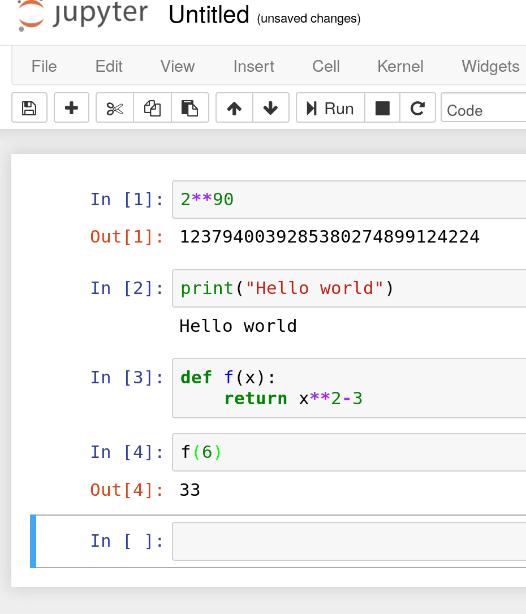
The kernel is state shared by all cells. A variable created in the first cell is available in the tenth; delete the cell and the variable is still in memory.
Two consequences follow immediately:
- A notebook shows not what was executed, but what is left over from execution. You can delete the line
df = load_data(), anddfwill keep working in all other cells because it lives in the kernel. Restart Kernelwipes everything — variables, imports, loaded models. It's not a UI reset but a full restart of the process.
Understanding this explains most of Jupyter's quirks at once, including the infamous execution-order problem.
Advantages of Jupyter Notebook
A regular script has to be run in full every time. If loading the dataset takes two minutes and you're editing a line at the end, you pay those two minutes on every iteration.
In Jupyter, data is loaded once and stays in the kernel's memory. After that you can endlessly edit and rerun only the cell you're working on. For data analysis, where the typical loop is "look at the result, change a parameter, look again," this fundamentally changes how fast you work.
Plots are rendered right in the document, next to the code that produced them, and stay in the file after it's closed. No need to save images or keep a matplotlib window open.
Together with markdown cells, this gives you a document where reasoning, code, results, and conclusions live in one place and in the right order. The research report is the notebook itself — it doesn't need to be assembled separately.
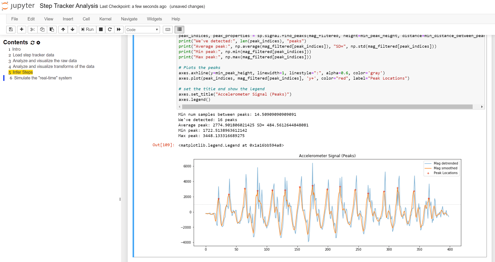
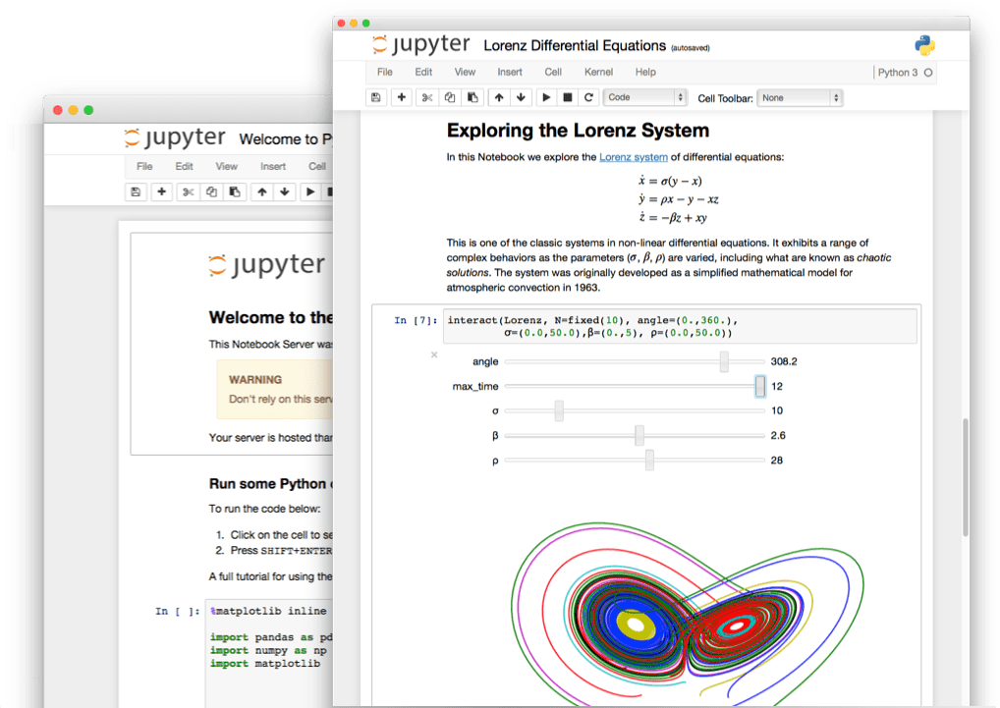
- Sharing results — a
.ipynbfile opens on GitHub with rendered plots; a colleague doesn't need to run anything to see the result. - Many kernels — Python, R, Julia, Scala, and other languages in one interface.
- Extensibility — widgets (
ipywidgets) add sliders and buttons, turning a notebook into a small interactive app. - Working on a remote machine — the kernel can run on a GPU server while the browser is on your laptop. That's how Google Colab and teaching clusters work.
Disadvantages of Jupyter Notebook
Cells can be run in any order and any number of times, and the result depends on what's already in the kernel. A notebook that works perfectly on your screen may fail to run from scratch.
Classic ways this breaks:
- the data-loading cell was deleted, but
dfis still in memory — for a colleague the code fails on the very first line; - a cell was fixed but not rerun — the screen shows the result of the old version;
- a cell was run twice —
df = df.drop(columns=["id"])fails the second time because the column is already gone.
The only reliable check is Restart Kernel and Run All. If the notebook runs top to bottom from a clean kernel, it's reproducible. Do this before every time you send results to a colleague.
A
.ipynbfile is JSON that contains both the code and all the output: text, tables, base64 images, cell execution counts.The consequences are unpleasant: changing one line of code produces a diff of hundreds of lines, merging branches almost always causes a conflict, and megabytes of images end up in the repository. Plus a security risk — tokens and fragments of private data easily leak into the output.
The standard solution is
nbstripout: the tool strips the output before a commit, leaving only code in git. The alternative isjupytext, which stores the notebook as a regular.pyand syncs it with the.ipynb.- Debugging — a full debugger works worse than in an IDE; people usually get by with printing values.
- Testing — writing unit tests for code in cells is practically impossible.
- Not for production — a notebook can't be imported as a module or run on a schedule.
- Memory — the kernel holds all intermediate results, so after an hour of experiments it's easy to hit the RAM ceiling.
The conclusion from these drawbacks is not "don't use Jupyter" but a very concrete practice:
Exploration in a notebook. Finished code in
.pymodules.As soon as a function stops changing and works, it moves to
src/features.py, and the notebook imports it from there. The notebook remains an "experiment log": what was tried, what worked, what conclusions were drawn.This way you get Jupyter's iteration speed, testability, and proper git diffs for the part of the code that really matters.
Common use cases
- Exploratory data analysis (EDA) — look at distributions, find missing values and outliers, test hypotheses about the data.
- Model experiments — train, look at metrics, change a hyperparameter, compare.
- Prototyping — test an idea in ten minutes without setting up a project.
- Teaching — interactive materials where a student edits code and immediately sees the effect.
- Reports — a document with code, plots, and conclusions that can be sent as is.
- Reproducible research — a supplement to a scientific paper that lets others repeat the computations.
Conveniences
- Autocompletion with
Tab— works both for object methods and for file paths. - Built-in help:
pd.merge?opens the documentation,pd.merge??also shows the function's source code. - Magic commands — start with
%or%%, see the table below. - Export to HTML, PDF, Markdown, slides — via
File → Download asorjupyter nbconvert. - Widgets from
ipywidgets— sliders and dropdowns for interactive parameter tuning.
Installing and running on localhost
Jupyter is installed with
pip. There are two versions: the classic Notebook and the more modern JupyterLab with tabs, a file manager, and a variables panel.# Install via pip pip install jupyter # Or JupyterLab (the more modern version) pip install jupyterlab # Launch Jupyter Notebook jupyter notebook # Launch JupyterLab jupyter labAfter running
jupyter notebookorjupyter lab:- a local web server starts (usually on port
8888); - a browser opens automatically with the Jupyter interface;
- a file manager shows the contents of the current directory;
- you can create a new notebook or open an existing one.
Important: the browser is only the interface. Computation happens in the kernel, i.e., in a Python process on your machine (or on a server). Close the tab and the kernel keeps running — when you come back, you'll find all your variables in place.
This may sound complicated: ports, web servers, host, directories... But really all you need to do is run
jupyter notebookand follow the link that appears in the browser (usually something likehttp://localhost:8888orhttp://127.0.0.1:8888).All relative paths in your code are resolved from it as well. Run
jupyter labfrom your home directory, andpd.read_csv("data/train.csv")will look for the file in your home directory, not next to the notebook.You can check the current location with the magic command
%pwd. The most reliable approach is to launch Jupyter from the project root and build paths from there.In the Jupyter interface:
- click "New" $\to$ choose "Python 3" (or another kernel);
- a new notebook opens with an empty cell;
- type code and press
Shift + Enterto run it; Escleaves edit mode for command mode,Enterreturns back.
This is the first thing that confuses beginners. A notebook has two states, and the same keys mean different things in them:
- Edit mode (green cell border) — you're typing inside a cell. The
Bkey inserts the letter "b". - Command mode (blue border) — you manipulate whole cells. The same
Bcreates a cell below.
Switching:
Esc— to command mode,Enter— back to editing. All hotkeys in the list below (A,B,X,M,Y) work only in command mode.Working in VSCode/Cursor via a plugin
To work with Jupyter Notebook in VSCode or Cursor, you need to install an extension:
- open the Extensions panel (
Ctrl+Shift+X, on MacCmd+Shift+X); - find "Jupyter" by Microsoft;
- click "Install".
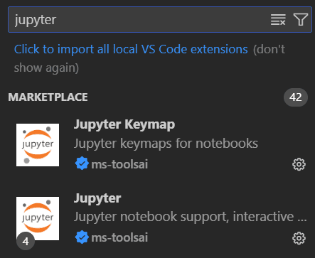
After installing the extension:
- create a new one: create a file with the
.ipynbextension or runCtrl+Shift+P$\to$"Jupyter: Create New Jupyter Notebook"; - open an existing one: just open the
.ipynbfile in the editor; - select a kernel: in the top-right corner, choose a Python interpreter (you may need to install the
ipykernelpackage).
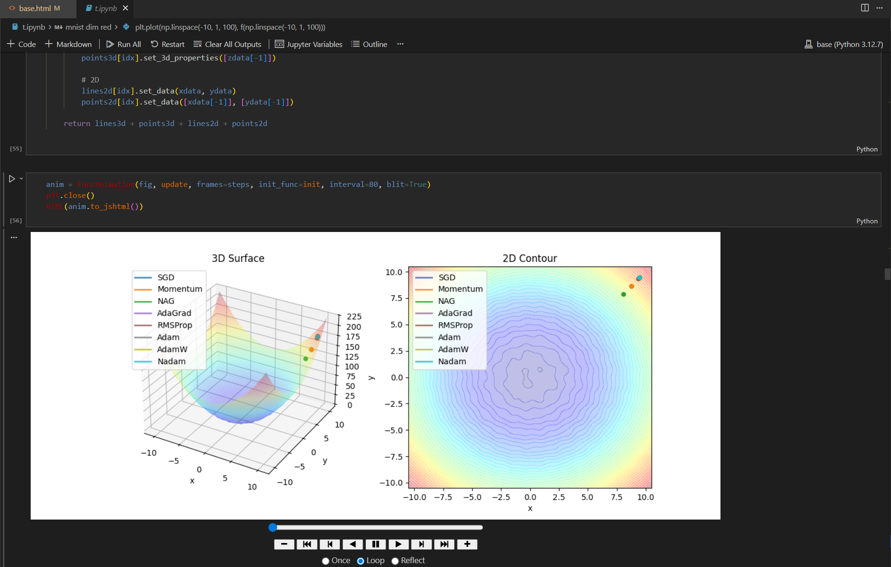
# Install ipykernel to work in VSCode/Cursor pip install ipykernel # Register the current environment as a Jupyter kernel python -m ipykernel install --user --name=myenvipykernelis the bridge between your virtual environment and Jupyter. Without it, the tool doesn't know the environment can be used as a kernel, and it simply won't appear in the list.This also resolves the most common beginner problem: "the library is installed, but the import doesn't work." Usually the cause is that
pip installwas run in one environment while the notebook's kernel runs in another.One-cell diagnostics —
import sys; print(sys.executable). The command shows exactly which Python is running the notebook, making it clear whether the package was installed there.- Familiar environment — the same editor as for the rest of your code, with a shared set of extensions.
- Debugging — a full debugger with breakpoints, which browser-based Jupyter lacks.
- Git — VSCode shows a meaningful diff for
.ipynb, not raw JSON. - Autocompletion — powered by the Pylance engine, which knows types, rather than simple name matching.
- Multiple files — tabs, project-wide search, go to the definition of a function in a neighboring module.
- Terminal — built in, for installing packages and running scripts without switching windows.
Shift + Enter— run the cell and move to the next one.Ctrl + Enter— run the cell without moving.Alt + Enter— run and insert a new cell below.A— insert a cell above (in command mode).B— insert a cell below (in command mode).X— cut the cell,Z— undo deletion (in command mode).M— convert to Markdown,Y— back to code (in command mode).Ctrl + Shift + P— command palette, if you forget a key.
Useful magic commands
Magic commands are special commands of the environment itself (more precisely, IPython) that don't exist in regular Python. They start with
%and do things that are inconvenient to do from code: time execution, install a package, show the current folder.%(line magic) — the command applies to one line:%timeit sum(range(100)).%%(cell magic) — to the whole cell, and such a command must be on its first line:%%time.
For example,
%timetimes a single expression, while%%timetimes the execution of the entire cell.Command Purpose %%writefile filenameCreates a file and writes the cell's contents to it. %matplotlibConfigures matplotlib output (inline / notebook / widget). %pip install ...Installs a package via pip inside the current kernel. %prunProfiles the execution of a Python statement. %pwdShows the current working directory. %resetCompletely clears the workspace. %run file.pyRuns a Python file as a program inside IPython. %timeMeasures the execution time of a single expression. %timeitMore precise timing with many repetitions. %timeitruns an expression many times and takes the best result, filtering out random noise from background processes. This is what you use to compare the speed of two implementations;%timeis too crude for that — a single measurement can differ several-fold.%pip installinstalls a package into exactly the environment where the kernel runs. This matters:!pip installwith an exclamation mark runs in the system shell and can install the package outside the right environment — the source of the eternal "I installed it, but the import fails."%pwdshows the working directory and instantly explains aFileNotFoundErrorwhen reading data.
The exclamation mark is worth remembering separately: a line starting with
!runs as a terminal command —!ls,!nvidia-smi,!git status.What is Jupyter Notebook, and what does it consist of?
An interactive environment where a document is made of cells: code cells run and show their result right below, markdown cells contain text, formulas, and images. Code is executed by a separate process — the kernel — which holds all the state.
What is the kernel, and why does the concept matter?
The kernel is a Python process that lives while the notebook is open; it holds all variables and imports shared by all cells. Because of this, a notebook shows not what was executed but what remains in memory: a deleted cell doesn't delete the variable it created.
Restart Kernelfully resets this state.What is Jupyter's main problem, and how do you deal with it?
Hidden state: cells can be run in any order, so a notebook that works on screen may fail to run from scratch. The only reliable check is "Restart Kernel and Run All" before sharing results.
Why is
.ipynbinconvenient to version in Git?It's JSON containing not only code but all output, including base64 images and execution counts. Changing one line produces a huge diff, merges conflict, and extra megabytes and potentially private data end up in the repository. This is solved with
nbstripout(strips output before a commit) orjupytext(stores the notebook as a.py).How should notebooks and regular modules be combined?
Do exploration and experiments in a notebook, and move code that has stabilized into
.pyfiles and import it from there. This preserves iteration speed while adding testability and proper diffs.How do you run Jupyter locally, and what happens when you do?
pip install jupyter, thenjupyter notebookorjupyter lab. A local web server starts on port 8888, and the browser opens the interface. The browser is only the interface: computation happens in the kernel, and closing the tab doesn't stop it. The working directory is the one the command was run from.How do the
%and%%magic commands differ?%(line magic) applies to one line,%%(cell magic) to the whole cell and must be on its first line. For example,%timeittimes a single expression with many repetitions, while%%timetimes the execution of the entire cell.Why does an installed package sometimes fail to import in a notebook?
Because
pip installwas run in one environment while the kernel runs in another. You can check withimport sys; print(sys.executable); it's more reliable to install packages via%pip install, which works in the current kernel's environment.
-
What is an IDE?
An IDE (Integrated Development Environment) is a program that brings together in one window everything you need to write code: an editor, a debugger, running and testing, version control, and code analysis.
In the simplest terms: it is "a code editor plus a workshop around it." You can write code in Notepad too — you'll just be doing by hand everything an IDE does for you.
A text editor does one thing: display and edit text. An IDE knows that this text is a program and understands its structure:
- it sees that
dfis aDataFrameand suggests its methods; - it knows where a function is declared and jumps to it on click;
- it notices a misspelled name before you run the code;
- it can pause the program at a given line and show the values of all variables.
The line is blurry: VS Code is formally an editor, but with extensions it does everything listed above. In practice, the choice between them is a choice between "everything out of the box, but heavy" and "lightweight, but configured to your taste."
Why use an IDE?
- Autocompletion and signature hints. You don't need to remember the argument order of
train_test_split— the IDE shows it as you type. - Errors before running. Static analysis and linters catch typos in names, unused imports, and wrong types — things you would otherwise discover ten minutes into a script run.
- Debugger. Being able to stop at a line and inspect variables replaces dozens of
printcalls and works whereprintis useless — inside a loop with a million iterations. - Navigation. "Go to definition" and "find all usages" turn someone else's project from a wall of text into a connected graph.
- Refactoring. Renaming a variable across the whole project with one command — safely, unlike find-and-replace.
- Integrations. Git, Docker, tests, and virtual environments in the same window, without switching to a terminal.
This is the item beginners ignore the longest, and they shouldn't.
printdebugging works while the program is small; on a real pipeline, "set a breakpoint and look at what's in the variable" saves hours.The minimum worth learning right away: a breakpoint — click to the left of the line number; step into a function and step over it; the variables panel. That covers 90 % of debugging tasks.
Comparison of popular IDEs (2024–2025)
Parameter VS Code PyCharm Cursor Type Editor + plugins Full-featured IDE AI-powered IDE Best suited for Web, Python, full-stack Large projects, backend Fast development with AI Pros Free, cross-platform, lots of extensions Powerful tools out of the box AI autocompletion, chat, refactoring Cons Plugins need configuring Resource-hungry Subscription, depends on internet Cost Free Community — free, Pro — paid Paid AI access When to choose Beginners, general-purpose development Professional Python development Writing code fast with AI Plugins are the editor's main source of power: they add framework support, better syntax highlighting, autocompletion, linters, Docker and CI/CD integrations, and AI assistants.
The basic Python set for VS Code: the official Python extension (interpreter, debugger, tests), Pylance (fast type analysis and autocompletion), Ruff or Black (style checks and auto-formatting), Jupyter (run notebooks right in the editor), GitLens (line-by-line change history).
Start with exactly this minimum: two dozen extensions at once will turn launching the editor into a waiting game.
The most common beginner problem is not choosing an IDE but that the editor is using the wrong Python. The symptom is recognizable: a library was installed with
pip, but the editor underlines the import in red and says "module not found."The cause: the editor looks at the global interpreter while the package is installed in the project's virtual environment (or vice versa). The fix is to select the interpreter: in VS Code, the "Python: Select Interpreter" command; in PyCharm, the Project Interpreter settings. To check which Python is actually being used, run
which pythonandpip -Vin the IDE's terminal.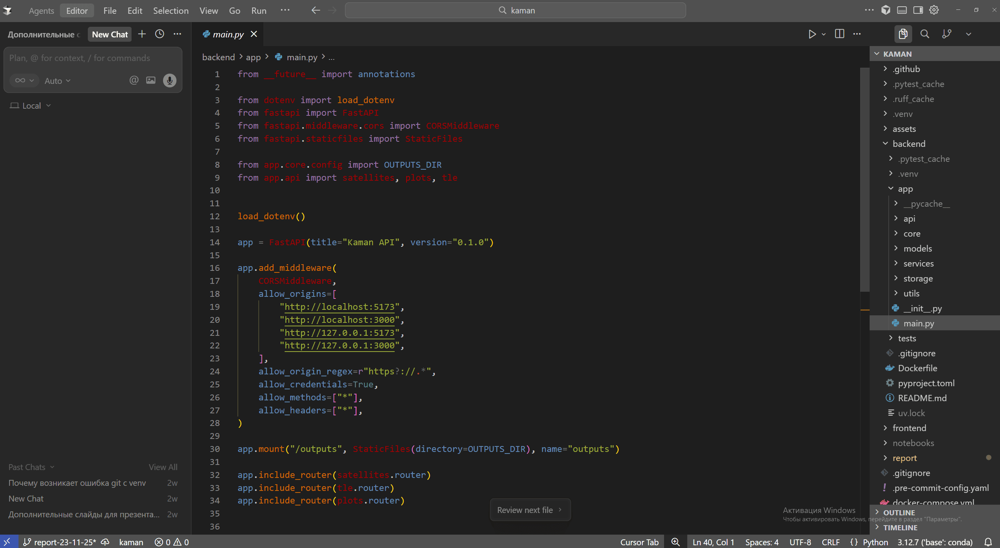
Cursor is a fork of VS Code with an AI assistant: the same interface and the same extensions, plus a chat over your project's code and edit generation right in the editor. 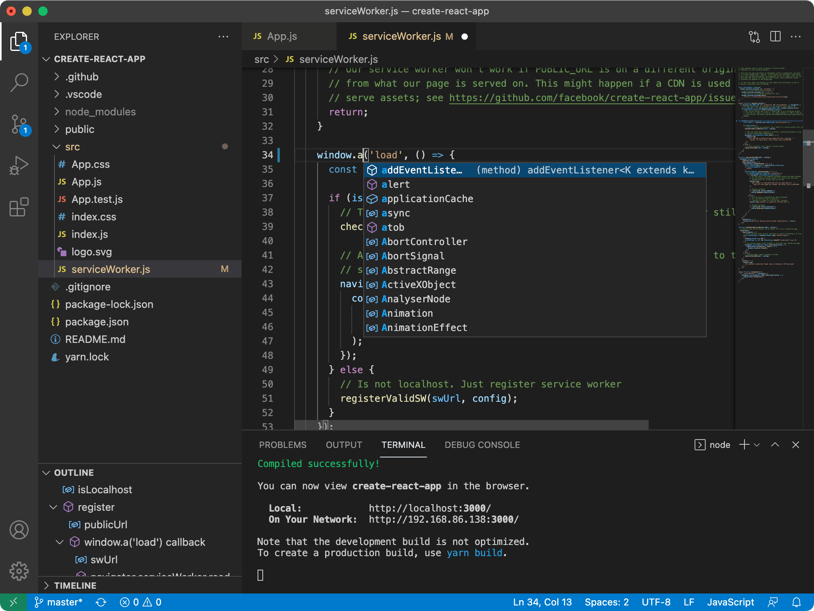
VS Code is the most widespread option: a lightweight editor that gains capabilities through extensions. A good starting point if you're not sure where to begin. 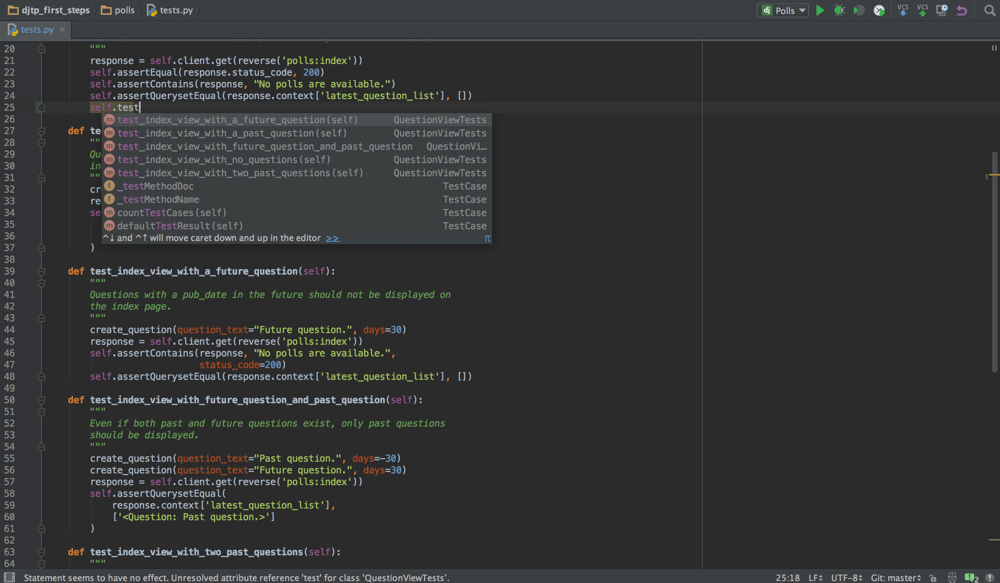
PyCharm is a full-featured IDE: refactoring, a debugger, Django support, and database tools are available immediately, without configuring plugins. The price is heavy memory usage. There is no single best IDE — the choice depends on your tasks: VS Code as a universal starting point, PyCharm for large-scale professional development, Cursor for speeding up work with AI.
Far more important than the choice is how deeply you master any of them: hotkeys, the debugger, project search, Git integration. Someone who knows their tool works faster than someone who keeps switching tools.
I used VS Code for a long time, but around 2024 I switched to Cursor — it gave a big boost to how fast I write boilerplate code and generally made my work more convenient and productive.
How does an IDE differ from a text editor?
A text editor treats code as text; an IDE treats it as a program: it understands its structure, knows object types, finds definitions, catches errors before running, and can pause execution at a given line. The line is blurry — VS Code with extensions covers the same tasks as a full-featured IDE.
What are the main advantages of using an IDE?
Autocompletion and signature hints, static analysis that finds typos and type errors before running, a built-in debugger, "go to definition" and "find usages" navigation, safe refactoring, and integration with Git, Docker, and tests.
Why is the debugger more important than it seems to a beginner?
Because
printdebugging doesn't scale: it doesn't help inside long loops and requires editing and re-running the code. A breakpoint with a view of all variables gives a full snapshot of the program's state at the right moment. The minimum set is breakpoints, step into/over, and the variables panel.When should you choose PyCharm over VS Code?
For large Python projects that need powerful refactoring, deep Django or Flask support, database tools, and a profiler — all of this is available out of the box in PyCharm, whereas in VS Code it is assembled from extensions. The price is noticeably higher resource usage.
What distinguishes Cursor from VS Code?
Cursor is a fork of VS Code with built-in AI: autocompletion aware of the whole project's context, a chat over the code, and edit generation. The interface and extensions are the same; the differences are a paid subscription and dependence on the network.
Why might an IDE underline an installed package as missing?
Because the wrong interpreter is selected: the package is installed in the project's virtual environment, but the editor looks at the global Python (or vice versa). The fix is to explicitly select the project's interpreter; you can check the actual one with
which pythonandpip -Vin the IDE's terminal.
- it sees that
-
Data types. Mutable and immutable types
A data type defines what values an object can hold and what operations are allowed on it: numbers can be added and divided, strings concatenated and sliced, lists extended and sorted.
In Python, everything a program works with is an object of some class: the number
42, a string, a list, and even a function itself. The type is precisely the object's class; you can find it out by callingtype(x).Two properties that are often confused:
- Dynamic means the type is not declared in advance and is bound to the value, not the variable. You can write
x = 42and thenx = "text"— there will be no error. - Strong means Python won't silently convert incompatible types.
"5" + 5raisesTypeErrorinstead of giving"55"or10, as JavaScript or PHP would.
The practical takeaway: Python will report type errors, but only at runtime, when execution reaches that line. That's exactly why large projects add type annotations and static checks — to learn about problems before running the code.
Core Python data types
Group Type Description Numbers intIntegers (e.g., 42, -17) Numbers floatFloating-point numbers (e.g., 3.14, -2.5) Collections listList, e.g. [1, 2, 3]Collections tupleTuple, e.g. (1, 2, 3)Collections setSet, e.g. {1, 2, 3}Collections dictDictionary, e.g. {"a": 1}Other strStrings, e.g. "Hello",'Python'Other boolBoolean values: True,Falseint_val = 42 # int float_val = 3.14 # float str_val = "Python" # str bool_val = True # bool list_val = [1, 2, 3] # list tuple_val = (1, 2, 3) # tuple set_val = {1, 2, 3} # set dict_val = {"a": 1, "b": 2} # dict print(type(int_val)) # <class 'int'>Note that the type isn't written explicitly anywhere — Python infers it from how the value is written. Quotes give a string, square brackets a list, parentheses with commas a tuple, curly braces with colons a dictionary, curly braces without colons a set.
This leads to a couple of traps:
{}is an empty dictionary, not a set (for an empty set there's onlyset()), and(5)is just a number in parentheses; to get a single-element tuple you need a comma:(5,).You can specify a type explicitly, and real projects do: it's documentation understood by IDEs and static analyzers such as
mypy.It's important to understand that the interpreter does not check annotations. The line
x: int = "text"will run without a single complaint at runtime — only an external analyzer will object.int_val: int = 42 float_val: float = 3.14 str_val: str = "Python" bool_val: bool = True list_val: list = [1, 2, 3] tuple_val: tuple = (1, 2, 3) set_val: set = {1, 2, 3} dict_val: dict = {"a": 1, "b": 2}Mutable and immutable data types
A mutable object can be modified in place: its contents change, but the object itself stays the same.
An immutable object never changes after it's created. Any operation that looks like a modification actually creates a new object.
Category Types Properties Mutable list,set,dictCan be modified in place without creating a new object; be careful when passing them to functions — both sides see the same object Immutable int,float,str,bool,tupleAny "changes" produce a new object; safe to pass anywhere; can be dictionary keys and set elements # Mutable: the list changes in place a = [1, 2, 3] b = a # b is not a copy but a second name for the same list! b.append(4) print(a) # [1, 2, 3, 4] <- a "changed" too # Immutable: a string is always a new object s = "hello" s2 = s s += " world" # creates a NEW string and rebinds the name s to it print(s2) # "hello" <- s2 still points to the old stringIn the textbook picture, a variable is a box holding a value, and
b = acopies the contents from one box to another. In Python that's not the case.A variable is a label attached to an object. The line
b = acopies nothing; it simply attaches a second label to the same object. Then:b.append(4)is an action on the object. The object changed, and both labels see the change.s += " world"creates a new object and moves only the labels. The labels2stays on the old string.
Hence the rule: mutability decides whether an operation is reflected under all of an object's names or only under the one that was assigned.
A mutable object is like a Google Docs document: everyone has the same link, and one participant's edit is instantly visible to the others.
An immutable one is like a PDF file: you can't edit it, you can only make a new version. Whoever holds the old link keeps the old document.
A function receives not a copy of the list but the very same object. So
def f(lst): lst.append(1)will modify the list on the caller's side — even if nobody thought about it inside the function.A mutable default value is even more dangerous:
def f(items=[]). The list is created once, when the function is defined, not on every call, so it "accumulates" data between calls. The right way isdef f(items=None)and inside,if items is None: items = [].- Shallow copy:
a.copy(),a[:],list(a),dict(d)— a new top-level container, but the nested objects are shared with the original. - Deep copy:
copy.deepcopy(a)— recursively copies the entire structure; the result is fully independent.
A deep copy costs more time and memory, so by default you use a shallow copy and switch to
deepcopyonly where there are nested mutable objects.import copy original = [[1, 2], [3, 4]] shallow = original.copy() # shallow: new outer list, same inner lists deep = copy.deepcopy(original) # deep: everything is copied shallow[0].append(99) print(original[0]) # [1, 2, 99] <- the shallow copy didn't protect the nested list print(deep[0]) # [1, 2] <- the deep copy is independentA classic scene: a data preparation function receives a list of features, does
features = features.copy()"just in case," and modifies nested config dictionaries inside. An hour later you discover that the original config changed too.The cause is exactly the one from the example above: the copy protected only the top level. A diagnostic trick is to compare the
id()of nested objects: ifid(original[0]) == id(shallow[0]), it's the same object, and no copy separated it.At first glance immutability is just a restriction. In reality it gives you three things:
- Hashability. A hash is a fingerprint of the contents; it only makes sense if the contents don't change. That's why strings, numbers, and tuples can be dictionary keys and set elements, but lists can't.
- Safe passing. An immutable object can't be corrupted by someone else's code, so there's no need to copy it "just in case."
- Predictability with multithreading. An object that nobody modifies doesn't need locks for concurrent reads.
A
tuplefixes its composition: you can't replace an element or add a new one. But if a tuple contains a list, the contents of that list can be changed:t = (1, [2, 3]); t[1].append(4)will work.Consequence: such a tuple is no longer hashable, and trying to use it as a dictionary key raises
TypeError: unhashable type: 'list'.What kind of typing does Python have, and what does it mean in practice?
Dynamic and strong. Dynamic — the type belongs to the value, not the variable, and doesn't need to be declared in advance. Strong — there are no implicit conversions between incompatible types:
"5" + 5raisesTypeError. Type errors surface at runtime, which is why large projects use annotations andmypy.Which types are mutable and which aren't?
Mutable:
list,set,dict. Immutable:int,float,str,bool,tuple. For mutable types an operation modifies the object itself; for immutable ones it creates a new object.What happens on
b = aifais a list?Nothing is copied:
bbecomes a second name for the same object. A change viab.append(...)is visible throughatoo. For an independent copy you needa.copy()orcopy.deepcopy(a).What's the difference between
copy()anddeepcopy()?copy()creates a new top-level container, but nested objects remain shared with the original.deepcopy()recursively copies the whole structure, and the result is fully independent — at the cost of more time and memory.Why can immutable objects be dictionary keys but mutable ones can't?
A key must be hashable, and a hash is a fingerprint of the contents that must stay constant. A mutable object's contents could change after insertion, and the element would "get lost" in its bucket, so Python forbids such keys.
Why shouldn't a mutable object be used as a default argument value?
The default value is evaluated once, when the function is defined, not on every call. The list from
def f(items=[])will be shared by all calls and start accumulating data. The right approach isitems=Noneand creating the list inside the function.Is a tuple really completely immutable?
It fixes only its composition: you can't replace or add an element. If it contains a mutable object, that object's contents can be changed, and such a tuple is no longer hashable.
- Dynamic means the type is not declared in advance and is bound to the value, not the variable. You can write
-
More on data types
This question walks through four families of built-in types in turn: sequences (
list,tuple,str), sets (set), mappings (dict), and numbers (int,float,bool).The common thread that explains almost every difference between them is mutability (mutable / immutable). A mutable object can be modified in place; an immutable one cannot, and any "change" creates a new object. This one property determines what you can put in a set, what can serve as a dictionary key, and why a tuple is sometimes safer than a list.
list,tuplelist— an ordered mutable collection: for dynamic sequences where elements are frequently added, removed, and changed.tuple— an ordered immutable collection: for fixed records (coordinates, an RGB color, a table row), for dictionary keys, and for returning several values from a function.A list is a notebook: you can add entries, erase them, and correct them, and the notebook itself stays the same.
A tuple is an engraving on a plaque: the content is fixed forever. Need something different? Order a new plaque.
That is the practical value of immutability: a tuple cannot be accidentally corrupted from another part of the program, it is safe to pass around anywhere, and it can be hashed — that is, used as a dictionary key or a set element.
Syntax:
a[start:stop:step]— any part can be omitted. Negative indices count from the end:-1is the last element,-2is the second to last.The key rule to learn right away: the left bound is included, the right bound is not.
a[2:7]takes the elements at indices 2, 3, 4, 5, 6, but not 7.a = [0, 1, 2, 3, 4, 5, 6, 7, 8, 9] a[2:7] # [2, 3, 4, 5, 6] — right bound excluded a[:4] # [0, 1, 2, 3] — from the start a[6:] # [6, 7, 8, 9] — to the end a[-3:] # [7, 8, 9] — last three a[::2] # [0, 2, 4, 6, 8] — every other one a[::-1] # [9, 8, 7, 6, 5, 4, 3, 2, 1, 0] — reversedThanks to this convention, the length of a slice is trivial to compute:
a[start:stop]contains exactlystop - startelements. And adjacent slices join with no overlap and no gaps:a[:3]anda[3:]together give back the whole original list.A second handy consequence: a slice never raises
IndexError.a[5:100]on a ten-element list returns whatever is there instead of an error. A plain accessa[100], on the other hand, will fail. This is convenient but also dangerous: a typo in the bounds won't announce itself — it will quietly return an empty list.# Slice assignment — works only for list; tuple and str don't support it a = [0, 1, 2, 3, 4, 5, 6, 7, 8, 9] a[2:5] = [20, 21] # replaces elements at indices 2..4 (3 in, 2 out — the list got shorter) a[:0] = [-2, -1] # insert at the beginning a[::2] = [0] * len(a[::2]) # stepped assignment: the right-hand length must match exactlylistis mutable. A shallow copy:b = a[:],a.copy(),list(a)— creates a new list, but the nested objects inside it are the same ones.- A deep copy:
copy.deepcopy(a)— recursively copies nested mutable objects as well. tupleis immutable, but only in terms of its composition: if a tuple contains a list, that list itself can be modified — the tuple stores a reference to it, not its contents.
b = a[:]on a list of lists creates a new outer list, but the inner lists are the same objects. The changeb[0].append(99)will also be visible ina[0], because it is literally the same list.Symptom: "I copied the data, but changes still leaked into the original." The fix is
copy.deepcopy, but it is more expensive — for flat lists of numbers and strings a regular copy is enough.A tuple can be built without parentheses and unpacked into variables in one line. The star
*collects "everything else" into a list — a convenient way to separate the first and last elements from the middle.t = 1, 2, 3 # t = (1, 2, 3) — parentheses are optional x, y, z = t # x = 1, y = 2, z = 3 head, *mid, tail = [1, 2, 3, 4, 5] # head = 1, mid = [2, 3, 4], tail = 5 head, mid, tail = [1, 2, 3, 4, 5] # ValueError: too many values to unpack (expected 3)It's everywhere, even when you don't notice it:
- swapping values without a temporary variable:
a, b = b, a; - looping over a dictionary:
for key, value in d.items()— that's unpacking a pair; - looping with an index:
for i, item in enumerate(items); - returning several values from a function:
return mean, std— what is actually returned is a single tuple, which is immediately unpacked on the receiving side.
The number of variables on the left must exactly match the number of elements — otherwise you get
ValueError. That is exactly why the starred form is so useful: it removes the need to know the length in advance.- Adding:
append(x)— one element at the end;extend(iter)— all elements of another sequence;insert(i, x)— at an index. - Removing:
remove(x)— by value (first occurrence);pop([i])— by index, returning the value;clear(). - Searching:
index(x)— index of the first occurrence;count(x)— how many times it occurs. - Ordering:
sort(key=None, reverse=False)— sorts in place;reverse();copy().
a.append([1, 2])adds one element — a nested list — and the length grows by 1.a.extend([1, 2])adds two elements, and the length grows by 2.A similar pair is
sort()andsorted(). The first sorts the list in place and returnsNone; the second leaves the original untouched and returns a new list. Writinga = a.sort()is a classic mistake:aends up beingNone.A tuple has only two methods of its own —
count(x)andindex(x): anything that modifies contents simply makes no sense for an immutable type.That said, all the general-purpose functions work with tuples:
len,sum,min,max,sorted(returns a list),enumerate,zip, and theinoperator.squares = [x*x for x in range(10) if x % 2 == 0] coords = [(x, y) for x in range(3) for y in range(2)] # There is no tuple comprehension: parentheses give a generator, not a tuple gen = (x*x for x in range(10)) t = tuple(x*x for x in range(10)) # if you really need a tuple, wrap it explicitlyThe
forsyntax is covered in detail a bit later — here it is used only as a way to build a collection.setA
setstores unique hashable elements with no defined order. It gives you two things a list doesn't: automatic deduplication and a very fast membership testx in s.When checking
x in a, a list honestly goes through the elements one by one — half the list on average. With a million elements that's a million comparisons, $O(n)$ complexity.Instead of scanning, a set computes the hash of the element — a number that immediately tells it which "bucket" to look in — and checks only that bucket. The average complexity is $O(1)$, meaning it doesn't depend on the size of the set.
The practical effect is huge: replacing a list with a set in a "have we already seen this id" check turns an algorithm from quadratic into linear. If your code has
if x in big_listinside a loop, that's almost always a place that needs aset.s = {1, 2, 3} s = set([1, 2, 2, 3]) # {1, 2, 3} — the duplicate disappeared on its own empty = set() # empty set: {} is an empty dict, not a set! fs = frozenset([1, 2, 3]) # immutable set; it can go into a dict or a seta = {1, 2, 3} b = {3, 4, 5} print(a | b) # union {1, 2, 3, 4, 5} print(a & b) # intersection {3} print(a - b) # difference {1, 2} print(a ^ b) # symmetric difference {1, 2, 4, 5} print(a.issubset(b)) # is a a subset of b print(a.issuperset(b)) # is a a superset of b- Comparing the columns of two dataframes:
set(df1.columns) - set(df2.columns)instantly shows which features are missing. - Checking for data leakage:
set(train_ids) & set(test_ids)must be empty; a non-empty intersection means the same objects ended up in both training and test. - Vocabulary:
set(words_a) ^ set(words_b)— words that appear in only one of the two texts.
- Adding:
add(x)— one element;update(iter)— several at once. - Removing:
remove(x)— raisesKeyErrorif the element is missing;discard(x)— silently does nothing;pop()— removes an arbitrary element;clear(),copy(). - Operations:
union,intersection,difference,symmetric_difference— the same as the operators|,&,-,^, but they accept any iterable, not just a set.
- Only hashable elements. You can't put a
listor adictinside — you'll getTypeError: unhashable type. A tuple of hashable elements is fine. - Order is not guaranteed. A set doesn't remember the order in which you added elements; you can't rely on the output order. If you need order, use a list and enforce uniqueness separately.
- No indexing.
s[0]doesn't work: set elements have no positions.
A hash is a number computed from an object's contents that serves as its "fingerprint." Sets and dictionaries distribute elements into buckets by hash, which is why they find them so quickly.
This only works if the fingerprint doesn't change over time. A list is mutable: add an element and the contents are different while the object is the same. It would "get lost" in its bucket, and
inwould stop finding it. So Python simply forbids hashing mutable objects.Hence the rule: immutable types are hashable — numbers, strings,
bool,None,frozenset, and tuples, as long as everything inside them is hashable too. The tuple(1, [2])is already unhashable because it contains a list.dictA
dict(dictionary) is a "key $\to$ value" mapping. A value is found by key in $O(1)$ on average — using the same hashing mechanism as a set.Keys must be hashable (that is, immutable), while values can be anything.
A list answers the question "what is at position 5?" A dictionary answers "what is stored under the name
"user_id"?"When data is naturally described as "name $\to$ value" pairs (settings, counters, object properties, a computation cache), a dictionary is both more convenient and faster. Searching a list of pairs
[("a", 1), ("b", 2)]for a key by scanning is a typical beginner mistake: it's exactly what a dictionary does in a single operation.d = {"a": 1, "b": 2} # literal d = dict(a=1, b=2) # via keyword arguments d = dict([("a", 1), ("b", 2)]) # from a list of pairs d = dict(zip(["a", "b"], [1, 2])) # from two parallel lists d = {k: k*k for k in range(5)} # dict comprehension d = dict.fromkeys(["x", "y"], 0) # {'x': 0, 'y': 0}d["a"] = 10 # assignment (creates the key if it doesn't exist) value = d.get("a", 0) # safe read: returns 0 instead of KeyError d.setdefault("c", 3) # return the value, and create the key if it's missing d.update({"a": 100, "d": 4}) # bulk updated["a"]— raisesKeyErrorif the key is missing. The right choice when the key must be there: better to fail loudly than to silently continue with bad data.d.get("a", 0)— returns a default value. For optional settings and counters.d.setdefault("c", [])— returns the value, and if the key wasn't there, also creates it. The classic use case is grouping:d.setdefault(key, []).append(item).
Worth remembering separately:
d.get(key)without a second argument returnsNone, which is easy to confuse with "the dictionary storesNoneunder this key." To tell them apart, checkkey in d.- Reading:
get,setdefault,keys(),values(),items(). - Modifying:
update,pop(key[, default]),popitem()(removes the most recently added pair),clear(),copy(). - Checking: the
inoperator checks for a key, not a value:"a" in d.
# iterating over key-value pairs for key, value in d.items(): print(f"{key}: {value}") # keys only (same as plain for key in d) for key in d.keys(): print(key)- Keys are unique: on reassignment the last value overwrites the previous one, without warning.
- A key must be hashable: strings, numbers,
bool, tuples of hashable elements are fine; lists and dictionaries are not. - Since Python 3.7, a dictionary is guaranteed to preserve insertion order. It used to be an implementation detail; now it's part of the language specification, and you can rely on the order.
for k in d: del d[k]raisesRuntimeError: dictionary changed size during iteration. The same applies to adding keys inside a loop over the dictionary.The right approach is to iterate over a copy of the keys:
for k in list(d):.list(d)takes a snapshot of the keys, and you can safely modify the dictionary. The same rule applies to sets and to removing elements from a list during a loop.int,floatIn most languages
intis a fixed 32 or 64 bits, and exceeding the range causes an overflow. In Python, integers have arbitrary precision:10**50is computed exactly, and the only limit is memory.The price is speed: arithmetic on big numbers is noticeably slower than native machine arithmetic. That's why NumPy uses fixed-width types (
int32,int64), where overflow is indeed possible — a regular source of surprises when moving from pure Python to arrays.floatis an IEEE 754 double-precision number, that is, a binary fraction. Just as $1/3$ can't be written exactly in decimal (0.333…), $0.1$ can't be written exactly in binary: it becomes an infinite repeating fraction that gets truncated to 53 significant bits.As a result, memory holds numbers slightly larger than 0.1 and slightly larger than 0.2, their sum is
0.30000000000000004— and the comparison with an exact0.3fails.Takeaway: never compare floating-point numbers for equality. The right way is to compare with a tolerance:
abs(a - b) < 1e-9ormath.isclose(a, b). For money, where being off by a cent is unacceptable, usedecimal.Decimal; for exact fractions,fractions.Fraction.x = 10**50 # big int — computed exactly y = 0.1 + 0.2 # 0.30000000000000004 print(y == 0.3) # False import math print(math.isclose(y, 0.3)) # True — the right way to compare from decimal import Decimal print(Decimal("0.1") + Decimal("0.2")) # Decimal('0.3') — exact decimal arithmeticround(x, n)— rounding;abs(x)— absolute value;pow(a, b)ora ** b— exponentiation;divmod(a, b)— quotient and remainder at once as a tuple; themathmodule — roots, logarithms, trigonometry.A subtle point:
roundin Python uses "banker's rounding" —round(0.5)gives0andround(1.5)gives2, i.e., it rounds to the nearest even number. This prevents a systematic upward bias from accumulating in bulk rounding, but the first time you run into it, it looks like a bug.str,boolstris an immutable sequence of Unicode characters. It supports the same slicing and indexing as a list, but you can't change a character in place:s[0] = "h"raisesTypeError.All the "modifying" methods (
replace,upper,strip) actually return a new string, and the original stays the same.s = "Hello, Python!" s[:5] # 'Hello' s[7:] # 'Python!' s[::-1] # '!nohtyP ,olleH' s.upper() # 'HELLO, PYTHON!' print(s) # 'Hello, Python!' — the original is unchanged!Since strings are immutable,
result += linein a loop creates a new string every time and copies everything accumulated so far into it. For $n$ strings that's quadratic time: at tens of thousands of iterations, the difference goes from unnoticeable to catastrophic.The right way is to accumulate the pieces in a list and join them once:
"".join(parts). The same applies to building a string from dataframe elements or file lines.- Case:
lower,upper,title,capitalize. - Trimming whitespace:
strip,lstrip,rstrip. - Search and replace:
find(returns-1if not found),index(raisesValueError),replace,count,startswith,endswith. - Splitting and joining:
split,rsplit,splitlines,join. - Checks:
isdigit,isalpha,isalnum,isspace. - Formatting: f-strings
f"{x:.2f}", theformatmethod.
s = "Hello, Python!" s.lower() # 'hello, python!' s.split(',') # ['Hello', ' Python!'] — note the space '_'.join(['Hello', 'Python']) # 'Hello_Python' s.replace('Python', 'Java') # 'Hello, Java!' s.count('o') # 2 s.startswith('Hello') # Truesplitturns a string into a list:"a,b,c".split(",")$\to$["a", "b", "c"].joinassembles a list back into a string, and it is called on the separator:",".join(["a", "b", "c"])$\to$"a,b,c".The "separator dot join" order looks unusual but is logical: the method belongs to the separator string, and the list comes in as the argument. Also:
joinworks only with strings —",".join([1, 2])fails withTypeError; the elements must be converted first:",".join(map(str, [1, 2])).split()with no arguments is worth remembering separately: it splits on any whitespace at once and ignores repeats, so" a b ".split()gives exactly["a", "b"]— usually what you want when parsing text.Trueis literally1andFalseis0, and you can do arithmetic with them:sum([True, False, True])gives2. A common counting trick relies on this:sum(x > 0 for x in data)counts how many elements are positive.The truthiness of an arbitrary object is determined by the
__bool__method, or, if it's absent, by__len__: an empty container is falsy, a non-empty one is truthy. So the "empty = false" rule automatically works for your own classes too, as long as they define a length.bool(0) # False bool("") # False bool([]) # False bool({}) # False bool(None) # False bool(1) # True bool("Hello") # True bool([1, 2, 3]) # True sum([True, False, True]) # 2 — bool behaves like a numberHow does
listdiffer fromtuple, and when should you choose which?listis mutable — for dynamic collections that get extended and edited.tupleis immutable — for fixed records (coordinates, RGB), for dictionary keys and set elements, and for returning several values from a function. Immutability provides both protection from accidental edits and the ability to be hashed.What do
a[2:7],a[::2], anda[::-1]mean?A slice
[start:stop:step]:a[2:7]— elements at indices 2..6 (the right bound is excluded),a[::2]— every other element,a[::-1]— reversed. A slice doesn't raiseIndexErrorwhen going out of bounds:a[5:100]simply returns whatever is there.What is hashability, and why can't you put a list in a set?
A hash is a "fingerprint" of the contents that lets a set or dictionary find an element instantly. It must stay constant over time, but a list can be modified after being added — the element would "get lost" in its bucket. So only immutable types are hashable: numbers, strings,
bool,None,frozenset, and tuples of hashable elements.Why is
x in sfaster for a set than for a list?A list scans elements linearly, $O(n)$. A set computes the hash and checks just one bucket — $O(1)$ on average, regardless of size. That's why
if x in big_listinside a loop should almost always be replaced with a set.How do you safely read a key that may not be in the dictionary?
d.get(key, default)returns a default value instead of raisingKeyError;d.setdefault(key, value)additionally creates the key if it was missing (handy for grouping). A directd[key]is appropriate where a missing key is a real error and you want to fail loudly.Why is
0.1 + 0.2 != 0.3, and how should you compare floating-point numbers?A
floatis stored as a finite-length binary fraction, and 0.1 is a repeating fraction in binary — it can't be represented exactly. Compare with a tolerance:math.isclose(a, b)orabs(a - b) < 1e-9. For money usedecimal.Decimal; for exact fractions,fractions.Fraction.Why is concatenating strings in a loop with
+=a bad idea?Strings are immutable, so each operation creates a new string and copies everything accumulated so far into it — quadratic time overall. The right way is to accumulate the parts in a list and call
"".join(parts)once.Does a dictionary preserve insertion order?
Yes, since Python 3.7 it is guaranteed by the language specification (in 3.6 it was an implementation detail). A set, however, does not guarantee order, and you can't rely on it.
-
Operations
Operations are actions on values: add, divide, compare, combine. They're written with symbols — operators (
+,*,//) — and the values they're applied to are called operands.The syntax is familiar from school math, but some operators have quirks that school never covered: two different kinds of division, remainders of negative numbers, operations on bits.
An important feature of Python: an operator's meaning depends on the types of its operands.
3 + 5— arithmetic addition,8."ab" + "cd"— string concatenation,"abcd".[1, 2] + [3]— list concatenation,[1, 2, 3].np.array([1,2]) + np.array([3,4])— element-wise addition,[4, 6].
Technically this is handled by the
__add__dunder method of the corresponding class. And with incompatible types ("5" + 5), Python doesn't guess — it honestly fails withTypeError.Addition
Adds two values. For numbers it's the arithmetic sum; for strings and lists it's concatenation.
a = 1 b = 5 c = a + b # 6Subtraction
Subtracts one value from another. Unlike
+, it's not defined for strings and lists:"abc" - "a"raisesTypeError.a = 1 b = 5 c = a - b # -4Multiplication
Multiplies two values. For a "sequence and integer" pair it means repetition:
"ab" * 3gives"ababab", and[0] * 5gives a list of five zeros.a = 4 b = 5 c = a * b # 20 zeros = [0] * 5 # [0, 0, 0, 0, 0] — a handy way to create a placeholder line = "-" * 30 # a separator of 30 hyphensList repetition copies references, not contents.
matrix = [[0] * 3] * 2gives two names for the same inner row: writingmatrix[0][0] = 1changes both rows.The right way is a comprehension:
[[0] * 3 for _ in range(2)]— here the inner list is created anew on each iteration.Division
Divides one value by another and always returns a
float, even when the result is whole:4 / 2gives2.0, not2.a = 1 b = 5 c = a / b # 0.2 print(4 / 2) # 2.0 — a float, note the decimal point print(10 / 0) # ZeroDivisionErrorThis is a deliberate Python 3 decision. In Python 2 the
/operator behaved differently depending on the types:5 / 2gave2, while5.0 / 2gave2.5. This regularly caused silent bugs — the result quietly lost its fractional part.Now there's one rule with no exceptions:
/is ordinary division and always afloat; if you need an integer, there's a separate//operator.Modulo (remainder)
Returns the remainder of dividing one number by another: what "didn't fit" in integer division.
a = 100 b = 3 c = a % b # 1, because 100 = 3 * 33 + 1 print(7 % 2) # 1 — odd print(8 % 2) # 0 — even- Checking parity and divisibility:
if i % 2 == 0,if step % 100 == 0: log(...)— log every hundredth training step. - Cyclic indexing:
colors[i % len(colors)]— cycle through a palette no matter how many elements there are. - Splitting into groups:
fold = idx % k— the simplest way to distribute objects across $k$ cross-validation folds. - Unit conversion:
minutes, seconds = divmod(total, 60)—divmodreturns both the quotient and the remainder as one tuple.
-7 % 3in Python gives2, not-1as in many languages (C, Java, JavaScript).The reason: in Python the sign of the result matches the sign of the divisor, not the dividend. This is convenient for exactly the scenario the remainder is usually taken for — cyclic indexing:
-1 % len(arr)correctly gives the last index rather than a negative number.But if you're porting an algorithm from another language, check this spot separately.
Integer (floor) division
Divides and rounds the result down (toward negative infinity), discarding the fractional part.
a = 100 b = 3 c = a // b # 33 print(7 // 2) # 3 print(-7 // 2) # -4, NOT -3: rounding down, not "toward zero" print(7.0 // 2) # 3.0 — if an operand is a float, the result is a float tooFor positive numbers there's no difference; for negative ones there is:
-7 // 2gives-4, because-3.5is rounded down to-4.If you specifically need to "drop the fractional part" (rounding toward zero), use
int(-7 / 2), which gives-3, ormath.trunc.And a related rule:
a // banda % bare always consistent with each other —b * (a // b) + a % b == aholds for any signs.Exponentiation
Raises the left operand to the power of the right one. It also works with fractional powers:
x ** 0.5is the square root.a = 100 b = 3 c = a ** b # 1000000 print(2 ** 10) # 1024 print(9 ** 0.5) # 3.0 — square root print(2 ** -1) # 0.5 — a negative power gives a fractionAlmost all operators are evaluated left to right, but
**goes right to left:2 ** 3 ** 2means2 ** (3 ** 2) = 2 ** 9 = 512, not(2 ** 3) ** 2 = 64.That's the convention in math: $2^{3^2}$ reads exactly as "two to the ninth power". But if you come across such an expression in code, add explicit parentheses — the reader won't have to recall the rule.
Bitwise operations
Any integer is stored in a computer as a sequence of bits — zeros and ones. We write numbers in decimal, but the machine works in binary.
Bitwise operations work not with the number as a whole but with each of its bits separately.
The number $10$ in binary is $1010$. Each position is a power of two, from right to left: $2^0, 2^1, 2^2, 2^3$.
$$10_{10} = \overbrace{1}^{2^3} \overbrace{0}^{2^2} \overbrace{1}^{2^1} \overbrace{0}^{2^0} = 1010_{2}$$
To check it back, multiply each bit by its weight and sum:
$$1010_2 = 1 \cdot 2^3 + 0 \cdot 2^2 + 1 \cdot 2^1 + 0 \cdot 2^0 = 8 + 0 + 2 + 0 = 10_{10}$$
First method — pick powers of two that sum to 125:
$$125 = 2^6 + 2^5 + 2^4 + 2^3 + 2^2 + 2^0 = 64 + 32 + 16 + 8 + 4 + 1$$
Second method, convenient for computing by hand — start from a round number and subtract one at a time:
$$128_{10} = 2^7 = 10000000_2\\ 127_{10} = 01111111_2\\ 126_{10} = 01111110_2\\ 125_{10} = 01111101_2$$
There's also the school method — repeatedly divide by 2 and write the remainders from bottom to top.
Manual computation is only for understanding; in code there are ready-made functions:
bin(x)— to binary,hex(x)— to hexadecimal,int("1010", 2)— back from a string.decimal_number = 10 binary_string = bin(decimal_number) print(binary_string) # '0b1010' — 0b is the binary prefix print(int("1010", 2)) # 10 — reverse conversion print(format(10, "08b")) # '00001010' — with leading zeros, for clarityBitwise AND (
AND,&)Sets a
1in a bit of the result only when both numbers have a1in that bit.a = 10 # 1010 b = 3 # 0011 c = a & b # 2, because 1010 & 0011 = 0010 = 2Bitwise OR (
OR,|)Sets a
1if at least one of the numbers has a one there.a = 10 # 1010 b = 3 # 0011 c = a | b # 11, because 1010 | 0011 = 1011 = 11Bitwise exclusive OR (
XOR,^)Sets a
1if the bits differ:1^0 = 1,0^1 = 1, while1^1 = 0and0^0 = 0.a = 10 # 1010 b = 3 # 0011 c = a ^ b # 9, because 1010 ^ 0011 = 1001 = 9 print(5 ^ 5) # 0 — a number XORed with itself always gives zeroApplication programmers don't use them often, but there are recognizable scenarios:
- Flags in a single number. Permissions, settings, and states are packed into bits:
flags & READchecks the read permission,flags | WRITEadds the write permission. This is how Unix file permissions work. - Fast multiplication and division by powers of two.
x << 1is a left shift, the same asx * 2;x >> 1halves the number, rounding down. - Parity check:
x & 1gives1for odd and0for even — it's the least significant bit. - XOR properties:
a ^ a == 0anda ^ 0 == a. Hence the classic problem: find the single non-repeating number in a list where all others appear in pairs — just XOR all the elements together. - Sets in pandas and NumPy: there
&and|mean element-wise "and" and "or" for boolean masks — that's why conditions are written asdf[(df.a > 1) & (df.b < 5)].
andworks with the truthiness of the whole object and short-circuits — it doesn't evaluate the second operand if the result is already known.&works bitwise and always evaluates both operands.For numbers they give completely different answers:
2 and 3returns3(both are truthy, the last one is returned), while2 & 3returns2(10 & 11 = 10).For conditions, always use
and/or. Use&/|for bits, for sets, and for boolean masks in pandas and NumPy.Augmented assignment operators
x = 10 x += 3 # same as x = x + 3 -> 13 x -= 5 # 8 x *= 2 # 16 x //= 3 # 5 x **= 2 # 25 x %= 7 # 4For immutable types,
x += 1andx = x + 1are fully equivalent. For lists, though, there's a difference:lst += [1]modifies the existing list in place (likeextend), whilelst = lst + [1]creates a new one.The difference shows up when there's a second reference to the list: in the first case both names see the change, in the second only the left one does.
Operator precedence
When an expression contains several operations, Python doesn't execute them left to right but in order of precedence — as in math, where multiplication comes before addition.
Level Operators Highest **(exponentiation)+x,-x,~x(unary)*,/,//,%+,-<<,>>(bit shifts)&(bitwise AND)^(bitwise XOR)|(bitwise OR)Comparisons: <,<=,>,>=,==,!=,in,isnotandLowest orprint(2 + 3 * 4) # 14, not 20 — multiplication before addition print((2 + 3) * 4) # 20 — parentheses change the order print(2 ** 3 ** 2) # 512 — ** is right-associative: 2 ** (3 ** 2) = 2 ** 9 print((2 ** 3) ** 2) # 64The most painful row of the table for anyone working with pandas. Bitwise operators sit above comparisons, so the expression
df.a > 1 & df.b < 5is parsed asdf.a > (1 & df.b) < 5—&first, and only then the comparisons.The result is either a
TypeErroror, worse, a silently wrong result. That's why in pandas every condition must be wrapped in parentheses:df[(df.a > 1) & (df.b < 5)].You don't need to memorize the whole table. It's enough to know the top rows (exponentiation, multiplication, addition) and the general rule: logical operators are evaluated last.
In all non-obvious cases, parentheses beat rules — they're unambiguous and spare the reader from checking the table.
How does
/differ from//?/is ordinary division and always returns afloat, even if the result is whole (4 / 2gives2.0).//is floor division, rounding down:7 // 2gives3, and-7 // 2gives-4, not-3. To drop the fractional part toward zero, you needint(a / b).What does the
%operator do, and where is it used?It returns the remainder of division. It's used for checking parity and divisibility (
step % 100 == 0), cyclic indexing (colors[i % len(colors)]), splitting into folds, and converting time units. In Python the sign of the result matches the sign of the divisor, so-7 % 3gives2, not-1.How does
**work, and in what order is2 ** 3 ** 2evaluated?It raises the left operand to the power of the right one; a fractional power gives a root (
9 ** 0.5=3.0). It's the only right-associative operator:2 ** 3 ** 2is evaluated as2 ** (3 ** 2) = 512.What are bitwise operations, and how does
&work?Operations on the individual bits of a number's binary representation.
&sets a one only where both operands have one:10 & 3is1010 & 0011 = 0010 = 2. Similarly,|— a one in at least one,^— the bits differ.How does
&differ fromand?andworks with the truthiness of the whole object and doesn't evaluate the second operand if the result is already determined.&works bitwise and evaluates both operands. For numbers they give different results:2 and 3is3, while2 & 3is2. Useandin conditions, and&with parentheses for boolean masks in pandas and NumPy.Why must conditions in pandas be wrapped in parentheses?
Because
&has higher precedence than comparison operators:df.a > 1 & df.b < 5is parsed incorrectly and gives either an error or a silently wrong result. Parentheses around each comparison solve the problem.How does
lst += [x]differ fromlst = lst + [x]?The first modifies the existing list in place, like
extend; the second creates a new list and rebinds the name to it. The difference is visible if there's a second reference to the list: in the first case both names see the change, in the second only the left one does.
-
Shorthand Operators
Augmented assignment operators are a shorthand for
a = a op b, written asa op= b.Instead of
total = total + x, you writetotal += x. The meaning is the same, but the variable name isn't repeated, and the intent — "update the existing value" — is obvious at a glance.a = 10 a += 1 # a = a + 1 -> 11 a -= 3 # a = a - 3 -> 8 a *= 2 # a = a * 2 -> 16 a /= 4 # a = a / 4 -> 4.0 (true division always returns a float) a //= 1 # a = a // 1 -> 4.0 (floor division) a %= 3 # a = a % 3 -> 1.0 (remainder) a **= 4 # a = a ** 4 -> 1.0Every binary operator has an augmented version:
- arithmetic:
+=,-=,*=,/=,//=,%=,**=; - bitwise:
&=,|=,^=,<<=,>>=; - matrix multiplication:
@=(used in NumPy).
Python has no dedicated
++and--like C and Java.a++is a syntax error, and++ais technically valid but means "unary plus applied twice," i.e., justa. Incrementing by one is written only asa += 1.Works with collections too
# Strings — str is immutable, so a NEW object is created s = "hello" s += " world" # s = "hello world" # Lists — modified IN PLACE lst = [1, 2] lst += [3, 4] # lst = [1, 2, 3, 4] — like extend lst *= 2 # lst = [1, 2, 3, 4, 1, 2, 3, 4]For numbers and strings there's no difference — they're immutable, and both forms create a new object.
For mutable types there is a difference, and it matters. The
+=operator first tries to call__iadd__("in-place add"), which modifies the object in place. Only if that method doesn't exist does it fall back to__add__, which creates a new object.Lists have
__iadd__, solst += [3, 4]works likelst.extend([3, 4]): the object stays the same; it just gains new elements.a = [1, 2] b = a # two names for the same list a += [3] # IN-PLACE modification print(b) # [1, 2, 3] — b sees the change, since it's the same object a = a + [4] # a NEW list is created, and the name a is rebound to it print(b) # [1, 2, 3] — b still points to the old objectA function receives a list as an argument and does
items += new_items— and the caller's list gets modified, even though nobody inside the function intended that.If that behavior isn't intended, use
items = items + new_items(creates a local copy) or copy up front:items = items.copy().The flip side:
+=on a list is more efficient because it doesn't copy data. In an accumulation loop this makes a noticeable difference —result = result + [x]copies the entire accumulated list on every iteration, giving quadratic time.The code
t = ([1, 2],)followed byt[0] += [3]both succeeds and raisesTypeErrorat the same time.Explanation:
+=first runs the list's__iadd__— the list is modified in place, and the element really does become[1, 2, 3]. Then the interpreter tries to perform the assignment back,t[0] = result, and that is forbidden because the tuple is immutable.The practical takeaway isn't to memorize this case but to understand the mechanics:
a op= bis two operations, a computation and an assignment, and each can behave in its own way.Practical examples
# Accumulating a sum total = 0 for x in [1, 2, 3, 4, 5]: total += x print(total) # 15 # Counter errors = 0 for item in data: if not is_valid(item): errors += 1The pattern "create a variable before the loop, update it inside" comes up constantly: a sum, a counter, a list of results, a report string.
It has two hard requirements:
- Initialize before the loop. A variable created inside the body is reset on every iteration.
- Use the right identity value:
0for a sum,1for a product,[]for a list,""for a string.
One caveat: Python has built-in functions for common reductions —
sum(data),math.prod(data),len([x for x in data if not is_valid(x)]). They're shorter, faster, and clearer than a manual loop; manual accumulation is for cases where the logic is more complex than a single expression.What are augmented assignment operators?
A shorthand for
a = a op b, written asa op= b. Every binary operator has one:+=,-=,*=,/=,//=,%=,**=, plus the bitwise&=,|=,^=,<<=,>>=. Python has no++or--operators.How does
a += bdiffer froma = a + b?For immutable types — not at all: both create a new object. For mutable types,
+=first tries__iadd__and modifies the object in place, whereasa = a + balways creates a new object and rebinds the name to it.What happens with
lst += [3, 4]vs.lst = lst + [3, 4]if there's a second reference to the list?In the first case both names see the change — it's one object that simply grew, as with
extend. In the second a new list is created, and the second name keeps pointing to the old one.When is
+=on a list preferable, and when is it dangerous?It's preferable for accumulation: it doesn't copy data, whereas
result = result + [x]in a loop copies the entire accumulated list on every iteration and gives quadratic time. It's dangerous when the list came in as a function argument: the in-place change affects the caller.Why does
t[0] += [3]on a tuple containing a list both modify the element and fail?Because
op=is two operations. First the list's__iadd__is called, and it really is modified in place. Then the interpreter tries to assign the result back tot[0], and that assignment is forbidden because the tuple is immutable.What's the right way to write accumulation in a loop?
Initialize the variable before the loop with an identity value (
0,1,[],"") and update it inside. For common cases, prefersum(),math.prod(), or a comprehension over a manual loop — they're shorter and faster.
- arithmetic:
-
Modern String Types in Python: f-strings and More
A string in Python can be written in several ways, each with its own purpose:
- f-string
f"..."— substitutes the values of variables and expressions right into the text; - multiline
"""..."""— text spanning several lines without explicit\n; - raw
r"..."— disables backslash processing.
Prefixes can be combined:
fr"..."is both formatted and raw.The task is always the same — insert a variable's value into text — yet over the language's history four ways of doing it have piled up:
- concatenation:
"Hello, " + name + "!"— works only with strings, numbers have to be wrapped instr(), and it's hard to read; - %-formatting:
"Hello, %s!" % name— a legacy of the C language; str.format():"Hello, {}!".format(name)— the values are separated from where they're substituted, and with five variables you end up counting curly braces;- f-string:
f"Hello, {name}!"— the value sits exactly where it will appear in the result.
F-strings arrived in Python 3.6 and became the standard: they're the most readable and also the fastest — the substitution is compiled into bytecode rather than parsed at runtime.
f-strings
name = "Python" version = 3.12 print(f"Language {name}, version {version}") # Language Python, version 3.12 # Any expression can go inside the braces, not just a variable name: a, b = 2, 3 print(f"{a} + {b} = {a + b}") # 2 + 3 = 5 print(f"Name in caps: {name.upper()}") # Name in caps: PYTHON # Number formatting: pi = 3.14159 print(f"Pi: {pi:.2f}") # Pi: 3.14 print(f"Percent: {0.753:.1%}") # Percent: 75.3% print(f"Number: {1_000_000:,}") # Number: 1,000,000 print(f"Width : {42:>10}") # right-aligned in a field of width 10 print(f"Zero-padded: {7:04d}") # Zero-padded: 0007Inside the curly braces, the colon separates the value from the rules for displaying it:
{value:format}.The most common ones:
.2f— a floating-point number with two digits after the decimal point. The letterfmeans fixed-point, and2is the number of digits..1%— same idea, but the value is multiplied by 100 and a percent sign is added:0.753becomes75.3%.,— thousands separator:1000000$\to$1,000,000.>10,<10,^10— right, left, and center alignment in a field of the given width. Useful for console tables.04d— an integer zero-padded to four digits:7$\to$0007.
They can be combined:
{value:>10,.2f}— a float with two decimals and thousands separators, right-aligned in a 10-character field.The practical value in ML is direct:
f"Accuracy: {acc:.3f}"instead ofAccuracy: 0.8734176321makes logs readable.Debug output
f"{var=}"(Python 3.8+)x = 42 name = "Alice" print(f"{x=}, {name=}") # x=42, name='Alice' print(f"{x * 2=}") # x * 2=84 — works for expressions tooThe
=sign inside the braces makes the f-string output both the expression itself and its value.Without it, typical debugging looks like
print("x =", x)— and with a dozen such lines it's easy to slip up: label one variable but print another. Here that mismatch is impossible by design.Plus it uses
reprinstead ofstr: strings are shown with quotes (name='Alice'), so you can immediately see a stray space or a number that turned out to be a string.Multiline strings
version = 3.12 text = f""" This is a multiline f-string! Variable value: {version} """ print(text) # A multiline SQL query: query = """ SELECT name, age FROM users WHERE active = 1 ORDER BY name """The string contains exactly what's written, including the newline right after the opening quotes and all the leading spaces on each line.
This leads to two common surprises: the text starts with an empty line, and code indentation ends up inside it. The first is fixed with a backslash right after the quotes (
"""\), the second withtextwrap.dedent, which strips the common indentation.A separate use of triple quotes is the docstring: a string right after
deforclassbecomes the function's documentation and shows up inhelp().Raw strings (
r"...")# Without r, a backslash is treated as the start of a special character. # The line below won't run at all — Python fails on \U, see the explanation below the block: # bad = "C:\Users\Name\new_folder" # Same effect with a safe example: \t and \n silently corrupt the path bad = "C:\temp\new_folder" print(bad) # C: emp # ew_folder — \t became a tab, \n a newline # With r, the backslash stays literal path = r"C:\Users\Name\Documents\file.txt" print(path) # C:\Users\Name\Documents\file.txt # Especially important in regular expressions: import re pattern = r"\d{3}-\d{2}-\d{4}" # without r you'd have to write "\\d{3}-\\d{2}-\\d{4}" # Combining f and r: folder, file = "Documents", "file.txt" print(fr"C:\Users\Name\{folder}\{file}") # C:\Users\Name\Documents\file.txtThe string
"C:\Users\Name\new_folder"contains\n— and Python sees it as a newline, not two characters. The path silently splits into two lines.The treacherous part is that the error doesn't always happen:
\Ucauses a Unicode-escape parse error,\nsilently becomes a newline, but\Dor\Pstay as they are (with a warning in newer versions). So one path breaks and the one next to it doesn't, and you can't see the pattern without knowing escape sequences.The rule: paths and regex patterns are always written as
r"...". Even better for paths —pathlib.Pathand the/operator, which removes the slash question entirely.- A backslash inside the curly braces is forbidden before Python 3.12:
f"{'\n'.join(items)}"gives aSyntaxErrorin older versions. The workaround is to move it into a variable:sep = "\n", thenf"{sep.join(items)}". - Quotes of the same type inside the braces are also not allowed in older versions: inside an outer
f"..."string you write'...'. - Deferred formatting. An f-string is evaluated immediately, so you can't store it as a template and apply it later — for that you still have
str.format()orstring.Template.
Two places where you shouldn't use f-strings:
Logging.
logger.info(f"Processed {n} records")always formats the string, even if that log level is disabled. The right way islogger.info("Processed %s records", n): the substitution happens only if the message will actually be written.SQL queries.
f"SELECT * FROM users WHERE name = '{name}'"is a classic SQL injection: a user who puts a quote and a query continuation into their name gets their own code executed. Parameters are passed separately:cursor.execute("SELECT * FROM users WHERE name = ?", (name,)).
What are f-strings, and why are they better than earlier formatting methods?
String literals with the
fprefix, inside which you can write expressions in curly braces:f"Hello, {name}!". They read better than concatenation,%-formatting, andstr.format()because the value sits where it will appear in the result, and they're faster because the substitution is compiled into bytecode.What can go inside the curly braces?
Any expression: a variable reference, arithmetic, a method call, indexing. After a colon you specify a format specifier —
{value:format}.How do you format numbers in an f-string?
{x:.2f}— two decimal places,{x:.1%}— a percentage with one decimal,{x:,}— thousands separators,{x:>10}— right-aligned in a field of width 10,{x:04d}— zero-padding. Specifiers can be combined:{x:>10,.2f}.What does the
f"{var=}"syntax do?It outputs both the expression and its value:
f"{x=}"givesx=42. The value is printed viarepr, so strings are shown in quotes. This rules out a mismatch between label and value when debugging.What are raw strings
r"..."for?So that a backslash is taken literally rather than as the start of an escape sequence. They're essential for regex patterns and Windows paths: in a regular string
"C:\Users\new", the\nsequence silently turns into a newline.What are the pitfalls of multiline strings?
The string contains everything that's written, including the newline right after the opening quotes and the code indentation. The first is removed with a backslash after the quotes, the second with
textwrap.dedent. A separate use of triple quotes is the docstring.Where shouldn't you use f-strings?
In logging —
logger.info("...%s", n)defers formatting until the message is actually needed. And in SQL queries: substituting values with an f-string opens the door to SQL injection; parameters must be passed as a separate argument toexecute.
- f-string
-
Special Characters in Strings:
\n,\t, andprint()ParametersEscape sequences (special characters) are combinations starting with a backslash
\used to write characters in a string that can't be typed directly: a newline, a tab, a quote of the same type as the ones surrounding the string.The key idea:
\nin source code is two printable characters, but in the resulting string it's one non-printable character — the newline itself. The backslash isn't part of the text; it's an instruction to the interpreter on how to build that text.text = "First line\nSecond line" print(text) # First line # Second line tabbed = "Column1\tColumn2" print(tabbed) # Column1 Column2 print(len("a\nb")) # 3 — a newline is ONE character, not twoTable of common special characters
Sequence Description Example \nNewline "a\nb"$\to$ two lines\tTab "a\tb"$\to$a b\\Literal \"C:\\path"$\to$C:\path\'Single quote 'it\'s'$\to$it's\"Double quote "say \"hi\""$\to$say "hi"\rCarriage return Moves the cursor to the start of the line \0Null character Used in binary data \uXXXXUnicode character (4 hex digits) "\u0041"$\to$'A'print("Path: C:\\Users\\Alice") # Path: C:\Users\Alice print('It\'s Python') # It's Python print("Hello\tWorld") # Hello WorldPython accepts both single and double quotes as string delimiters. So instead of
'it\'s'it's simpler to write"it's", and instead of"say \"hi\""—'say "hi"'.The rule: pick quotes opposite to the ones that appear in the text. Escaping is only needed when the string contains both kinds — and at that point, consider triple quotes.
\r(carriage return) is a legacy of typewriters:\rreturned the carriage to the start of the line, and\nadvanced the paper by one line.This led to different conventions: Unix, Linux, and macOS use
\n, while Windows uses the pair\r\n. Hence the classic "the file opened as one long line" when moving files between systems.The good news: Python handles this for you. When reading a text file, all newline variants are converted to
\n, and when writing, they're converted back to the system's convention. You only need to think about it when working in binary mode.A separate trick with
\r:print("Progress: 50%", end="\r")returns the cursor to the start of the line, and the next output overwrites it. This is how the simplest console progress bar works.print()parametersprint("a", "b", "c", sep="--") # a--b--c print("Hello", end="!") # Hello! print("World") # ...World — together you get Hello!World, with no newline between themprintaccepts any number of values and outputs them on one line. Two parameters control what goes between them and after them:sep— the separator between arguments, a space by default. That's whyprint("a", "b")givesa b, notab.end— what to append after all the output,"\n"by default. That's why eachprintstarts a new line.
end=""disables the newline — useful when a line is built from several calls.sep="\n", conversely, prints each argument on its own line:print(*items, sep="\n")prints a list as a column.file— where to write. Defaults tosys.stdout;print(..., file=sys.stderr)sends the message to the error stream, which is the right place for warnings, andfile=fwrites directly to an open file.flush— force the buffer to be flushed. Output is buffered, and when printing progress withend="\r"the line may not appear on time;flush=Trueforces it to show immediately.
Raw strings — disabling escape processing
# Regular string: backslashes are processed # WARNING: the line below won't even run — see the explanation below the block # bad_path = "C:\Users\Name\new_file.txt" # Same effect with a safe example: \n really does become a newline bad_path = "C:\temp\name.txt" print(bad_path) # C: emp # ame.txt — \t became a tab, \n a newline # Raw string: the backslash stays literal good_path = r"C:\Users\Name\new_file.txt" print(good_path) # C:\Users\Name\new_file.txt # Indispensable for regular expressions import re pattern = r"\d{3}-\d{2}-\d{4}" # without r you'd have to write "\\d{3}-\\d{2}-\\d{4}"The commented-out line in the example above is a trap of its own, and the error there is not the one most people expect.
It seems like the problem is
\n, which would silently turn into a newline. But it never gets that far: Python sees\Uand starts parsing it as a Unicode escape sequence of the form\UXXXXXXXX, where\Umust be followed by eight hexadecimal digits. They aren't there, so the file fails at the parsing stage:SyntaxError: (unicode error) 'unicodeescape' codec can't decode bytes in position 2-3: truncated \UXXXXXXXX escapeThe practical takeaway: a Windows path in a regular string breaks unpredictably. In some places (
\t,\n) it gets silently corrupted, in others (\U,\x) it fails with a parse error, and in yet others (\D,\P) it survives because no such escape sequence exists. That's exactly why paths are written withr"..."orpathlib.Pathrather than "by eye."A raw string cannot end with a single backslash:
r"C:\"is a syntax error.The reason is that the
rprefix doesn't disable the escape mechanism entirely — it just keeps the backslash in the result. When parsing the string, Python still sees\"as an escaped quote and can't tell where the string ends.The workaround is to add the backslash separately (
r"C:" + "\\") or, better for paths, to switch topathlib.Path.What are escape sequences, and which ones are most common?
Backslash combinations used to write characters that can't be typed directly. In source code they're two printable characters; in the resulting string, one non-printable character. The most common:
\n— newline,\t— tab,\\— the backslash itself,\'and\"— quotes.Do you need to escape quotes inside a string?
Usually not: just wrap the string in quotes of the opposite type —
"it's"instead of'it\'s'. Escaping is only required if the text contains both single and double quotes.How does
\ndiffer from\r\n, and do you need to care?\nis the newline on Unix systems;\r\nis the pair used on Windows. When working with text files, Python converts newlines to\non read and back on write, so you don't need to handle it manually. Separately,\ris used to overwrite a line in the console — that's how a progress bar is made.What do the
sepandendparameters ofprint()do?sepsets the separator between arguments (a space by default),end— what's printed after everything (\nby default).print("a", "b", sep="-", end="!")givesa-b!, andprint(*items, sep="\n")prints a list as a column.Why do we need raw strings
r"..."?So that the backslash isn't treated as the start of an escape sequence. They're essential for regular expressions and Windows paths, where the behavior is unpredictable:
\tand\nsilently corrupt the string,\Uand\xbreak parsing with aSyntaxError, and\Dor\Psurvive — such escape sequences simply don't exist. The pattern isn't obvious, so paths are written withr"..."orpathlib.Path.How do you output a backslash without a raw string, and why doesn't
r"C:\"work?Escape it:
"\\"gives a single literal\. A raw string can't end with a single backslash because therprefix doesn't stop\"from being parsed as an escaped quote, so Python can't find the end of the string.
-
and,or,not: logical operatorsLogical operators combine conditions:
and— true only if both expressions are true;or— true if at least one is true;not— negation:not True$\to$False.
Unlike many languages, these are words rather than symbols like
&&,||,!— it reads almost like an English phrase:if age >= 18 and has_passport.a = True b = False print(a and b) # False — both are needed print(a or b) # True — one was enough print(not a) # Falsexyx and yx or ynot xTrue True True True False True False False True False False True False True True False False False False True Mnemonic:
andis the "strict boss" who needs everything;oris the "kind one" who's happy with anything.Lazy evaluation (short-circuit)
Short-circuit (lazy) evaluation means Python doesn't evaluate the second operand if the result is already determined by the first:
- in
and, if the first operand is false, the result is definitely false; - in
or, if the first operand is true, the result is definitely true.
def side_effect(): print("called!") return True # or: the first is True — the second is not evaluated True or side_effect() # "called!" is NOT printed # and: the first is False — the second is not evaluated False and side_effect() # "called!" is NOT printedSaving time is a nice effect but not the main one. Far more important is that short-circuiting lets you safely check things that might fail.
The classic pattern:
if user is not None and user.is_active. If Python always evaluated both operands, accessinguser.is_activeonNonewould raiseAttributeError. Thanks to laziness, the second part is simply never reached.Same trick:
if items and items[0] > 0— the index access runs only if the list is non-empty. Orif key in data and data[key] > 10.This gives a practical rule: the order of operands in a condition matters. The "does it exist" check must come to the left of the "what's its value" check.
data = None # without short-circuit this would fail: you can't index None by key value = data and data["key"] # returns None without failing users = [] first = users[0] if users else "guest" # clear and recommended optionThe result of
and/orisn't necessarily aboolHere Python differs from most languages:
andandorreturn notTrue/False, but one of the operands — the one where evaluation stopped.The algorithm is precise and short:
x or y: evaluatex; if it's truthy, returnxitself, otherwise returny.x and y: evaluatex; if it's falsy, returnxitself, otherwise returny.
So "truthiness" is checked by the truthy/falsy rules (an empty string,
0,[],Noneare false), but the original value is returned, not the result of the check.print(0 or "default") # "default" — 0 is falsy, take the second print("Alice" or "Bob") # "Alice" — the first is truthy, stop print(None and "error") # None — the first is falsy, stop print(1 and "ok") # "ok" — the first is truthy, keep going print(type(0 or "default")) # <class 'str'> — not bool!This very property gave rise to the most common idiom:
name = user_input or "Anonymous"It reads as "take
user_input, and if it's empty, substitute 'Anonymous'." It works for an empty string,None, an empty list — for everything falsy at once.The same trick in configs:
batch_size = config.get("batch_size") or 32.threshold = user_value or 0.5breaks if the user deliberately passed0: zero is falsy, and0.5gets substituted instead of an honest zero.The same happens with an empty string (
name = "" or "Anonymous"returns "Anonymous", even though an empty name might have been valid) and withbatch_size = 0.The rule: the
oridiom is appropriate only when all falsy values really should be replaced. If zero or an empty string is legitimate data, write it explicitly:x = default if user_value is None else user_value.The construct
first = users and users[0] or "guest"shows up in old code, but it has a hidden flaw: ifusers[0]itself is falsy (e.g.,0or an empty string), the result becomes"guest"even though the list was non-empty.The ternary operator
users[0] if users else "guest"does the same thing, but correctly and unambiguously. It was added to the language precisely as a replacement for this hack.Similar-looking symbols do something completely different:
and,orare logical operators for conditions; they work with the truthiness of the whole object and can short-circuit;&,|are bitwise operators; for numbers they work on bits, and for sets they mean intersection and union.
This matters especially in pandas and NumPy: there
anddoesn't work with arrays and fails with "the truth value of an array is ambiguous," because an array of a thousand elements can't be reduced to a singleTrue. Column conditions are written with&and|— and always in parentheses:df[(df.age > 18) & (df.city == "Moscow")]. The parentheses are needed because&has higher precedence than comparisons.A nice Python feature:
if 0 <= x <= 100is written literally like this and means0 <= x and x <= 100, butxis evaluated only once.This is handy for range checks and for
if a == b == c. In most other languages such notation is either forbidden or means something else entirely.How do
and,or,notwork?andis true only when both operands are true,orwhen at least one is, andnotnegates. In Python these are words, not symbols, andand/oruse lazy evaluation.What is short-circuiting, and why is it needed?
The second operand is not evaluated if the result is already determined by the first:
False and f()won't callf(), and neither willTrue or f(). The main benefit is not speed but safety:user is not None and user.is_activewon't fail onNone, because the second part is never reached. Hence the rule — the existence check must come to the left of the value check.What do
andandorreturn — always abool?No, they return one of the operands.
orreturns the first truthy one, or the last operand if there is none;andreturns the first falsy one, or the last operand if there is none. That's why0 or "default"gives the string"default", notTrue.What is the idiom
name = user_input or "Anonymous", and what's the danger?It substitutes a default value: if the left side is falsy, the right side is taken. The danger is that falsy means not only
Nonebut also0,"",[]. For a threshold of0or an empty name, the idiom silently replaces valid data, so you need an explicitis Nonecheck.Why is
a and b or ca poor substitute for a ternary operator?Because if
bturns out to be falsy, the result becomesceven though conditionawas true. The ternaryb if a else cis free of this bug and reads unambiguously.How do
and/ordiffer from&/|?and/orare logical operators with lazy evaluation that work with the truthiness of the whole object.&/|are bitwise, and for sets they mean intersection and union. In pandas and NumPy, conditions on arrays are written only with&/|in parentheses, becauseandcan't reduce an array to a single boolean value.
-
==,!=,is: comparing values and identity==checks equality of values: "do these two objects have the same contents?"!=is the opposite check.ischecks identity: "is this literally the same object in memory?"In the simplest terms:
==asks "are they the same?",isasks "is it the very same one?"Imagine two keys to the same lock.
==— "do both of them open this door?" Yes: the keys are equivalent in meaning.is— "are they physically the same piece of metal?" No: there are two of them, in different pockets.
Two identical keys are equal but not identical. And if you gave your only key to a friend and it's in their pocket, that's both equality and identity at once.
a = [1, 2] b = [1, 2] c = a print(a == b) # True — the contents are the same print(a is b) # False — but these are two different lists in memory print(a is c) # True — c and a are two names for the same object print(id(a), id(b), id(c)) # id(a) == id(c), id(b) is differentThe
id(x)function returns an object's unique number — in CPython it's effectively its memory address. The expressiona is bis the same asid(a) == id(b), only faster and more readable.A useful debugging trick: if you're unsure whether you have "a copy or the same object," just print the
id()of both. If they match, it's one object, and a change made through one name will be visible through the other.Small-integer caching and string interning
To save memory, CPython pre-creates one object for each small integer in the range
[-5, 256]and reuses them. Such numbers appear in programs constantly (counters, indices, flags), and creating them anew every time would be wasteful.Something similar happens with strings: short strings that look like identifiers are interned — the compiler keeps a single copy in memory and substitutes a reference to it everywhere.
The upshot:
isgivesTruefor such values even though you didn't ask for it. This is an implementation detail of a specific interpreter, not a language rule: in another Python version or in PyPy the behavior may differ.a = 100 b = 100 print(a is b) # True — both names point to the cached object a = 1000 b = 1000 print(a is b) # False — 1000 is outside the caching range (implementation-dependent) s1 = "hello" s2 = "hello" print(s1 is s2) # True — the string is interned s1 = "hello world" s2 = "hello world" print(s1 is s2) # may be False — the space prevents automatic interning print(1000 == 1000) # True — equality, on the other hand, always works predictablyNever use
isto compare numbers, strings, lists, or values in general. Use it only for the three "one of a kind" objects —None,True,False— and for a genuine check of "is this the very same object."The insidious part is that
if x is 500can work for years on small test data and suddenly break on production data. Modern Python warns about this (SyntaxWarning: "is" with a literal), but you shouldn't rely on the warning.When
isis actually needed# Correct: checking for None def process(value): if value is None: return "empty" return str(value) # Correct: checking that it's the very same object def add_item(item, target_list, backup_list): if target_list is backup_list: raise ValueError("The same list was passed twice") # Wrong: x = 500 if x is 500: # SyntaxWarning + unreliable; use == ...Three reasons, all of them weighty:
Noneexists as a single instance. EveryNonein a program is literally the same object, so an identity check is always correct here.iscan't be fooled. The==operator calls the__eq__method, which any class can override however it likes — including so thatobj == NonereturnsTrue. This is especially noticeable with NumPy and pandas:array == Nonereturns notTrue/Falsebut an array of element-wise comparisons, and anifon it fails with "the truth value of an array is ambiguous."- It's faster: a pointer comparison instead of a method call.
So
if value is Noneisn't a stylistic preference but a PEP 8 requirement.a == bis a call to the methoda.__eq__(b). If it returnsNotImplemented, Python tries the reflected versionb.__eq__(a), and if that yields nothing either, it falls back to an identity comparison.The main consequence: you can and should define
==for your own classes. By default, two objects of a user-defined class are equal only if they're the same object — that is,==behaves likeis. If twoPoint(1, 2)instances should be considered equal, you'll have to write the__eq__method yourself (or use@dataclass, which generates it for you).is, on the contrary, cannot be overridden — it's an interpreter-level operation.A subtlety people learn the hard way: if a class declares
__eq__, Python automatically sets__hash__ = None, and the objects become unhashable — you can no longer put them in a set or use them as dictionary keys.The logic is that equal objects must have equal hashes, and Python won't try to guess a new hashing rule for you. The fix is either to declare
__hash__explicitly or to use@dataclass(frozen=True), which does it for you.What's the difference between
==andis?==compares values, and it does so by calling the__eq__method.ischecks identity — that both names point to the same object in memory, which is equivalent toid(a) == id(b).Why is
isunreliable with numbers and strings?CPython caches small integers in the range
[-5, 256]and interns short strings, soismay giveTruefor them without any intent on the programmer's part. This is an implementation detail of a specific interpreter, not a language guarantee: for large numbers and strings with spaces the result will beFalse.When is it correct to use
is?For comparing with the singletons
None,True,False, and for a genuine check of "is this the very same object" — for example, to make sure the same list wasn't passed to a function twice.Why is
isrecommended forNonerather than==?Noneexists as a single instance, so an identity check is correct;iscan't be overridden, but==can — and, for example, for a NumPy arrayarray == Nonereturns an array rather than a boolean, causing anifto fail. Also,isis faster.Can
isbe overridden?No. It's an interpreter-level operation and doesn't call any methods. Only
==can be overridden — via__eq__.What happens to hashability if you define
__eq__?Python automatically sets
__hash__ = None, and objects of the class stop being hashable — they can't be put in a set or used as dictionary keys. You need to either define__hash__manually or use@dataclass(frozen=True).
-
Object identity:
id()Every object in Python has an integer identifier — a unique number that distinguishes it from all other objects. You get it with the
id(obj)function.In CPython (the main implementation of the language), the identifier is effectively the object's address in memory. Only one thing is guaranteed: while the object is alive, its
idis unique and doesn't change.In the simplest terms:
idis the object's "passport number". Different objects can have equal values, but never the same passport.iditself is rarely used in application code. But it explains three things that otherwise look like magic:- Why
b = adoesn't create a copy — both variables have the sameid, so there's just one object. - How
isworks — the expressiona is bis equivalent toid(a) == id(b). - Why
a is bis sometimes unexpectedlyTruefor numbers — because CPython pre-creates small integers in the range[-5, 256]and reuses them, so two variables with the value5point to the same object. More on this in the interning section below.
Plus, it's the best debugging tool for the question "do I have a copy or the same object?".
- Specific
idvalues are an implementation detail. In CPython it's an address; in other implementations (PyPy, Jython) it can be anything else. You can't rely on the numbers, only on whether they match. ids get reused. After an object is deleted, its address may go to a new one — so comparing theids of objects that lived at different times is meaningless.- Types are objects too, and they have their own
ids:id(int)is a perfectly valid expression.
a = 10 b = 12 print(id(a), id(b)) # different numbers — different objects a, b = 10, 10 c, d = 12, 12 print(id(a), id(b)) # the same! both names point to one object print(id(c), id(d)) # also the same print(id(type(12)), id(type(5)), id(int)) # all three match: it's one object — the int class print(id(None), id(type(None))) # None and its type are two different objectstype(12)doesn't create anything new — it returns the already existingintclass object. The same class sits under the nameint.In other words, a class in Python is a concrete object that exists in a single instance, and
int,type(12), andtype(5)are three ways to reach it. That's exactly why all threeids are equal.Interning is an optimization in which identical constants are stored in memory as a single instance, and all references point to that one copy.
In CPython it applies to:
- small integers in the range
[-5, 256]— they're created at interpreter startup and reused; - short identifier-like strings (letters, digits, underscores, no spaces);
- values computed by the compiler within a single code block.
The goal is to save memory and speed up comparisons: such values appear in programs constantly.
This very optimization causes the famous confusion:
100 is 100givesTrue, while1000 is 1000givesFalse.The mistake isn't in the interpreter but in the question itself: you shouldn't compare numbers with
isat all. For values there's==, and it always behaves predictably. It's worth knowing the[-5, 256]range not to use it, but so you won't be surprised.idas an alias checka = [1, 2, 3] b = a # b is a second name for the same list c = a.copy() # c is a copy, a new object print(id(a) == id(b)) # True — one object print(id(a) == id(c)) # False — different objects b.append(4) print(a) # [1, 2, 3, 4] — changed, because it's one object print(c) # [1, 2, 3] — unchangedA real-life situation: a function copies its input "just in case", but the original object still changes.
Diagnosis takes two lines — print
id()before and after. And be sure to check nested objects:id(original[0]) == id(shallow_copy[0])givesTruefor a shallow copy, because it only copies the top level.That's exactly how you discover you need
copy.deepcopyrather thancopy().idis unique only for the lifetime of the object. Once the object is deleted and its memory freed, the same address can go to the next object.This leads to a non-obvious effect:
id([1,2,3]) == id([4,5,6])may suddenly returnTrue. The first list is created, itsidis taken, it immediately becomes unused and is deleted, and the second list takes the same spot in memory. Saving anid"for later" and comparing it afterwards is a source of subtle bugs.What does
id(obj)return, and what does it mean?An integer identifier of the object, unique for its lifetime. In CPython it's effectively the object's memory address, but the specific values are an implementation detail and can't be relied on.
How is
idrelated to theisoperator?a is bis equivalent toid(a) == id(b): both answer the question "is this the same object?".isis preferable — it's faster and reads more clearly.Why can two different variables have the same
id?Either they refer to the same object (
b = a), or CPython cached a constant: small integers from[-5, 256]and short identifier-like strings are stored as a single instance.What is interning, and why is it needed?
An optimization in which identical constants exist in memory as one copy, and all references point to it. It saves memory and speeds up comparisons, since such values appear in code very often.
How does
idhelp tell an alias from a copy?Matching
ids mean there's one object, and a change made through any name is visible through all the others. Differentids mean different objects. For nested structures you also need to check the inner elements: with a shallow copy, theirids match the original's.Why is comparing previously saved
ids dangerous?Because after an object is deleted its address gets reused. Two objects that existed at different times can get the same
id, and the comparison will produce a false match.
- Why
-
None: why you check it withisNoneis a special object that means the absence of a value. It is not zero, not an empty string, and notFalse— it is a separate type,NoneType, which has exactly one instance in the whole program.The
isoperator checks identity: whether it is the very same object. The==operator checks equality of values and calls the__eq__method, which any class can override.A singleton is an object that exists in a single instance.
Noneis created once by the interpreter at startup, and everyNoneanywhere in the program is literally the same object in memory.The direct consequence: checking "is this
None?" is a check of identity, not equality. Asking "is it equal by value" makes no sense when there is only one object: the right question is "is it that very object?".You can verify this:
id(None)in different places of the program returns the same number. BesidesNone, the singletons areTrue,False, and...(Ellipsis).Why
isand not==class Foo: def __eq__(self, other): # magic method, called by the == operator return True # claims to be equal to EVERYTHING foo = Foo() print(foo == None) # True <- the overridden __eq__ lied print(foo is None) # False <- a real identity checkThe
==operator is not a built-in, fixed operation but a method call,foo.__eq__(None). A class is free to implement it however it likes, even absurdly, as in the example.iscalls no methods: it compares object addresses at the interpreter level, and it can't be overridden. That's whyis Nonealways gives the right answer, no matter whose object you were handed.The
Fooclass example looks artificial, but the problem is real and comes up every day in data analysis.np.array([1, 2, 3]) == Nonereturns neitherTruenorFalsebut an arrayarray([False, False, False])— an element-wise comparison. Thenif arr == None:crashes withValueError: The truth value of an array with more than one element is ambiguous.The same goes for
pd.Series. Meanwhileis Nonecalmly returnsFalsein both cases, because it calls no methods.- Speed.
isis a pointer comparison, a single machine operation.==means looking up and calling__eq__, possibly with a fallback to the reflected variant. - PEP 8 requires it. The official style guide explicitly says to compare with singletons using
is/is not. Linters (ruff,flake8) raise warningE711on== None.
The correct pattern
def process(value=None): if value is None: # correct value = [] value.append(1) return value # Wrong — vulnerable to an overridden __eq__ and to arrays: # if value == None: ...This isn't a random example but the most common idiom in Python. A mutable object (
list,dict) must not be used as a default value: it is created once when the function is defined and becomes shared across all calls, accumulating data between them.So you write
value=Noneand create a new list inside — and the check must beis None, because the passed object could be anything, including a NumPy array.Noneas "no value"def find_user(user_id: int) -> dict | None: users = {1: {"name": "Alice"}, 2: {"name": "Bob"}} return users.get(user_id) # None if the key is missing user = find_user(999) if user is None: print("User not found") else: print(user["name"])Many standard operations return it, and it's worth remembering:
- a function without
returnreturnsNone; d.get(key)without a second argument — if the key is missing;list.sort(),list.append(),dict.update()— methods that modify the object in place. Hence the classic mistakea = a.sort(), after whichaholdsNone;re.match()andre.search()— if no match was found.
The difference is fundamental.
not valueis true for all falsy values:None,0,0.0,"",[],{},False.So
if not value: value = defaultwill also replace a legitimate zero or an empty list that might have been valid data. For a threshold of0, an empty DataFrame, or an empty string, this is a silent bug: the result is wrong, and there's no error.The rule: checking for the presence of a value — write
is None. Checking whether a container is empty — writeif not items. These are different questions, and you must not confuse them.What is
None, and how is it different from0,"", andFalse?It's a placeholder object of type
NoneTypethat means the absence of a value. Zero, an empty string, andFalseare full-fledged values of their types;Noneindicates that there is no value at all. In a condition they are all falsy, but they mean different things.What does "singleton" mean in relation to
None?There is exactly one
Noneobject in a program, with a singleid. So anyNoneis the same object, and the right question about it is "is it that object?", i.e., an identity check.Why is
Nonechecked withisrather than==?==calls the__eq__method, which a class can override however it wants, whileiscompares object addresses and can't be overridden. On top of that,isis faster and required by PEP 8, and linters flag== Nonewith a warning.Give a real case where
== Nonebreaks.A NumPy array or
pd.Series:arr == Nonereturns an array of element-wise comparisons rather than a boolean, and theifthat follows crashes with an error about an ambiguous truth value.arr is Nonecorrectly returnsFalse.Why is
value=Nonethe standard default argument value?Because a mutable default value is created once when the function is defined and becomes shared across all calls, accumulating data. The
value=Noneidiom with a list created inside the function solves the problem.How does
if not valuediffer fromif value is None?not valueis true for all falsy values, including0,"", and an empty list, so this check will overwrite valid data.is Noneanswers exactly the question "is the value missing". To check whether a container is empty, use the first form; to check whether a value is present, use the second.
- Speed.
-
An object's life: creation, references, deletion
- Creation — memory is allocated for the object.
- Reference tracking — every object has a reference count: how many names, collection elements, and fields of other objects point to it.
- Count changes — each new reference increments it by one, and each reference that goes away decrements it.
- Deletion — when the count reaches zero, the object is destroyed and its memory is returned to the system.
- Caveat — for cached values (
None, small integers), deletion and creation may not touch memory at all.
In ordinary code all of this happens automatically: you don't allocate and free memory by hand as in C.
Three practical reasons:
- Explaining memory leaks. A training script eats 30 GB and crashes — almost always because something is invisibly holding references: a list that batches get appended to, a cache, a closure.
- Understanding when a file gets closed. A file opened without
withis closed when the object is destroyed — and exactly when that happens depends on references. - Not being surprised by
del. It doesn't "erase the object", it removes a name; these are two different things.
Reference count
import sys a = [1, 2, 3] # list created, count = 1 b = a # another reference, count = 2 c = a # count = 3 print(sys.getrefcount(a)) # 4 — the function itself also holds a temporary reference del b # count -> 2 del c # count -> 1 del a # count = 0 -> the list is removed from memoryAn object is a room, and each reference is a key to it. As long as at least one key exists, the room is considered occupied and nobody touches it.
del bmeans throwing away your key, not tearing down the room. The room disappears only when the last key is thrown away.This gives the right understanding of
del: it deletes a name, not an object. The object dies as a side effect if that name was the last thing referring to it.The count is incremented by every place that points to the object:
- variables (
a = obj); - list and set elements, dictionary values (
data.append(obj)); - fields of other objects (
self.model = obj); - function arguments while the function runs;
- closures — a nested function that uses the object.
The last three are most often the cause of leaks: the object "hangs" in someone's field or in a log list, and
delon a local variable does nothing.Watching the life cycle
class MyObject: def __init__(self, name): self.name = name print(f"{self.name}: created") def __del__(self): # called on destruction print(f"{self.name}: deleted") a = MyObject("Object 1") # created b = a # another reference del a # count decreased, but the object is still alive print("After del a") del b # count = 0 -> deleted print("After del b") # Output: # Object 1: created # After del a # Object 1: deleted # After del bThe line "After del a" was printed before "Object 1: deleted". This directly proves that
del adidn't destroy the object: the keybwas still there.But after
del b, the deletion message appeared before the line "After del b" — meaning destruction happened immediately, synchronously, exactly when the count hit zero. In languages with a different kind of garbage collector (Java, Go), the moment of destruction would be unpredictable.The method exists, but you shouldn't use it to release resources:
- the moment it's called isn't guaranteed with circular references;
- at program exit
__del__may not be called at all; - an exception inside
__del__is ignored — you won't even find out about the error.
To close files, connections, and locks, use a
withcontext manager — it provides a guarantee that__del__doesn't.Circular references — why a garbage collector is needed
a = {} b = {} a["b"] = b # a refers to b b["a"] = a # b refers to a del a del b # Both dictionaries are still alive! Their counts = 1 — they hold each other import gc gc.collect() # the cyclic collector finds and destroys such a pairAfter
del aanddel b, the objects can't be reached from the program — they are "unreachable". But their counts aren't zero: each is still referenced inside the other.The reference count answers the question "how many things point to me", not "can anyone reach me". For a closed loop these answers differ, and the objects would stay in memory forever.
That's why CPython runs a second mechanism — the cyclic garbage collector. It periodically walks container objects, finds groups that refer only to each other and are unreachable from outside, and destroys them.
Not in artificial dictionary examples, but in ordinary code:
- doubly linked structures: a tree node stores a reference to its parent, and the parent to its children;
- an object and its callback:
self.callback = lambda: self.update()— the closure holdsself; - a graph or linked list with back references.
There's nothing terrible about this — the collector will clean them up. But if the objects are heavy (a model, a batch of tensors), the memory is freed not immediately but on the collector's next pass. That's why you sometimes see an explicit
gc.collect()in training loops.CPython combines both approaches:
- Reference counting — fast and predictable: memory is freed instantly, exactly when the object is no longer needed. Covers the vast majority of objects.
- Cyclic collector — slow, runs periodically, but solves a problem the reference count can't.
The price of reference counting is overhead on every assignment and, historically, the GIL: the global interpreter lock exists partly so that counts don't get corrupted by simultaneous updates from different threads.
You don't need to interfere with any of this in ordinary code:
gc.collect()is called manually rarely and deliberately.How does Python decide that an object is no longer needed?
By its reference count: every name, collection element, or field of another object that points to it increments the count, and their disappearance decrements it. When the count reaches zero, the object is destroyed immediately and its memory freed.
What does the
delstatement actually do?It deletes a name, not an object, decrementing the reference count by one. The object is destroyed only if that was the last reference to it; if other names exist, it keeps living.
Besides variables, what increments the reference count?
List and set elements, dictionary values, fields of other objects, arguments of a running function, and closures. These "invisible" references are most often the cause of memory leaks.
Why can't reference counting handle circular references?
Because it answers the question "how many things refer to me", not "am I reachable from the program". Two objects that refer to each other keep nonzero counts even after becoming unreachable, and would stay in memory forever.
How is the cycle problem solved?
By a second mechanism — the cyclic garbage collector, which periodically walks containers, finds groups of objects unreachable from outside, and destroys them. It can be forced with
gc.collect(), but ordinary code doesn't need to do that.What gets called when an object is destroyed, and can you rely on it?
The
__del__method. You shouldn't rely on it to release resources: the moment of the call isn't guaranteed with cycles, it may not be called at program exit, and exceptions inside it are ignored. For files, connections, and locks the right tool iswith.Where do circular references occur in real code?
In doubly linked structures (a node stores its parent, the parent its children), in objects with callbacks where a closure holds
self, and in graphs with back references. The collector cleans them up, but with a delay — which is noticeable when the objects are heavy.
-
Conditional Statements
The conditional statements
if,elif, andelselet you run different blocks of code depending on whether a condition is true or not.if— the block runs when the condition is true.elif(short for else if) — an additional check if the previous ones didn't match.else— the block for when none of the conditions matched.
In the simplest terms: it's a fork in the road — the program reaches it, looks at the condition, and takes one of the branches.
score = 78 if score >= 90: print("Excellent") elif score >= 75: print("Good") else: print("Needs improvement")Python checks conditions top to bottom and stops at the first match. Here
score = 78: the first check,78 >= 90, is false; the second,78 >= 75, is true — "Good" is printed, andelseisn't even considered.Hence an important conclusion: the order of conditions matters. If you swap the first two branches, a score of 95 lands in "Good", because
95 >= 75is also true and fires first. The rule is to check from the narrowest condition to the broadest.An
if / elif / elifchain is one fork: at most one branch fires. Three separateifs in a row are three independent checks, and all three can run.This very difference produces a classic bug: a discount applied three times because someone wrote
ifinstead ofelif.In most languages, the body of a condition is delimited by curly braces, and indentation is only for looks. In Python it's the opposite: indentation is how a block is marked.
The condition line ends with a colon, and everything belonging to the branch is shifted right — by PEP 8 convention, by 4 spaces. As soon as the indentation goes back, the block has ended. You can't mix tabs and spaces — Python will raise a
TabError.x = 10 if x > 0: if x % 2 == 0: # a nested condition: checked only if x > 0 print("Positive even") else: print("Positive odd")A condition can be any expression — Python simply asks the result whether it's true or not:
- a comparison:
x > 0,name == "Alice",a != b; - a combination via
and,or,not:if 0 < x < 100 and name; - a membership check:
if "cat" in text,if key in dictionary; - the result of a function call:
if is_valid(email); - or just a value:
if items— more on that below.
A handy Python feature is chained comparisons:
if 0 <= x <= 100is written exactly like that and means the same as0 <= x and x <= 100, but shorter and clearer.The ternary operator (conditional expression)
A compact form of
if-elsethat fits on one line:value_if_true if condition else value_if_falseThe key difference from a regular
if: it's an expression, not a statement. It returns a value, so it can be assigned to a variable, placed in an f-string, or used in a comprehension — places where a regularifis syntactically not allowed.age = 20 status = "adult" if age >= 18 else "minor" print(status) # adult # Useful in f-strings and lists numbers = [1, -2, 3, -4, 5] abs_values = [x if x >= 0 else -x for x in numbers] print(abs_values) # [1, 2, 3, 4, 5]You can't write
x = 5 if cond— it's aSyntaxError. The reason is logical: the expression must return a value for any outcome of the condition; otherwise it's unclear what to assign.And second: don't get carried away with nesting.
a if p else b if q else cis formally valid but reads poorly — a regularif/elif/elseis better here.What counts as
Falsein a conditionIn a condition, Python doesn't require exactly
True/False— it asks any object for its truthiness. "Empty" and zero values count as false (falsy); everything else counts as true (truthy).There are few falsy values, and it's worth simply memorizing them:
False,None,0,0.0,"",[],{},set(),().# All of these conditions are false: if 0: pass # zero if "": pass # an empty string if []: pass # an empty list if {}: pass # an empty dictionary/set if None: pass # None # Anything non-empty and non-zero is true if [1, 2]: print("The list is non-empty") if "hello": print("The string is non-empty")It lets you write
if data:instead ofif len(data) > 0:— and it works uniformly for a list, a string, a dictionary, and a set, without having to remember which method checks each for emptiness.Technically, an object answers the truthiness question with the
__bool__method, or, if that's missing, via__len__(a length of 0 means false). So the rule automatically extends to your own classes too: if an object defines a length, an empty object will be falsy.if data:doesn't distinguish "there's no value" from "the value is zero or an empty string". For a product count, a temperature, or a coefficient, this is a direct source of bugs:count = 0is a perfectly valid value, but the condition filters it out.The rule: if zero or an empty string are valid data, check for existence explicitly:
if data is not None:. Theif data:idiom is appropriate where "empty" and "absent" really mean the same thing.match(Python 3.10+) — structural pattern matchingmatch/caseis a construct that compares a value against a set of patterns and runs the branch of the first one that matches. It looks likeswitchfrom C and Java but is considerably more powerful: you can match not just constants but also the structure of an object — its type, the shape of a list, its fields.command = "quit" match command: case "start": print("Starting") case "stop" | "quit": # | means "or" — one branch for several options print("Stopping") case _: # _ means "everything else", like else print(f"Unknown command: {command}")The real advantage shows up when parsing structures — for example, an API response where data arrives in different shapes. The pattern
case {"type": "user", "name": name}simultaneously checks that it's a dictionary, that it has atypekey with the value"user", and immediately puts the value of thenamekey into the variablename.The equivalent with
ifwould take three nested checks plus a separate field extraction. For simple comparisons against constants,matchandif/elifare practically equivalent — use whichever reads better.A subtlety everyone trips over:
case x:doesn't mean "if the value equals the variablex" but a capture — anything at all gets written intox, and the branch always fires, likecase _.To compare against a constant from a module or class, you need a dotted name:
case Color.RED:. Python always treats a bare name as the name of a new variable.How does the
if/elif/elseconstruct work?Conditions are checked sequentially from top to bottom; the block of the first true condition runs, and the rest are skipped.
elifadds more checks to the same fork, andelseis the default branch. Because checking stops at the first match, the order of conditions matters: write them from narrow to broad.How does an
if/elifchain differ from several consecutiveifs?A chain is one fork; at most one branch of it runs. Several separate
ifs are independent checks, and all of them can fire. Replacingelifwithifis a typical source of bugs like a discount applied three times.What are truthy and falsy values?
Python converts any value in a condition to a boolean. Falsy:
False,None,0,0.0,"",[],{},set(),(). Everything else is truthy. Technically this works via__bool__, or via__len__if that's missing, so the rule extends to user-defined classes too.Why can't
if data:always replace an existence check?Because
if data:doesn't distinguishNonefrom zero or an empty string. If zero is a valid value (a count, a temperature), you need to writeif data is not None:.What is the ternary operator and how does it differ from a regular
if?It's a conditional expression,
a if cond else b, that returns a value, so it can be used in an assignment, an f-string, or a comprehension, where a regularifisn't allowed. Theelsepart is mandatory: the expression must return a value for any outcome.Why is indentation mandatory rather than decorative in Python?
Because indentation is what marks the boundaries of a block — the language has no curly braces. The condition line ends with a colon, the body is shifted by 4 spaces, and going back to the previous indentation closes the block. Mixing tabs and spaces gives a
TabError.What is
match/caseand what's its advantage overif/elif?Structural pattern matching from Python 3.10+: matching a value against patterns, including its type, the shape of a dictionary or list, and unpacking fields directly into variables. The gain is noticeable when parsing data structures; for comparing against constants it's equivalent to an
ifchain. An important subtlety: a bare name incasecaptures the value rather than comparing against it.
-
Walrus operator
:=The walrus operator
:=(introduced in Python 3.8) assigns a value to a variable right inside an expression and immediately returns that value.The name is a joke: the
:=symbol, turned sideways, looks like a walrus's face with its eyes and tusks.In Python, assignment is a statement, not an expression. A statement performs an action but has no value, so it can't be placed inside a condition:
if (n = len(lst)) > 0:is a syntax error.This is deliberate. In C, assignment is an expression:
x = 5not only stores five inxbut itself has a value (that same five), so it can be placed right in a condition. Hence the classic typo:if (x = 5)instead ofif (x == 5)— the program compiles, the condition is always true, and the code silently does the wrong thing. Python's restriction eliminates a whole class of such bugs.:=brings the capability back, but with two safeguards: the operator has a different symbol that you won't type by accident instead of==, and it usually has to be wrapped in parentheses. The typo becomes impossible.if (n := len([1, 2, 3])) > 0: print(f"The list contains {n} elements") # Without walrus you'd have to write: # n = len([1, 2, 3]) # if n > 0: # print(f"The list contains {n} elements")Useful applications
# 1. Reading a file line by line — the value is needed in both the condition and the body with open("data.txt") as f: while line := f.readline(): print(line.strip()) # 2. In a comprehension — compute an expensive expression once results = [y for x in range(10) if (y := x**2 + 1) > 10] print(results) # only the y values greater than 10 # 3. Regular expressions — find and use right away import re text = "Phone: +7 (999) 123-45-67" if m := re.search(r"\+\d[\s\d()-]+", text): print(f"Found number: {m.group()}")What all three have in common is that the value is needed twice: in the check and in the body. Without
:=you either duplicate the computation or create the variable up front and lose compactness.File-reading loop. Without the walrus, the classic version is clunky: read a line before the loop, enter the
while, process it, read again at the end of the body. Thereadline()call is duplicated, and forgetting the second one is a typical cause of an infinite loop.Comprehension. Here the gain is not just brevity but speed: without
:=you'd have to write[x**2 + 1 for x in range(10) if x**2 + 1 > 10]— the expression is computed twice for each element.Regular expression.
re.searchreturns a match object orNone. You need to both check the result and use it —:=merges the two steps into one and doesn't create a variable that lives longer than necessary.if n := len(lst) > 0:isn't parsed the way you'd expect::=has the lowest precedence, solen(lst) > 0is evaluated first, andngetsTrueorFalse, not the length.The correct version is
if (n := len(lst)) > 0:. The parentheses make explicit what exactly is being assigned.Separately:
:=can't be used as ordinary assignment at the top level.x := 5is a syntax error; that's what=is for.The operator is compact, but it easily turns a line into a puzzle. Signs that it's time to go back to ordinary assignment:
- several
:=in one expression — the reader has to track the order of evaluation; - a long expression inside the parentheses — the meaning of the condition gets lost behind the assignment mechanics;
- the variable is needed far below in the code — an ordinary assignment on its own line shows more clearly that the value matters and lives long;
- the only gain is one line — saving a line isn't worth the second the reader spends parsing it.
The rule:
:=is justified when it removes a duplicated computation or an extra level of nesting. If it only saves a line, don't use it.Honestly, this operator isn't all that useful for ML folks, but someone might ask about it in an interview. There's a Habr post (in Russian) that tries to make the case for the walrus.
You still need to know it: it shows up in other people's code, and failing to recognize a construct when reading is worse than not using it when writing.
What does the
:=operator do, and what is it called?The walrus operator, introduced in Python 3.8. It assigns a value to a variable right inside an expression and returns that value:
if (n := len(lst)) > 0:—ngets the length and immediately takes part in the comparison.How does
:=differ from ordinary=?=is a statement: it performs the assignment but has no value and therefore can't appear inside a condition.:=is an expression: it returns the assigned value and works in conditions, loops, and comprehensions. Ordinary top-level assignment can't be written with:=.Why is ordinary assignment in Python deliberately not an expression?
To rule out a typical bug from languages like C, where
if (x = 5)instead ofif (x == 5)compiles and silently does the wrong thing. The distinct:=symbol and the parentheses requirement make such a typo impossible.When is the walrus appropriate?
When the same value is needed in both the check and the body: reading a file in a
whileloop, the result ofre.search, filtering in a comprehension with an expensive expression. The main gain is eliminating a duplicated computation.Why doesn't
if n := len(lst) > 0:work as expected?:=has the lowest precedence, solen(lst) > 0is evaluated first, andngets a boolean instead of the length. You need parentheses:if (n := len(lst)) > 0:.When shouldn't you use the walrus?
When it doesn't remove duplication but merely saves a line; when there are several in one expression; when the expression is long; when the variable is needed far below — there, a separate assignment line reads more clearly.
- several
-
forandwhileloopsLoops are constructs for executing the same code multiple times.
foriterates over the elements of an existing sequence: "for each element, do …". The number of repetitions is known in advance.whilerepeats as long as a condition is true: "keep doing … while …". The number of repetitions is not known in advance.
for i in range(3): print("for loop:", i) # for loop: 0 # for loop: 1 # for loop: 2 i = 0 while i < 3: print("while loop:", i) i += 1 # without this line the loop would never endThe question to answer: do you know in advance what you're iterating over?
- You have a list, a file, a range of numbers, DataFrame rows — use
for. It tracks the end of the data by itself and won't let you slip. - The termination condition depends on what happens inside — use
while. Examples: read user input until they type "exit"; retry a request until the server responds; iterate an algorithm until the error drops below a threshold.
In practice,
foris far more common in Python: almost everything you need to iterate over is already an iterable.If the condition never becomes false, the program hangs. The most common cause is forgetting to change the variable inside the loop (
i += 1in the example above).The second most common is changing a different variable from the one checked in the condition. The symptom: the program "hangs" and doesn't consume input; it stops with Ctrl+C.
Prevention: write the line that changes the condition variable right after the
while, and only then the loop body. And ask yourself "what exactly brings us closer to the exit on each step?"range— a range of numbersrange(5) # 0, 1, 2, 3, 4 range(2, 7) # 2, 3, 4, 5, 6 range(0, 10, 2) # 0, 2, 4, 6, 8 (step 2) range(10, 0, -1) # 10, 9, 8, ..., 1 (countdown)range(start, stop, step): the start is included, the stop is not, and the step defaults to 1.The "stop is excluded" rule is the same as for slices, and for the same reason:
range(n)gives exactlynvalues, andrange(0, 5)andrange(5, 10)join without overlap.Hence a typical mistake:
range(1, 10)is the numbers from 1 to 9, not to 10. To include the upper bound, writerange(1, 11).One more detail:
rangedoesn't create a list in memory.range(10**9)takes a few dozen bytes — it stores only the start, stop, and step and computes numbers on demand. That's whyprint(range(5))showsrange(0, 5)rather than the numbers; to see the contents, wrap it inlist().Iterating over collections
# List — elements directly, no indices fruits = ["apple", "banana", "cherry"] for fruit in fruits: print(fruit) # Dictionary — .items() yields pairs that are unpacked right away scores = {"Alice": 95, "Bob": 87} for name, score in scores.items(): print(f"{name}: {score}") # String — iterated character by character for char in "Python": print(char, end=" ") # P y t h o nfor x in scoresiterates over keys, not pairs. This is a deliberate design choice (keys are the "main thing" in a dictionary), but it regularly surprises beginners.Three options:
for k in d— keys,for v in d.values()— values,for k, v in d.items()— pairs. The last one is needed most often.Removing elements from a list inside a loop over it shifts the indices, and some elements get skipped — silently, without an error. For a dictionary or a set, you get an honest
RuntimeError: dictionary changed size during iteration.The right approaches: iterate over a copy (
for x in list(items)) or build a new list with a comprehension instead of deleting from the old one.Nested loops
matrix = [ [1, 2], [3, 4], ] for row in matrix: # outer: go over rows for value in row: # inner: go over the row's elements print(value, end=" ") # 1 2 3 4The inner loop runs in full on every iteration of the outer one. If the outer loop has $n$ steps and the inner one has $m$, there are $n \times m$ iterations in total.
For a $2\times2$ matrix that's four steps; for two lists of 10,000 elements each — a hundred million, which is already minutes of work. This is exactly how "quadratic" algorithms arise:
for a in list1: for b in list2: if a == bis the classic case that should almost always be replaced with a set and a single loop.A rule of thumb: when you see two nested loops over large data, ask yourself whether the inner one can be replaced with a lookup in a
setordict.break,continue,else# break — exit the loop early for i in range(10): if i == 5: break print(i, end=" ") # 0 1 2 3 4 # continue — skip the rest of the iteration, move to the next one for i in range(6): if i % 2 == 0: continue print(i, end=" ") # 1 3 5In nested loops,
breakexits only the inner one; the outer one keeps running. Python has no special "exit both at once."Standard approaches: move the nested loops into a separate function and use
return(the cleanest option), or set a flag and check it in the outer loop.elseon a looptarget = 7 for x in [1, 3, 5, 9]: if x == target: print("Found!") break else: print("Not found") # runs because break never firedThe word was poorly chosen:
elsehere does not mean "otherwise." The right way to read it is "if the loop ran to the end withoutbreak."So the block runs both when the loop honestly went through all elements and when the sequence was empty — but not if the loop was exited via
break.The main use is the "search" pattern:
breakmeans "found," andelsemeans "checked everything and didn't find it." Without it, you'd have to create a flag variablefound = False, change it inside, and check it after the loop — three extra lines for the same thing.Many people find the construct non-obvious and avoid it; if you write
for/else, it's worth adding a comment.- Changing the
forcounter inside the body.for i in range(10): i += 5changes nothing: on the next iterationiis taken fromrangeagain. You can't control aforloop through its loop variable — that's whatwhileis for. - Accumulating into a variable declared inside the loop.
for x in data: total = total + xwithtotalcreated inside the body is reset on every step. Initialization must happen before the loop. continuebefore incrementing the counter inwhile. A classic infinite loop:continuejumps overi += 1, and the condition never changes.- An expensive operation inside the loop instead of once outside. Opening a file, compiling a regular expression, loading a model — all of these belong before the loop.
How does
fordiffer fromwhile?foriterates over the elements of an existing iterable and tracks the end of the data by itself — the number of iterations is determined in advance.whilerepeats as long as a condition is true, and the programmer must make sure the condition changes. If it never becomes false, you get an infinite loop.What does
range(start, stop, step)do, and what are the pitfalls?It produces a sequence of numbers: the start is included, the stop is not, and the step defaults to 1.
range(1, 10)gives numbers up to and including 9. Also,rangedoesn't create a list in memory — it stores only the bounds and the step and computes numbers on demand.How do you iterate over a dictionary correctly?
for k in dgives keys,for v in d.values()gives values, andfor k, v in d.items()gives pairs that are immediately unpacked into two variables. The last option is needed most often.What are
breakandcontinueused for?breakimmediately terminates the loop, whilecontinueskips the rest of the current iteration and moves to the next one. Important:breakexits only one loop — from nested constructs it's cleaner to exit by moving them into a function and usingreturn.What does
elsedo in a loop?It runs if the loop finished without
break— including when the sequence was empty. It's used in the search pattern:breakmeans "found,"elsemeans "checked everything and didn't find it," which removes the need for a flag variable.Why shouldn't you modify a collection while iterating over it?
For a list, deletion shifts the indices, and some elements are silently skipped. For a dictionary or a set, Python raises
RuntimeError. The right way is to iterate over a copy (list(items)) or build a new collection.Why are nested loops dangerous?
The number of iterations multiplies: $n \times m$. Two loops over 10,000 elements give a hundred million steps. Often the inner search loop can be replaced with a membership check in a
setor a lookup in adict, turning a quadratic algorithm into a linear one.
-
list/dictComprehensionsA list comprehension is a compact way to create a new list: an expression is applied to each element of a sequence, optionally with a filter.
Dict comprehensions and set comprehensions are the same thing for dictionaries and sets.
In the simplest terms: it's a
forloop folded into one line, whose result immediately becomes a list.[expression for variable in sequence if condition]It reads left to right, but you should start from the middle: "go through the
sequence, take thevariablefrom it, keep only those for which theconditionholds, and for each compute theexpression".The
if conditionpart is optional; without it, all elements are taken.From a regular loop to a comprehension
# how you'd write it with a loop squares = [] for x in range(5): squares.append(x**2) # exactly the same in one line squares = [x**2 for x in range(5)] print(squares) # [0, 1, 4, 9, 16]Compare the two versions piece by piece:
squares = []and.append(...)are gone: the list is created by the[...]construct itself;for x in range(5)moved to the end, without the colon;x**2— what used to be the argument ofappend— moved to the front.
This reordering is exactly what trips up beginners: in a loop, "what we do" is written last, while in a comprehension it's written first.
List comprehension
# Only even numbers — a filter via if at the end evens = [x for x in range(10) if x % 2 == 0] print(evens) # [0, 2, 4, 6, 8] # Transforming strings words = ["hello", "world", "python"] upper = [w.upper() for w in words] print(upper) # ['HELLO', 'WORLD', 'PYTHON'] # Filtering and transforming at the same time long_upper = [w.upper() for w in words if len(w) > 5] print(long_upper) # ['PYTHON']Python executes a comprehension in the same order as the unrolled loop: first it takes the next element from the sequence, then checks the
if, and only for elements that pass does it compute the expression.This matters for performance: the filter comes before the computation, so an expensive function in the expression won't be called for filtered-out elements.
Dict comprehension
# Number -> its square squares_dict = {x: x**2 for x in range(5)} print(squares_dict) # {0: 0, 1: 1, 2: 4, 3: 9, 4: 16} # Invert a dictionary: keys and values swap places original = {"a": 1, "b": 2, "c": 3} inverted = {v: k for k, v in original.items()} print(inverted) # {1: 'a', 2: 'b', 3: 'c'}Curly braces alone don't make a dictionary: what decides it is the
key: valuebeforefor. Without the colon, you get a set, not a dictionary.original.items()yields(key, value)pairs, andfor k, v in ...immediately unpacks those pairs into two variables.{v: k for k, v in original.items()}works only if all values are unique. For{"a": 1, "b": 1}the result is{1: 'b'}— the key1is overwritten by the last pair, and the entry for"a"disappears silently, without an error.Set comprehension
# Unique word lengths words = ["cat", "dog", "elephant", "ant", "bee"] lengths = {len(w) for w in words} print(lengths) # {3, 8} — duplicates collapsed on their own; order isn't guaranteedWhen what matters is uniqueness and fast membership checks, not order. Here five words gave only two distinct length values: the set removed the repeats automatically, without wrapping a list in
set(...)and without manual checks.Conditional value selection (the ternary form)
# If even — the number itself, otherwise 0 result = [x if x % 2 == 0 else 0 for x in range(8)] print(result) # [0, 0, 2, 0, 4, 0, 6, 0] # If odd — the number itself, otherwise 0 result = [x if x % 2 != 0 else 0 for x in range(8)] print(result) # [0, 1, 0, 3, 0, 5, 0, 7]This is the most common beginner mistake. The position of
ifcompletely changes the meaning:[x for x in ... if cond]— theifcomes afterfor. It's a filter: elements that fail the check don't make it into the result, and the list ends up shorter than the original.[x if cond else y for x in ...]— theif ... elsecomes beforefor. It's value selection (the ternary operator): all elements make it into the result, but some of them have their value replaced. The list's length doesn't change.
An easy way to tell them apart: a filter can't have an
else, while the ternary operator requires one.Nested loops
# All pairs (x, y) where the elements aren't equal pairs = [(x, y) for x in range(3) for y in range(3) if x != y] print(pairs) # [(0, 1), (0, 2), (1, 0), (1, 2), (2, 0), (2, 1)] # Flatten a matrix into a flat list matrix = [[1, 2, 3], [4, 5, 6], [7, 8, 9]] flat = [x for row in matrix for x in row] print(flat) # [1, 2, 3, 4, 5, 6, 7, 8, 9]The order is the same as in nested loops, left to right: the first
foris the outer one, the second is the inner one.So
[x for row in matrix for x in row]unrolls into"for each row
rowin the matrix $\to$ for each elementxin that row $\to$ addx".It's easy to get this wrong too: intuitively you want to write the inner loop first, because the variable
xis on the left. But thexon the left is the result, not the traversal order.Generator expression (saving memory)
# Parentheses instead of square brackets: NO list is created gen = (x**2 for x in range(10**6)) print(sum(gen)) # works on huge data without straining memory nums = [5, 3, 9, 1] print(max(n * 2 for n in nums)) # no need to double the parentheses inside a callA list comprehension honestly builds the entire list in memory: a million numbers is tens of megabytes, even if you only need their sum.
A generator expression instead creates a "recipe": an object that yields the next value on demand and immediately forgets it. At any moment, one element is in memory, not a million.
The cost is that it's single-use: you can iterate over a generator only once. A second
sum(gen)returns0, because the elements are already exhausted. If you need the result again, you need a list.- The result is needed in full, will be indexed, sorted, or used several times $\to$ a list.
- The result is needed once, to immediately reduce it to a number or loop over it (
sum,max,any,for) $\to$ a generator expression. - The data is known to be small $\to$ use a list; the difference doesn't matter, and it reads more familiarly.
A comprehension should read as a single thought. Signs that it's time to go back to a regular loop:
- three or more
fors in a row, or nested comprehensions inside the expression; - several conditions joined by
and/or, plus a ternary operator in the expression; - the line doesn't fit on the screen;
- you need an intermediate variable, a
try/except, or a debug print inside — there's simply nowhere to put them in a comprehension.
Brevity isn't the goal: a four-line regular loop that's clear at first glance beats a one-liner you have to think about for a minute.
Besides brevity, there's a speed gain: in an unrolled loop, Python looks up the list's
appendmethod anew on every iteration and performs a full function call. In a comprehension, adding an element is implemented at the bytecode level, without that lookup and call.The difference is usually within 20–40% — nice, but not a reason to sacrifice readability. If the body calls a heavy function anyway, the gain is lost against its cost.
What is a list comprehension and what's its syntax?
A compact way to create a list:
[expression for variable in sequence if condition]. It's equivalent to a loop withappend, but the expression is written first and theforafter it. Example:[x**2 for x in range(5) if x % 2 == 0].How do
[x for x in a if cond]and[x if cond else y for x in a]differ?In the first,
ifcomes afterforand acts as a filter — some elements won't make it into the result, and the list becomes shorter. In the second,if ... elsecomes beforeforand acts as value selection — the result has the same length as the original; only values change. The distinguishing feature: a filter can't have anelse.How does a dict comprehension differ from a set comprehension?
Both are written in curly braces; the colon decides.
{k: v for ...}is a dictionary,{v for ...}is a set.What is a generator expression and when should you use it?
The same construct in parentheses:
(x**2 for x in range(10**6)). It doesn't build a list in memory but yields elements one at a time. It's used when the result is needed once — forsum,max,any, or looping over it. The limitation: you can iterate over it only once.How do nested
fors work inside a comprehension?In the same order as nested loops, left to right: the first
foris the outer one, the second is the inner one.[x for row in matrix for x in row]means "for each row, for each element of the row".When does a comprehension hurt, so that a regular loop is better?
When it stops reading as a single thought: three or more
fors, filters combined with a ternary operator, a line that doesn't fit on the screen, a need for an intermediate variable or atry/except. Readability matters more than brevity.Why is a comprehension usually faster than the equivalent loop?
Because adding an element happens at the bytecode level, without looking up the
appendattribute and making a full function call on each iteration. The gain is usually 20–40% and disappears if a heavy function is called inside.
-
zipzipis a built-in function that "zips" several sequences together element by element: it takes the first element from each and combines them into a tuple, then the second, then the third.The name is literal: it works like a zipper, joining the teeth from two sides in pairs.
list1 = [1, 2, 3] list2 = [4, 5, 6] zipped = zip(list1, list2) print(list(zipped)) # [(1, 4), (2, 5), (3, 6)]for l1, l2 in zip(list1, list2): print(l1, l2) # 1 4 # 2 5 # 3 6Data is often stored "by column": names in one list, scores in another, cities in a third — and the element at index
iin every list belongs to the same person.To walk through them together, a beginner writes
for i in range(len(names)): print(names[i], scores[i]). It works, but it needs a manual index, breaks when lengths differ, and reads worse.zipstates the intent directly: "iterate over the lists in parallel." The tuple at each step is immediately unpacked into two variables —for name, score in zip(names, scores)— and indices disappear from the code entirely.Three or more iterables
names = ["Alice", "Bob", "Carol"] scores = [95, 87, 92] grades = ["A", "B", "A"] for name, score, grade in zip(names, scores, grades): print(f"{name}: {score} ({grade})") # Alice: 95 (A) # Bob: 87 (B) # Carol: 92 (A)Not just lists: strings, tuples, sets, ranges, generators, files, DataFrame columns — anything you can loop over.
For example,
zip("abc", range(3))gives[('a', 0), ('b', 1), ('c', 2)]. The sources can be of different types — all that matters is that each one is iterable.Different lengths —
zipstops at the shortesta = [1, 2, 3, 4, 5] b = ["a", "b", "c"] print(list(zip(a, b))) # [(1, 'a'), (2, 'b'), (3, 'c')] — elements 4 and 5 are droppedzipdoesn't warn you about truncation — it simply stops when the shortest sequence runs out. If the lists were supposed to be the same length but one turned out shorter because of a bug upstream, you'll get a silently incomplete result instead of an error.Two ways to protect yourself:
itertools.zip_longest— fill in the missing values with a placeholder, if different lengths are expected;zip(a, b, strict=True)(Python 3.10+) — raiseValueErrorif the lengths don't match. This is the option to use when equal lengths are an invariant of your data.
from itertools import zip_longest print(list(zip_longest(a, b, fillvalue="?"))) # [(1, 'a'), (2, 'b'), (3, 'c'), (4, '?'), (5, '?')] # Python 3.10+: explicit length check # list(zip(a, b, strict=True)) # ValueError: zip() argument 2 is shorter than argument 1The reverse operation — "unzipping"
pairs = [(1, "a"), (2, "b"), (3, "c")] numbers, letters = zip(*pairs) print(numbers) # (1, 2, 3) print(letters) # ('a', 'b', 'c')Let's go step by step.
The asterisk unpacks the list: instead of a single argument
[(1,'a'), (2,'b'), (3,'c')], the function receives three separate arguments —(1,'a'),(2,'b'), and(3,'c').Then
zipdoes its usual job: it takes the first elements of each argument (1,2,3) and combines them into a tuple, then the second ones ('a','b','c').So
zipapplied to "rows" produces "columns" — that is, it transposes the data. Hence the tricktransposed = list(zip(*matrix))for transposing a matrix represented as a list of lists.Note that the result is tuples, not lists. If you need lists:
[list(row) for row in zip(*matrix)].Building a dictionary from two lists
keys = ["name", "age", "city"] values = ["Alice", 30, "London"] d = dict(zip(keys, values)) print(d) # {'name': 'Alice', 'age': 30, 'city': 'London'}- Parsing CSV by hand: the first line of the file gives the keys, each subsequent one the values;
dict(zip(header, row))turns a row into a dictionary. - Mapping classes to probabilities:
dict(zip(model.classes_, probabilities))gives a readable result instead of an anonymous array of numbers. - Assembling a configuration from two parallel lists of names and values.
The reverse task is solved with the same trick:
keys, values = zip(*d.items()).It doesn't build the result in memory; it yields pairs one at a time, on demand. Three consequences follow:
- Memory savings:
zipover two lists of a million elements copies nothing. print(zip(a, b))shows an internal object like<zip object at 0x...>, not the pairs. To see the contents, you needlist(...).- Single use: after a full pass the iterator is exhausted, and a second
list()returns an empty list — with no error at all.
In a
forloop you don't need to, and shouldn't, wrap it inlist(): the loop works with the iterator directly.What does
zipdo, and what does it return?It combines several iterables element by element: it takes one element from each and puts them into a tuple. It returns an iterator, not a list, so it takes no memory for the result and can be traversed only once.
What problem does it solve, and why is it better than
range(len(...))?It lets you traverse several "columns" of data in parallel without manual indices:
for name, score in zip(names, scores)instead offor i in range(len(names))withnames[i]lookups. It reads more directly, doesn't require equal lengths for the loop to work correctly, and works with any iterables, not just indexable ones.What happens when the arguments have different lengths, and why is that dangerous?
zipsilently stops at the shortest one, and part of the data is lost without warning. If different lengths are expected, useitertools.zip_longest(a, b, fillvalue=...); if the lengths must match, usezip(a, b, strict=True)(Python 3.10+), which raisesValueError.How do you "unzip," and why does it work?
numbers, letters = zip(*pairs). The asterisk unpacks the list of pairs into separate arguments, andzipthen assembles "columns" from them. Essentially this is transposition: the same trick transposes a matrix —zip(*matrix). The result is tuples, not lists.How do you build a dictionary from two lists with
zip?dict(zip(keys, values)):zipforms "key — value" pairs, anddictassembles a dictionary from them. Used when parsing CSV by hand, mapping class names to probabilities, and assembling configurations. The reverse operation iskeys, values = zip(*d.items()).Why doesn't
print(zip(a, b))show the pairs?Because
zipreturns a lazy iterator: the pairs haven't been computed yet, and what gets printed is the object's internal representation. To see the contents, you have to materialize it withlist(...)— but in aforloop that's unnecessary.
-
enumerateenumerateis a built-in function that "attaches a counter" to any iterable: on each step of the loop it yields a pair(index, element).In the simplest terms: a regular
forgives you only the element itself, whileenumeratealso gives you its position number, without manually maintaining a counter variable.list1 = [10, 20, 30] # how it's done without enumerate — with a manual counter i = 0 for value in list1: print(i, value) i += 1 # 0 10 # 1 20 # 2 30 # the same thing, the Pythonic way for i, value in enumerate(list1): print(i, value) # 0 10 # 1 20 # 2 30Formally, the first version works. It has three problems:
- It's easy to forget
i += 1— and the loop will silently run with every index equal to zero. The bug won't raise an exception; you'll have to hunt for it by eye. - It's easy to increment the counter in the wrong place — for example, inside an
if, which makes the numbering start skipping values. - Three lines of noise around one line of useful code. The initialization and increment have nothing to do with the task, but they take up the reader's attention.
enumerateeliminates all three problems at once: Python maintains the counter itself.A habit brought over from C and Java: loop over indices and fetch the element manually via
items[i].It works, but every
items[i]access is an extra indexing operation, it reads worse, and it doesn't work at all for objects without indexing (sets, generators, files). If a loop needs both the index and the element, that's exactly the caseenumeratewas made for.The only exception: you need the index but not the element itself. Then
range(len(...))is appropriate.The
startparameter — counting from something other than zerofruits = ["apple", "banana", "cherry"] for num, fruit in enumerate(fruits, start=1): print(f"{num}. {fruit}") # 1. apple # 2. banana # 3. cherryIndices in Python start at zero, but people count from one.
start=1is a way to show users familiar numbering without scatteringi + 1expressions throughout the code.Important:
startaffects only the counter, not which element the iteration starts from. You can't skip the first element withenumerate— you need a slice for that:enumerate(fruits[1:], start=2).Together with
ziplist1 = [10, 20, 30] list2 = [40, 50, 60] for i, (value1, value2) in enumerate(zip(list1, list2)): print(f"{i}: {value1} {value2}") # 0: 10 40 # 1: 20 50 # 2: 30 60zipyields pairs(10, 40), andenumeratewraps each of them in yet another pair:(0, (10, 40)).The result is a nested structure, and unpacking takes it apart layer by layer:
itakes the index, and(value1, value2)splits the nested tuple into two names. The parentheses here aren't decoration but an instruction: "inside this position there's another pair."Without them, Python will try to split
(0, (10, 40))into three variables and fail withValueError: not enough values to unpack.Finding the indices of elements that match a condition
scores = [85, 42, 91, 67, 55, 98] # Indices of students who scored >= 90 passed = [i for i, s in enumerate(scores) if s >= 90] print(passed) # [2, 5]The values
[91, 98]are useless on their own if the data is spread across several parallel lists:names,scores,groups. The index is the key that locates the object in all the other lists at once:names[2],groups[2].The same technique is used all the time in ML: find the indices of the objects the model got wrong (
wrong = [i for i, (y, p) in enumerate(zip(y_true, y_pred)) if y != p]), and then look at those objects in the original dataframe.In ML: iterating over data with a step number
import numpy as np X = np.array([ [0.87100519, 0.76678065, 0.69086838, 0.90352685, 0.63971915], [0.55505057, 0.75229032, 0.36971953, 0.48390726, 0.17279742], [0.26581234, 0.27195007, 0.68586927, 0.11255602, 0.30080070], [0.32062010, 0.35832775, 0.76936597, 0.01715955, 0.74500751], ]) # 4 objects, each with 5 features Y = np.array([0, 1, 0, 0]) # class labels (binary classification) for idx, (x, y) in enumerate(zip(X, Y)): print(f"Object {idx}: label={y}, first feature={x[0]:.4f}")The canonical training loop line in PyTorch looks like this:
for batch_idx, (X_batch, y_batch) in enumerate(dataloader):batch_idxis needed to log metrics not on every step but once everyNsteps (if batch_idx % 100 == 0), to compute the position within the epoch for a progress bar, and to save checkpoints by step number. It's exactly the same unpacking structure as in the example above.Like
zip,enumeratedoesn't build the whole result in memory: it yields pairs one at a time, on demand. That's why you can apply it to a multi-gigabyte file —for i, line in enumerate(f)numbers the lines without reading the whole file.Two consequences follow:
print(enumerate(items))shows not the pairs but an internal object (to see the contents, wrap it inlist(...)), and you can't iterate over the sameenumeratetwice — after the first pass it's exhausted.What does
enumeratereturn, and why do you need it?An iterator of
(index, element)pairs. It spares you a manual counter in the loop — and with it, typical bugs like a forgotteni += 1or an increment inside anif.Why is
enumeratebetter thanfor i in range(len(items))?It reads more directly, doesn't require an extra
items[i]indexing on each step, and works with any iterable, including sets, generators, and files, which have no indexing at all. Therange(len(...))version is appropriate only if the element itself isn't needed in the loop.How do you start numbering from something other than zero?
With the
startparameter:enumerate(items, start=1). It changes only the counter value, not which element the iteration starts from — to skip the first element, you need a slice.How do you combine
enumeratewithzip, and why are inner parentheses needed?for i, (a, b) in enumerate(zip(list1, list2)).zipproduces a pair, andenumeratenests it inside a second pair, so unpacking goes layer by layer and the parentheses point to the nested tuple. Without them you getValueError.Does
enumeratereturn a list?No, an iterator: pairs are yielded one at a time, without building the result in memory. That's why it works on huge files, but you can iterate over it only once, and to view its contents you need to wrap it in
list().Where is
enumerateuseful in ML?In the training loop —
for batch_idx, (X_batch, y_batch) in enumerate(dataloader): the step number is needed for periodic logging, the progress bar, and saving checkpoints. Another common case is finding the indices of objects the model got wrong, so you can then locate them in the original data.
- It's easy to forget
-
Functions:
def,*args,**kwargs,lambdaA function is a named block of code that can be called many times with different data. It is declared with
def.Arguments can be positional (passed in order) or keyword (passed by name, order doesn't matter). An argument can have a default value — then it can be omitted entirely.
There are three reasons, and "to avoid copying code" is only the first:
- Reuse. The same logic is called from ten places; you fix it in one.
- The name as documentation.
normalize_features(X)explains intent better than five lines of formulas. The reader can skip the implementation if the name is enough. - Isolation. Variables inside a function live only inside it and disappear after it returns. This limits the area where state can "break" and makes the function testable in isolation.
def greet(name, age=18): print(f"Hi, {name}. You are {age} years old.") greet("Kate") # Hi, Kate. You are 18 years old. (age taken from the default) greet(name="Artem", age=30) # Hi, Artem. You are 30 years old. (both passed by name) greet(age=30, name="Artem") # same thing: order doesn't matter for keyword argumentsdef f(a=1, b)is a syntax error. The logic is simple: if this were allowed, in the callf(5)it would be unclear which parameter gets the five.The rule: required parameters first, then those with default values.
Return values
def min_max(numbers): return min(numbers), max(numbers) # the comma creates a tuple lo, hi = min_max([3, 1, 4, 1, 5, 9]) # the tuple is unpacked immediately print(lo, hi) # 1 9Even here. The line
return min(...), max(...)returns one tuple of two elements — the comma creates the tuple, parentheses are optional. Andlo, hi = ...unpacks it right away.Two more facts about
return:- a function without
returnreturnsNone— that is not "nothing" but a concrete value, and it can be assigned to a variable; returnimmediately stops the function: lines after it won't run.
*argsand**kwargs*argscollects all "extra" positional arguments into a tuple.**kwargscollects all "extra" keyword arguments into a dictionary (kwstands for keyword).Together they let a function accept an arbitrary number of arguments without knowing them in advance.
argsandkwargsare just conventional names; you could write*itemsand**optionsand everything would work. But*and**are part of the syntax and cannot be changed.The asterisk means "pack the rest," and it does all the work.
def example_func(x, *args, **kwargs): print("Required parameter x:", x) print("Positional arguments:", args) print("Keyword arguments:", kwargs) example_func(1, 2, 3, 4, a=10, b=20) # Required parameter x: 1 # Positional arguments: (2, 3, 4) # Keyword arguments: {'a': 10, 'b': 20}Matching goes left to right:
- The first positional argument
1goes tox— it is declared explicitly. - The remaining positional
2, 3, 4are collected into the tupleargs. - All keyword arguments
a=10, b=20go into the dictionarykwargs.
The order in the signature is fixed and worth remembering: regular parameters $\to$
*args$\to$ keyword-only parameters $\to$**kwargs. It cannot be rearranged.The most common use is a function that doesn't know (and doesn't want to know) the arguments of the function it calls:
def log_and_call(func, *args, **kwargs): print(func.__name__); return func(*args, **kwargs)It accepts any function with any signature. This is exactly how decorators, logging wrappers, and mock objects in tests work. Without
*args/**kwargs, you would have to write a separate pass-through for every signature.def log_and_call(func, *args, **kwargs): print(f"Calling {func.__name__}") return func(*args, **kwargs) # here the asterisks UNPACK them backUnpacking at the call site — the same asterisks in the other direction
def greet(name, age): print(f"Name: {name}, Age: {age}") args = ("Ivan", 30) kwargs = {"name": "Maria", "age": 25} greet(*args) # Name: Ivan, Age: 30 — the tuple is spread by position greet(**kwargs) # Name: Maria, Age: 25 — the dictionary is spread by nameThis is the key detail that puts everything in place:
- In a function definition (
def f(*args)), the asterisk packs: many arguments are collected into one tuple. - In a function call (
f(*args)), the asterisk unpacks: one tuple is spread into many arguments.
Same notation, opposite actions — it all depends on where it appears. That is why decorators show both at once: the wrapper first packs everything it receives and then unpacks it back when passing it to the original.
For
**unpacking there is an extra requirement: the dictionary keys must be strings matching the parameter names.{"nam": "Maria"}givesTypeError: unexpected keyword argument 'nam'.Keyword-only arguments (
*)def connect(host, *, port=80, timeout=30): # port and timeout are keyword-only: they cannot be passed positionally print(f"{host}:{port} (timeout={timeout})") connect("example.com", port=443) # OK connect("example.com", 443) # TypeError: takes 1 positional argument but 2 were givenA lone
*in the signature means: "everything after this is keyword-only." The point is to protect against two things.First, against unreadable calls. The line
connect("example.com", 443, 30)requires remembering what is what;connect("example.com", port=443, timeout=30)is clear without documentation. This matters especially for flags:train(X, y, True, False)is a riddle,train(X, y, shuffle=True, verbose=False)is not.Second, against breakage during refactoring. If parameters can be passed positionally, any reordering or insertion of a new parameter silently breaks all existing code. Keyword-only parameters are immune to this — binding happens by name.
That is why in sklearn almost all hyperparameters are keyword-only:
RandomForestClassifier(n_estimators=100, max_depth=5).The mutable default argument trap
The default value is evaluated once, when the function is defined — not on every call. So the same list is shared by all calls and starts accumulating data between them.
# WRONG — the list is created once, when the function is defined def add_item(item, items=[]): items.append(item) return items print(add_item("a")) # ['a'] print(add_item("b")) # ['a', 'b'] <- surprise! "a" is left over from the previous call # RIGHT — a new list on every call def add_item(item, items=None): if items is None: items = [] items.append(item) return itemsdefis an executable statement: when Python reaches it, it creates a function object and evaluates all default values, storing them in thefunc.__defaults__attribute. On every call, the very same objects are taken from there.For immutable values (
0,None,"text") this goes unnoticed: they can't be changed anyway. But a mutable list lives between calls and remembers everything put into it.The
None+ check-inside idiom is the standard solution, and now when you seeitems=Nonein someone else's code, you know why it's there.lambdafunctionslambdais a way to declare an anonymous single-expression function right where it is used.Syntax:
lambda arguments: expression. The result of the expression is returned automatically — you cannot write the wordreturn.numbers = [1, 2, 3, 4] squares = list(map(lambda x: x**2, numbers)) print(squares) # [1, 4, 9, 16] # Sort by the second element of each pair pairs = [(1, "b"), (3, "a"), (2, "c")] pairs.sort(key=lambda x: x[1]) print(pairs) # [(3, 'a'), (1, 'b'), (2, 'c')]sortandsortedaccept akeyfunction, which is called for each element, and the sort is done by the returned values rather than by the elements themselves.Here
lambda x: x[1]returns"b"for the pair(1, "b")and"a"for(3, "a"). The sort goes by letters, but the result still contains the original pairs in full.This is the most common use of lambdas overall: sorting dictionaries by value (
key=lambda kv: kv[1]), objects by a field (key=lambda u: u.age), strings by length (key=len— no lambda needed here).lambda— if the function fits into one expression and is used exactly once, right here: an argument forsort,map,filter,groupby.def— in all other cases: you need multi-line logic, a name and documentation, the function is used more than once, or it needs to be tested.
PEP 8 explicitly discourages assigning a lambda to a variable:
f = lambda x: x * 2is a roundaboutdef, but without a proper name in the traceback (<lambda>instead off). Writedef f(x): return x * 2.Inside a lambda you cannot: write
return, use multiple statements, usetry/except, declare type annotations, or add a docstring. All of this is a deliberate restriction nudging you to declare anything complex withdef.Another subtlety is late binding: a lambda created in a loop "sees" the loop variable in its current state, not a captured one.
[lambda: i for i in range(3)]gives three functions, each returning2. The fix is a default value:lambda i=i: i.How do positional arguments differ from keyword arguments?
Positional arguments are matched to parameters by order, keyword arguments by name, and their order in the call doesn't matter. Parameters with default values must come after the required ones, otherwise it is a syntax error.
What do
*argsand**kwargsdo in a function definition?*argscollects all extra positional arguments into a tuple,**kwargscollects all extra keyword arguments into a dictionary. This lets a function accept an arbitrary set of arguments. The order in the signature is fixed: regular parameters,*args, keyword-only parameters,**kwargs.How does the asterisk in a definition differ from the asterisk in a call?
In a definition it packs many arguments into one tuple or dictionary; in a call it does the opposite — unpacks a tuple by position and a dictionary by name. Both roles appear side by side in decorators: the wrapper accepts
*args, **kwargsand passes them to the original asfunc(*args, **kwargs).What does a lone
*mean in the signaturedef f(x, *, port=80)?All parameters after it become keyword-only: they cannot be passed positionally. This makes calls self-documenting and protects code from breaking when parameters are reordered or added — binding happens by name, not by position.
Why is it dangerous to use a mutable object as a default value?
Because default values are evaluated once, when the function is defined, and stored in
func.__defaults__. All calls get the same list, which accumulates data between calls. The right way isitems=Noneand creating the list inside the function.What does a function without
returnreturn?None— a concrete value, not the absence of a result, and it can be assigned to a variable. Hence the classic buga = a.sort():sortsorts in place and returnsNone.When should you use
lambdaand whendef?lambda— for a one-off single-expression function passed as an argument:sorted(data, key=lambda x: x[1]).def— in all other cases. Assigning a lambda to a variable is discouraged: you get a function without a proper name in the traceback.How does the
keyparameter work in sorting?The
keyfunction is called for each element, and the sort is performed by the values it returns, while the result contains the original elements. This lets you sort pairs by the second field, objects by an attribute, strings by length.
-
import— what is it?importis a keyword that connects a module (another file with code) to the current file so you can use its functions, classes, and variables.A module is simply a
.pyfile. The fileutils.pyis the moduleutils. No special markup is needed inside: any file of yours is automatically a module and can be imported.Without imports, all of a project's code would have to live in one file — including everything written before you. Imports give you three things:
- Access to other people's work. The standard library (
math,os,json,random) and external packages (numpy,pandas,torch) — thousands of ready-made functions you don't have to write yourself. - Splitting your own code. Data loading in
data.py, the model inmodel.py, the entry point inmain.py— each file is read and tested separately. - Explicit dependencies. The list of imports at the top of a file immediately shows what the code depends on.
Forms of import
# 1. Import the whole module — access via a dot import math print(math.sqrt(16)) # 4.0 print(math.pi) # 3.141592653589793 # 2. Import specific names — used directly from random import randint, choice print(randint(1, 10)) # random number 1–10 print(choice(["a", "b"])) # random element # 3. Import with an alias import numpy as np # standard convention arr = np.array([1, 2, 3])The difference is whether the source is visible where the name is used.
import math— the name stays qualified:math.sqrt(16). The reader immediately sees where the function came from, and there is no conflict with your ownsqrt. This is the default choice.from math import sqrt— shorter, but the namesqrtloses its "surname" and can collide with anothersqrt. It's justified when the name is used dozens of times in a file or when it is self-explanatory (from typing import Optional,from pathlib import Path).
It's important to understand: both forms execute the entire module file.
from math import sqrtdoes not "load onlysqrt" — the module is loaded fully, and one name is placed into your namespace.This form pulls in all of a module's public names at once. There are three problems:
- It's unclear where things came from. Seeing
array(...)in the code, the reader doesn't know which library the function is from. - Silent overwriting. If two modules export
openorsum, the second import shadows the first — without a single warning. - Analysis breaks. Linters and IDEs stop understanding which names are defined, and hints degrade.
The only more or less acceptable place is an interactive console for quick experiments. In project files — never.
Your own modules
# utils.py def add(a, b): return a + b PI = 3.14159# main.py — in the same directory import utils print(utils.add(2, 3)) # 5 print(utils.PI) # 3.14159 # Or just what you need: from utils import add print(add(2, 3)) # 5A file
random.py,json.py,email.py, orstring.pynext to your code will shadow the standard library module of the same name, because the current directory comes earlier in the search.The symptom is puzzling:
import randomsucceeds, butrandom.randintfails withAttributeError: module 'random' has no attribute 'randint'. If you see such an error, first check whether there's a file with that name nearby (and also a__pycache__with its compiled version).How Python finds a module
On
import foo, the interpreter goes through a list of locations in strict order and stops at the first match:- The
sys.modulescache — if the module is already imported, it's taken from there and the file isn't read. - The directory of the script being run (in an interactive session — the current working directory).
PYTHONPATH— an environment variable with a list of additional paths.- The standard library.
site-packages— wherepipinstalls external packages.
Items 2–5 are exactly the contents of the
sys.pathlist, and you can simply print it. This also explainsModuleNotFoundError: the required directory wasn't in that list.import sys print(sys.path) # list of search directories, in order import math print(sys.modules["math"]) # the module sits in the cache of loaded modulesThe first
import utilsexecutes the wholeutils.pyfile top to bottom and puts the resulting module object intosys.modules. All subsequentimport utilsstatements — in this file or in ten others — simply fetch the ready object from the cache.Two practical consequences follow:
- Importing the same module in different files is not "expensive" — the code runs exactly once.
- Top-level module code runs on import. If the file contains
print("hello")or, worse, model training, it happens at import time. That's why "runnable" code is hidden underif __name__ == "__main__":.
Every module has a
__name__variable. When the file is run directly (python train.py), it holds the string"__main__"; when the file is imported, it holds its own name,"train".Hence the idiom: code inside
if __name__ == "__main__":runs only on direct execution and does not fire on import. This lets one file be both a library (we import a function from it) and a script (we run it and it trains a model).If
a.pyimportsb.pyandb.pyimportsa.py, you get a closed loop: at import time one of the modules will be only half loaded, and you'll seeImportError: cannot import name ... (most likely due to a circular import).Workarounds exist (importing inside a function rather than at the top level), but a circular import is usually a sign of poor structure: the shared piece should be moved into a third module that both depend on.
Imports go at the top of the file and are grouped, separated by a blank line:
- standard library modules (
os,sys,json); - third-party packages (
numpy,pandas,torch); - your own project's modules.
Within a group — alphabetically. This isn't pedantry: a consistent order avoids conflicts when merging branches, and it's maintained automatically by
isortandruff.What is a module, and what does
importdo?A module is an ordinary
.pyfile.importexecutes the whole file, creates a module object, and binds a name to it in the current namespace, after which you can use its functions, classes, and variables.What forms of import exist, and how do they differ?
import module— names stay qualified (math.sqrt), the source is visible where used, no conflicts.from module import name— the name goes directly into the current namespace; shorter, but the reference to the source is lost.import module as alias— the same with an alias. All forms execute the module file in full.In what order does Python search for an imported module?
First the
sys.modulescache, then the directory of the script being run, then paths fromPYTHONPATH, then the standard library, and finallysite-packages. Everything from the second item on is the contents ofsys.path.What happens on a repeated
importof the same module?Nothing is re-read: the module is taken from the
sys.modulescache. So importing one module from many files is cheap, but edits to the file won't be picked up until the process is restarted.Why is it dangerous to name your file
random.pyorjson.py?The script's directory comes before the standard library in the search, so your file shadows the standard module of the same name. This shows up not as an import error but as an
AttributeErrorwhen accessing the expected function.What does
if __name__ == "__main__":do?It separates code that should run only when the file is executed directly from code available on import. When running
python train.py,__name__equals"__main__"; on import, it equals the module's name. Without this guard, top-level code runs on every import.Why is
from module import *considered bad practice?It pulls in an unknown set of names, hides their source, can silently shadow existing names, and breaks linters and autocompletion. It's acceptable at most in an interactive console.
What is a circular import, and how do you deal with it?
A situation where two modules import each other: one of them is only partially loaded at import time, and an
ImportErroroccurs. It's usually a sign of poor structure — the shared part should be moved into a third module.
- Access to other people's work. The standard library (
-
Absolute and Relative Imports
An absolute import imports a module by its full path from a top-level package that Python can see in
sys.path(the list of directories where the interpreter looks for modules):from myproject.utils.helpers import format_data.A relative import imports "from where I am" — from the package the current file lives in; the path is written with dots:
from .helpers import format_data.In the simplest terms: an absolute import is a module's full address; a relative one is "the house next door" or "one floor up".
- A module is a single
.pyfile. The filehelpers.pyis the modulehelpers. - A package is a folder with an
__init__.pyfile inside. Python treats such a folder not just as a directory but as a "container of modules", and its name can be used in imports with dots. - A top-level package is the outermost such folder that Python can "reach" via
sys.path(usually the project root you run the program from).
All the examples below use this project: a root package
myprojectwith two subpackages inside —utils(helper functions) andmodels(data classes).myproject/ ├── __init__.py ├── main.py ├── utils/ │ ├── __init__.py │ ├── helpers.py │ └── validators.py └── models/ ├── __init__.py └── user.pyAbsolute imports
# In main.py from myproject.utils.helpers import format_data from myproject.models.user import User from myproject.utils.validators import validate_email # In models/user.py — the same path, even though the file is deeper from myproject.utils.validators import validate_emailAn absolute import doesn't depend on where the file that contains it lives. It's always resolved from the root — from
myproject. So the same linefrom myproject.utils.validators import validate_emailcan be copied into any file in the project, and it will work.That's exactly why people like absolute imports: you can read the line out of context and immediately know where
validate_emailcomes from.Relative imports
# In main.py — main.py lives inside myproject/, so one dot from .utils.helpers import format_data from .models.user import User # In models/user.py — first go up from models/ to myproject/, so two dots from ..utils.validators import validate_emailDots read as "steps up the folder tree", and the first dot isn't a step but "myself":
.— the current package, the same folder as the file;..— the parent package, one level up;...— one more level up.
So
from ..utils.validators import xin the filemodels/user.pyreads like this: "go up frommodelstomyproject, go intoutils, takevalidatorsfrom there, andxfrom it".# We are in myproject/models/__init__.py from .user import User # . = myproject/models/ (the current package) # We are in myproject/models/user.py from ..utils import validators # .. = myproject/ (the parent package) from ..utils.helpers import format_data from ..utils.validators import validate_emailAn absolute import is a full mailing address: "1 Main St, Springfield". You can give it from anywhere in the country and be understood.
A relative import is an address "from where I am": "the house next door", "two blocks back". Shorter and more convenient, but it only works if the other person knows where you're standing.
Hence the main property of relative imports: they "move" together with the package. If you rename
myprojecttomyapp, all relative imports inside keep working, while all absolute ones have to be fixed.The most common beginner trap. You write
from ..utils.validators import validate_emailinmyproject/models/user.py, runpython myproject/models/user.py, and get:ImportError: attempted relative import with no known parent packageThe reason: when a file is run directly, Python treats it as a standalone script, not as part of a package — such a file simply has no "parent package" to count the dots from. You need to run it in module mode from the project root:
python -m myproject.models.user, or call the code frommain.py.The PEP 8 recommendation and the de facto industry standard:
- absolute imports by default: they're explicit, readable out of context, and don't break when a module moves;
- relative imports only within a single package, and no deeper than two levels (
..); ...and deeper is almost always a sign that the package structure needs simplifying rather than dot-counting.
- Forgot
__init__.py— the folder isn't treated as a regular package, and a relative import from it may not work (modern Python also has "implicit" namespace packages without__init__.py, but in a normal project it's better to create the file explicitly). - Named your module like a standard one — a
random.pyorjson.pynext to your code "shadows" the standard library, andimport randompicks up your file. - Mixed styles within one package — some files import
from myproject.utils import x, othersfrom ..utils import x. It will work, but when refactoring you'll have to keep both variants in mind.
How does an absolute import differ from a relative one?
An absolute import specifies the full path from the top-level package:
from myproject.utils.helpers import format_data, and doesn't depend on where the file containing it lives. A relative import is resolved from the current package and written with dots:.— the current package,..— the parent.What do the dots in a relative import mean?
The first dot is the current package itself; each additional one is a step up the folder tree.
from ..utils.validators import xin the filemodels/user.pymeans: go up frommodelstomyproject, go intoutils, takevalidators, and from itx.When does a relative import not work, and why?
When the file is run directly (
python script.py): Python treats it as a standalone script without a parent package, and a relative import attempt givesImportError: attempted relative import with no known parent package. The fix is to run it viapython -m package.modulefrom the project root.What does the
__init__.pyfile do?It marks a folder as a package: then its name can be used in imports with dots, and relative imports work inside it. It's also a convenient place to assemble the package's public API.
Which import style is recommended, and why?
Absolute by default — they're explicit, readable out of context, and survive a module being moved. Relative imports are acceptable within one package and no deeper than two levels; their advantage is that they don't break when the package itself is renamed.
- A module is a single
-
import ... as ...: aliasesThe word
asin an import statement sets an alias — an alternative name under which the module or object is available in the current file.In the simplest terms: it is a rename "for internal use." The module itself doesn't change; only the label you use to refer to it does.
import numpy as np import pandas as pd from datetime import datetime as dt- Brevity.
matplotlib.pyplot.plot(...)in a five-line plot turns into a wall of text;plt.plot(...)reads instantly. - Resolving conflicts. Two modules with the same name can be given different aliases and used simultaneously.
- Following conventions. There are widely accepted abbreviations the whole ecosystem understands, and following them is a matter of readability for others.
Standard conventions
import numpy as np # np — the conventional alias import pandas as pd # pd — conventional import matplotlib.pyplot as plt # plt — conventional import seaborn as sns # sns — conventional import tensorflow as tf # tf — conventionalTechnically, nothing stops you from writing
import numpy as numerical_python. Butnp.array(...)in someone else's code is recognized at a glance, whilenumerical_python.array(...)forces the reader to go back to the top of the file to check what it even is.These abbreviations are a de facto standard: they're used in the libraries' official documentation, in textbooks, on Stack Overflow, and in the code of every project. Inventing your own just creates extra work for the reader with no benefit.
The flip side: don't invent aliases where the convention has none.
import os as oorimport json as jsaves nothing and only confuses.Resolving name conflicts
# The project has its own json module — it conflicts with the standard one from mypackage import json as my_json import json as stdlib_json data = stdlib_json.loads('{"key": "value"}') my_json.process(data)An import binds an object to a name in the current namespace. Two imports under the same name are two assignments to the same variable: the second simply overwrites the first, silently and without error.
asseparates them under different names, and both modules become available at the same time. The same trick works for individual functions:from math import log as math_logandfrom numpy import log as np_log, if you need both in one file.An important caveat: an alias treats the symptom, not the cause. If the conflict arose because your file is named like a standard module, it's better to rename the file than to reach for
as.An alias for a long path
from collections.abc import MutableMapping as MM from typing import TypeVar as TVAliases like
MMandTVtechnically work, but they save three characters at the cost of clarity: the reader has to find the import line to remember what they are.A reasonable rule of thumb: an alias is justified if it is either conventional (
np,pd,plt) or longer than a couple of letters and still descriptive (import sklearn.preprocessing as prep). Everything else is better imported under its full name.One practical case where
asreally is indispensable is gradual migration. A library released a new incompatible version, and you need to plug it in next to the old one:from mylib.v1 import Model as ModelV1andfrom mylib.v2 import Model as ModelV2.Then you can run the same dataset through both implementations and compare the results without splitting code into separate files. Without aliases, you'd have to use the full path
mylib.v1.Modelon every line.import numpy as npdoes not create a new object or make the module "lighter":npandnumpyare two names for the same object in memory, andnp is numpywould returnTrue(if you imported it both ways).It follows that an alias affects neither speed, nor memory, nor behavior. It is purely about code-reading ergonomics.
What is
import ... as ...used for?To give a module or object an alternative name in the current file: shorten a long name, separate conflicting names, and follow widely accepted conventions like
import numpy as np.Which aliases are the de facto standard?
numpy as np,pandas as pd,matplotlib.pyplot as plt,seaborn as sns,tensorflow as tf. They are used by the libraries' documentation, textbooks, and practically all code in the ecosystem, so you shouldn't deviate from them.How does an alias help with a name conflict?
An import is a name assignment, and two imports under the same name silently overwrite each other.
import json as stdlib_jsonandfrom mypackage import json as my_jsonseparate them under different names, and both modules are available at once.Does an alias change the object's behavior?
No. It is a second name for the same object in memory: it doesn't affect speed, memory, or behavior.
np.arrayandnumpy.arrayare the same function.When does an alias hurt readability?
When it is made up arbitrarily and abbreviates beyond recognition:
import os as o,from typing import TypeVar as TV. Such an abbreviation saves a few characters but forces the reader back to the top of the file. An alias is justified if it is conventional or remains descriptive.
- Brevity.
-
Scope is the part of a program where a variable name is accessible.
- Local variables are declared inside a function and live only there.
- Global variables are declared at module level and are visible everywhere in that file.
Python's name lookup rule is called LEGB: Local $\to$ Enclosing $\to$ Global $\to$ Built-in.
If all variables were shared, any function could accidentally overwrite someone else's
i,data, orresult. In a thousand-line program this would make both debugging and code reuse impossible.A local scope is a function's "sandbox": names inside it don't collide with names outside and disappear after the function returns. That's exactly why you can pull a function out of one project and drop it into another without studying which names are already taken there.
The LEGB model
When it encounters a name, Python looks for it in four places in order and stops at the first match:
- Local — the current function.
- Enclosing — enclosing functions, if the current one is nested inside another.
- Global — module level, i.e., the whole file.
- Built-in — built-in names:
len,print,range,list.
If the name isn't found anywhere —
NameError.x = "global" # Global def outer(): x = "enclosing" # Enclosing def inner(): x = "local" # Local print(x) # local <- found at step L inner() print(x) # enclosing <- found at step E outer() print(x) # global <- found at step GThe Built-in level is the last in the chain, which means any name of yours will shadow it.
The line
list = [1, 2, 3]won't raise an error — but from that point on,list("abc")fails withTypeError: 'list' object is not callable, becauselistis now your list rather than the built-in function.What's especially insidious is that the error shows up later and somewhere else. Typical victims:
list,dict,set,str,type,id,sum,max,min,input,file,next. Linters catch this (ruff— rule A001), but it's better to just add a qualifier:items_list,user_id,total_sum.x = 10 # global def example(): x = 5 # a NEW local variable — doesn't touch the global one print("Inside the function:", x) example() print("Outside the function:", x) # Inside the function: 5 # Outside the function: 10This is the most important thing to understand about scopes in Python:
- Reading follows the LEGB chain — a variable can be read from any outer scope.
- Assignment always creates a local variable unless explicitly told otherwise.
The rule is decided when the function is compiled: if there is even one assignment to the name
xinside, thenxis considered local throughout the function, including lines above the assignment.Hence the famous error
UnboundLocalError: local variable 'x' referenced before assignment— it occurs when you first readxand then assign to it further down: the read already refers to the local variable, which doesn't exist yet.global: modifying a global variablecounter = 0 def increment(): global counter # without this line you get UnboundLocalError counter += 1 increment() increment() print(counter) # 2You can read a global variable without a declaration — the LEGB chain will find it.
globalis required only when you assign a new value to the name.A subtlety:
counter += 1is also an assignment (counter = counter + 1), so withoutglobalyou get an error. Butsome_global_list.append(1)is not an assignment — it's a method call on an object, and it works perfectly without any declarations. The difference is precisely whether you're changing the name or the object.nonlocal: modifying a variable of the enclosing functiondef outer(): x = 10 def inner(): nonlocal x # x is taken from the enclosing function, not created anew x = x + 1 return x print(inner()) # 11 print(inner()) # 12 — the value persists between calls outer()Both lift the rule "assignment creates a local variable," but they point to different levels:
global x— takexfrom module level, skipping all intermediate levels.nonlocal x— takexfrom the nearest enclosing function. If there's no such variable there, you get an error already at compile time:nonlocalcan't create a variable, only bind to an existing one.
nonlocalappeared only in Python 3 — specifically for closures, discussed below.Closures
A closure is a nested function that "remembers" the variables of its enclosing function and keeps using them even after the outer call has finished.
It sounds paradoxical: local variables should disappear when the function returns. But if the returned inner function references them, the reference count doesn't drop to zero, and Python keeps them alive.
The result is a function "with memory" — an object that carries a bit of state while remaining an ordinary function.
def make_multiplier(n): def multiply(x): return x * n # n is "captured" from the enclosing scope return multiply double = make_multiplier(2) triple = make_multiplier(3) print(double(5)) # 10 print(triple(5)) # 15 # double and triple are different objects, each remembers its own n- Decorators are built entirely on closures: the
wrapperremembers the decoratedfunc, and in a parameterized decorator, the settings too. - Function factories —
make_multiplierin the example above; the same technique produces configured validators, formatters, and sort keys. - Callbacks — a function passed "for later" remembers the context of the place where it was created.
A closure can be thought of as a "lightweight object": where a class would define
self.nand one method, a closure gets by with a function and a captured variable.funcs = [lambda: i for i in range(3)]— and then all three functions return2, not0,1,2.The reason: a closure captures the variable, not its value at creation time. By the time the functions are called, the loop has long finished, and
iequals2for all three.The fix is to pass the value via a default argument, which is evaluated immediately:
lambda i=i: i. This trap is persistent — it regularly pops up when creating handlers in a loop.A function that reads and modifies global variables acquires hidden dependencies: from its signature you can't tell what it depends on or what it changes.
The consequences are concrete:
- it can't be tested in isolation — you first have to set up the global state;
- the order of calls starts to matter, and implicitly so;
- debugging gets harder: to find out who corrupted a value, you have to look through the whole module.
There are almost always alternatives: pass the value as an argument and return the result, create a class if the state really needs to be stored, or use a closure. True global variables are justified for constants (
MAX_RETRIES = 3) — nobody changes them, so no problems arise.What is LEGB, and in what order does Python look up a name?
Local $\to$ Enclosing $\to$ Global $\to$ Built-in: first in the current function, then in enclosing functions, then at module level, then among built-in names. The lookup stops at the first match, and if the name isn't found anywhere, a
NameErroris raised.Why doesn't an assignment inside a function change a global variable?
Because reading follows the LEGB chain, while assignment always creates a local variable by default. The decision is made when the function is compiled: a single assignment to a name makes it local throughout the function, including lines above it — hence
UnboundLocalErrorwhen reading before assignment.What are
globalandnonlocalfor, and how do they differ?Both cancel the rule "assignment creates a local variable."
global xbinds the name to a module-level variable,nonlocal xto a variable of the nearest enclosing function.nonlocalcan't create a variable: if it doesn't exist in the enclosing scope, you get a compile-time error.Do you need
globalto append an element to a global list?No.
some_list.append(1)is a method call on an object, not an assignment to a name, so no declaration is required.globalis needed only when a new value is assigned to the name, including thecounter += 1case.Why shouldn't you name variables
list,sum,id?Built-in is the last lookup level, and your own name shadows it. There's no error at that moment, but the built-in function stops working, and this shows up later and elsewhere:
list("abc")fails withTypeError: 'list' object is not callable.What is a closure?
A nested function that has captured variables from the enclosing scope and keeps access to them after the outer call has finished. Decorators, function factories, and callbacks are built on closures; essentially it's a "function with memory," a lightweight alternative to a class with one method.
What is late binding, and how do you work around it?
A closure captures the variable itself, not its value at creation time. That's why all the functions from
[lambda: i for i in range(3)]return2. The workaround is to pass the value via a default argument:lambda i=i: i.Why is overusing
globalconsidered bad practice?It creates hidden dependencies: the function's signature doesn't show what it reads and modifies. Such code can't be tested in isolation, the order of calls starts to implicitly affect the result, and finding the source of a corrupted value requires looking through the whole module. Global variables are fine for constants — nobody modifies them.
-
Iterators and generators. Differences
An iterable is anything you can loop over with
for: a list, a string, a dictionary, a file. Formally, it's an object with an__iter__()method.An iterator is an object that remembers its current position and yields the next element on request. Formally, it's an object with the
__iter__()and__next__()methods.A generator is the most convenient way to create an iterator: a function with the
yieldkeyword or an expression in parentheses.An iterable is a book: you can read it, and read it as many times as you like, starting from the beginning each time.
An iterator is a bookmark in that book: it knows which page you stopped on. You can place several bookmarks, and they are independent. But each one is single-use in the sense that once it reaches the end, it won't go back.
The function
iter(book)creates a new bookmark, andnext(bookmark)moves it forward one position and shows the content.That's exactly why you can loop over a list as many times as you like, but over a generator only once: a list is a book, a generator is already a bookmark.
Iterators
iterable = [1, 2, 3] iterator = iter(iterable) # create an iterator (a bookmark) from the list print(next(iterator)) # 1 print(next(iterator)) # 2 print(next(iterator)) # 3 # next(iterator) # StopIteration — out of elementsWhen the elements run out, an iterator doesn't return
Noneand doesn't stay silent — it raises the exceptionStopIteration. That is its standard way of saying "that's it, I'm done."It looks odd (an exception as normal termination), but it lets you distinguish "there are no more elements" from "the next element happened to be empty":
Nonecan be a perfectly legitimate value in a sequence.Usually you never see this exception — the
forloop catches it itself.# A for loop is syntactic sugar over iter() and next(): it = iter([1, 2, 3]) while True: try: x = next(it) print(x) except StopIteration: breakThis mechanism explains several things that otherwise look mysterious:
- why
zip,map,filter, andenumerate"go empty" after the first pass — they are iterators, not lists; - why
for line in freads a file line by line without loading all of it — the file itself is an iterator; - why defining
__iter__is enough for your own class to work infor, inlist(), insum(), and in unpackinga, b = obj.
Generators with
yielddef countdown(n): while n > 0: yield n # hand out n and "freeze" until the next request n -= 1 for num in countdown(3): print(num) # 3 # 2 # 1returnends the function: local variables are destroyed, and there is no way back inside.yieldpauses it: the value is handed out, but all the state — local variable values, position in the loop — is preserved. On the next request, execution continues from the line right afteryield, as if there had been no pause.An important consequence: calling
countdown(3)doesn't execute the function body at all. It returns a generator object, and the code inside starts running only when the first value is requested from the generator. This regularly surprises people: "why didn't myprintat the start of the generator fire?" — because execution hasn't reached it yet.yieldis the "pause" button. The character freezes exactly where they stood: same health, same map, same unfinished line of dialogue. Press "continue" and everything resumes from that very point.A regular function can't do this: it either runs from start to finish or doesn't run at all.
A number generator without storing values in memory
def infinite_counter(start=0): n = start while True: # an infinite loop — and that's fine yield n n += 1 gen = infinite_counter() print(next(gen)) # 0 print(next(gen)) # 1 print(next(gen)) # 2while Trueinside a regular function would mean a hang. Inside a generator it doesn't: after eachyield, execution stops and control returns to the calling code.The generator produces exactly as many values as are requested. Infinity here is a property of the description, not of the execution.
This opens up a whole class of tasks: the Fibonacci sequence with no upper bound, an event stream, an endless loop over training batches. You can limit them from outside — for example,
itertools.islice(gen, 10)takes the first ten elements.Generator expressions (saving memory)
# A list stores ALL values in memory squares_list = [x**2 for x in range(10**6)] # ~40 MB # A generator expression computes them one at a time squares_gen = (x**2 for x in range(10**6)) # ~200 bytes print(sum(squares_gen)) # computes without taking up memoryA list honestly creates a million number objects and a million references to them — hence tens of megabytes.
A generator stores only a "recipe": where it currently is and what to do next. The object's size doesn't depend on whether there are a million elements or a billion — at any moment exactly one is in memory.
The price is three limitations: you can't get the length (
len(gen)givesTypeError), you can't index it (gen[5]), and you can't iterate twice. If you need any of these, use a list.A practical example: reading a large file
def read_large_file(filepath): """Read the file line by line — don't load it all into memory.""" with open(filepath, encoding="utf-8") as f: for line in f: yield line.strip() for line in read_large_file("big_log.txt"): if "ERROR" in line: print(line)The naive approach —
lines = f.readlines()— would try to fit the whole file into memory and crash withMemoryError.Here, only one line is in memory at any moment. And the whole chain is lazy: the file object hands out a line on request, the generator processes it and passes it on, and the loop consumes it. Nobody accumulates anything.
This is the basic streaming pattern: it also underlies PyTorch's
DataLoader, reading datasets in chunks in pandas (chunksize=), and log processing.- Iterating twice.
list(gen)returns the data, and a secondlist(gen)returns an empty list. The generator is exhausted, and no error is raised. - Expecting
len()or indexing. They don't exist: a generator doesn't know how many elements it will yield until it yields them. - Forgetting that the body hasn't run. Calling a generator function doesn't run its code; argument checks inside fire only on the first
next(). If validation must happen immediately, move it into a regular wrapper function. - Keeping the generator alive longer than the resource is open. If a generator reads a file and the
withblock closes before it's fully read, you get an I/O error.
A class with
__iter__and__next__is rarely written: a generator is shorter and almost always sufficient. A full class makes sense when the iterator needs state with an external API — for example, a database cursor object that, besides iteration, hasclose()andrewind()methods.The practical rule: start with a generator; move to a class only if you need something a generator doesn't have.
What is the difference between an iterable and an iterator?
An iterable is an object with
__iter__()that you can loop over, as many times as you like from the beginning (a list, a string, a dictionary). An iterator is an object with__next__()that remembers its current position and yields elements one at a time; it is single-use.iter(iterable)creates an iterator — a "bookmark" in the iterable.How does a
forloop actually work?It calls
iter()on the object, then repeatedly callsnext()and stops when it catches theStopIterationexception. That exception is what an iterator raises when it runs out of elements — this is how "end of data" is distinguished from aNonevalue inside the data.What does
yielddo, and how does it differ fromreturn?returnends the function and destroys its local state.yieldpauses execution, hands a value out, and preserves all state; on the next request, work resumes from the line afteryield. Because of this, calling a generator function doesn't execute its body — it only creates a generator object.What is the main advantage of generators over lists, and what does it cost?
Laziness: values are computed one at a time, and memory doesn't depend on the sequence length. The cost is three limitations — no
len(), no indexing, and you can iterate only once.Why doesn't an infinite
while Trueinside a generator hang the program?Because after each
yield, execution stops and control returns to the calling code. The generator produces exactly as many elements as are requested; you can limit it from outside, for example withitertools.islice.Why do
zip,map,filter, andenumerate"go empty" after the first pass?Because they all return iterators, not lists. After a full traversal the iterator is exhausted, and a second
list()returns an empty result — with no error at all, which is what makes the bug hard to notice.Where are generators used in ML?
In the DataLoader pattern: data is read from files or a database in batches as training proceeds, instead of loading the whole dataset into memory. Large logs and streams of text, audio, and images are processed the same way, and in pandas a table is read in chunks via
chunksize.
- why
-
The
withContext Manager. Reading and Writing FilesA context manager is an object that implements two special methods:
__enter__()(what to do on entering a block) and__exit__()(what to do on leaving it). It's used via thewithkeyword.It guarantees that the "cleanup" happens no matter what — even if an exception occurred inside the block.
In the simplest terms:
withmeans "borrowed, and must be returned". Python itself makes sure it gets returned so you don't forget.An open file is an operating system resource: a process has a limited number of descriptors, and data you've written may still be sitting in a buffer, not yet flushed to disk. As long as the file isn't closed, these problems linger.
Naive code with
f = open(...)/f.close()breaks in two places at once: it's easy to forget the close, and if an exception is raised between opening and closing, control simply never reachesf.close(). Formally, this is solved withtry/finally, but nobody wants to write those four lines around every file —withdoes it for you.with open("data.txt", "r") as file: content = file.read() print(content) # here the file is already closed — automatically, whatever happened insidewith open("log.txt", "w", encoding="utf-8") as f: f.write("Write completed successfully\n")open(...)creates a file object — that's the context manager.withcalls its__enter__(); whatever the method returns goes into the variable afteras(for a file, it returns the file object itself).- The body of the block runs.
- On exit — normal or due to an exception —
withcalls__exit__(), which closes the file and flushes the buffers to disk.
Step 4 runs always: on a
returnfrom a function, on abreak, on an error. That's the whole point of the construct.Files are the most common case, but far from the only one. The same pattern applies to:
- locks in multithreaded code (
with lock:— acquired and guaranteed to be released); - database connections and transactions (
commiton exit,rollbackon error); - temporary directories (
tempfile.TemporaryDirectory()— deletes itself); - in PyTorch —
with torch.no_grad():, which disables gradient tracking only inside the block.
The common feature: there's a pair of "turn on/turn off" actions, and the second must not be skipped.
"r"— read (the default). RaisesFileNotFoundErrorif the file doesn't exist."w"— write: erases the contents of an existing file or creates a new one."a"— append to the end; the file is created if it doesn't exist."x"— exclusive creation: an error if the file already exists."b"— binary mode, added to the main one:"rb","wb"."t"— text mode (the default, usually not written)."+"— read and write:"r+","w+","a+".
The moment where everyone has lost data.
open("important.txt", "w")truncates the file at the moment it's opened, before the first write. If the program crashes right after that, the file is left empty.Practical consequences: for logs and accumulating data, use
"a", and if the file shouldn't already exist, use"x", which honestly fails instead of silently overwriting.Without an explicit encoding, Python uses the "system default": on Linux and macOS that's usually UTF-8, but on Windows it was cp1251 for a long time (on Russian-locale systems). The result is a file written on one machine that reads as garbage on another or fails with a
UnicodeDecodeError.The rule is simple: in every text-mode
open, writeencoding="utf-8"explicitly. For binary mode ("rb","wb"), no encoding is specified at all — you're reading bytes.# Example combinations with open("input.bin", "rb") as f: # binary read: returns bytes data = f.read() with open("report.txt", "a", encoding="utf-8") as f: # append to the end f.write("Log line\n") with open("cfg.json", "r+", encoding="utf-8") as f: # read and write without truncating text = f.read() f.seek(0) # move the "cursor" back to the start of the file f.write(text.upper())An open file has a read/write position — an invisible cursor. After
f.read()it ends up at the end of the file, and the next write would append.f.seek(0)moves the cursor back to the start, so the contents are overwritten from the first byte. Note a subtlety: if the new text is shorter than the old one, the "tail" of the previous contents remains — for a full replacement you also needf.truncate().f.read()pulls the entire file into memory as one string — for a multi-gigabyte log file, that's a guaranteedMemoryError.The right way for large files is to iterate over the object itself:
for line in f:reads one line at a time and takes up only as much memory as the longest line. There's alsof.readlines(), but it again builds a list of the whole file, so it's unsuitable for large data.A useful detail: each line comes with the newline character
\nat the end, so people usually writeline.strip().Managers can be listed separated by commas — both will be closed, independently of each other. If the number of resources isn't known in advance (for example, opening files from a list), use
contextlib.ExitStack, which can accumulate managers dynamically.# Several managers in one statement with open("in.txt", "r", encoding="utf-8") as src, \ open("out.txt", "w", encoding="utf-8") as dst: dst.write(src.read())Your own context manager
from contextlib import contextmanager import time @contextmanager def timer(name): start = time.perf_counter() try: yield # the body of the with block runs here finally: print(f"{name}: {time.perf_counter() - start:.2f} s") with timer("Model training"): model.fit(X_train, y_train)The
@contextmanagerdecorator saves you from writing a class with__enter__and__exit__. The function is split into three parts by exactly one line,yield:- everything before
yieldis__enter__, run on entering the block; - the
yielditself is the point where control passes to the body ofwith; - everything after
yieldis__exit__, run on exit.
The
try/finallyhere isn't decoration: without it, if an exception occurs inside the block, the code afteryieldwon't run, and the timing (or closing the resource) will be lost.- Using the file after the block. The variable
filestill exists afterwith, but the file is already closed —file.read()givesValueError: I/O operation on closed file. Data must be read inside the block. with open(...)inside a loop of thousands of iterations. Opening a file is an expensive operation; open it once outside the loop and write inside.- Forgetting
\nwhen writing.f.write(), unlikeprint(), doesn't add a newline — all the output gets glued into one line. - Thinking
withsuppresses exceptions. It guarantees the resource is closed, but doesn't swallow the error itself: it propagates up as usual. To handle it, you needtry/except— the two are often used together.
What is a context manager and why do you need
with?An object with
__enter__()and__exit__()methods.withcalls the first on entering the block and the second on leaving it, guaranteeing that the resource is released — the file closed, the lock released, the transaction rolled back — even if an exception occurred inside the block.Why is
with open()better than a manualopenandclose?With manual closing, it's easy to forget
close(), and if an exception occurs inside, control never reaches it, leaving the file open with an unflushed buffer.withis equivalent totry/finallywith the close infinally, but shorter, and it doesn't let you forget the cleanup.How does
"w"differ from"a", and when do you need"x"?"w"truncates the file at the moment it's opened, before the first write."a"appends to the end, preserving the contents."x"creates the file and fails with an error if it already exists — protection against accidental overwriting.Why should you specify
encoding="utf-8"explicitly?Without it, the system default encoding is used, which differs between operating systems. A file written on Linux may read as garbage or fail with a
UnicodeDecodeErroron Windows. In binary mode, no encoding is specified at all.How do you properly read a large file?
By iterating over the file object:
for line in f:— one line is held in memory at a time.f.read()andf.readlines()load the whole file and cause out-of-memory errors on gigabyte-sized data.How do you open several resources in one
with?List them separated by commas:
with open("in.txt") as src, open("out.txt", "w") as dst:. Both are closed automatically. If the number of resources isn't known in advance, usecontextlib.ExitStack.How do you write your own context manager, and what does
yielddo in@contextmanager?Either as a class with
__enter__/__exit__, or as a generator function with the@contextmanagerdecorator. In the latter case, the code beforeyieldis the entry, theyielditself passes control to the block body, and the code after it is the exit. Wrappingyieldintry/finallyis mandatory; otherwise, on an exception, the closing part won't run.Does
withsuppress exceptions raised inside the block?No. It guarantees that
__exit__is called and the resource released, but the error keeps propagating up. To handle it, you need a separatetry/except.
-
The
osmodule: working with the OS and the file systemosis a standard library module through which a program talks to the operating system: files and folders, environment variables, processes.Its scope:
- working with environment variables — settings the OS passes to a program at startup;
- working with processes — launching external programs, the current process ID;
- working with the file system — creating, deleting, and listing directories;
- working with paths — the nested
os.pathmodule.
The main reason is cross-platform support. Windows paths use
\and start with a drive letter; Linux and macOS use/from the root. Environment variables, permissions, the separator inPATH— everything differs.oshides these differences behind a single interface: the same code works on all systems. Writingopen("data\\file.txt")is a guaranteed way to break your program on Linux;os.path.join("data", "file.txt")works everywhere.Listing and creating directories
import os print(os.listdir('.')) # list of file and folder names in the current directory print(len(os.listdir('.'))) # how many there are os.mkdir('temp') # create a folder (parent folders must exist) os.makedirs('a/b/c', exist_ok=True) # create the whole chain, without failing if it exists os.rmdir('temp') # delete — only an EMPTY folderos.mkdircreates one folder and fails withFileNotFoundErrorif the parent doesn't exist.os.makedirscreates the whole chain at once:a, thena/b, thena/b/c.exist_ok=True— don't treat an existing folder as an error. Without this flag, re-running the script fails withFileExistsError.
The
exist_ok=Trueflag is practically mandatory in scripts that run repeatedly: creating a folder for checkpoints or logs shouldn't break the second run.Trying to delete a folder with contents gives
OSError: [Errno 39] Directory not empty.This isn't an oversight but a safeguard: deleting a directory with files is an irreversible operation with a large blast radius, and it's right to require a separate explicit function for it. For recursive deletion there's
shutil.rmtree(path)— and treat it with respect: it wipes the whole tree without asking and without a trash bin.import os, shutil os.mkdir('temp') os.mkdir('temp/inner') # os.rmdir('temp') -> OSError: Directory not empty shutil.rmtree('temp') # recursive deletion of a non-empty directoryEnvironment variables
import os # Read an environment variable db_url = os.environ.get("DATABASE_URL", "sqlite:///local.db") # with a default value api_key = os.environ["API_KEY"] # KeyError if not set # Set one (only for the current process and its children) os.environ["CUDA_VISIBLE_DEVICES"] = "0"Environment variables are the standard way to keep settings out of the code:
- Secrets. An S3 access token or an API key must not be committed to the repository — they're passed through the environment.
- Differences between environments. The data path on a laptop and on a server differ; the code is the same, only the variable's value changes.
- Hardware control.
CUDA_VISIBLE_DEVICES=0before launch restricts training to a single GPU — a hugely popular trick on a shared server.
os.environbehaves like a dictionary, so the idiomos.environ.get("VAR", default)is the most common way to read settings safely.Assignment changes the environment only of the current process and the ones it launches. After the program exits, everything goes back to how it was — you can't affect the terminal's or the system's settings from here.
A second subtlety: some libraries read variables at import time. So
os.environ["CUDA_VISIBLE_DEVICES"] = "0"must be set beforeimport torch, otherwise the change won't have any effect.Other useful things
import os print(os.getcwd()) # current working directory os.chdir('/tmp') # change it (better avoided — see below) os.rename('old.txt', 'new.txt') # rename/move os.remove('file.txt') # delete a FILE (for folders — rmdir/rmtree) for root, dirs, files in os.walk('.'): # recursive tree traversal print(root, len(files))Changing the working directory changes the behavior of all relative paths in the program, including those inside third-party libraries. The script starts behaving differently depending on where it was launched from and what has already changed the directory.
The right approach is not to change the directory but to build absolute paths from a known point, for example from the location of the file itself. Then the script works the same no matter where it's launched from.
os— basic OS operations: directories, environment variables, processes.os.path— operations on paths as strings: join, split, check existence.shutil(shell utilities) — "high-level" file operations: copying (copy,copytree), moving (move), recursive deletion (rmtree), archives.pathlib— the modern object-oriented replacement foros.pathplus part ofos. It's the recommended choice in new code.
The split is historical:
osis a thin wrapper over system calls,shutilis a layer on top of it, andpathlibrethinks all of this in an object-oriented style.What is the
osmodule used for?For cross-platform work with the operating system: the file system (creating, deleting, and listing directories), environment variables, paths via
os.path, and working with processes. It hides the differences between Windows and Unix systems behind a single interface.How does
os.mkdirdiffer fromos.makedirs, and why isexist_ok=Trueneeded?mkdircreates one folder and fails if the parent doesn't exist.makedirscreates the whole chain of directories. Theexist_ok=Trueflag suppresses the error if the folder already exists — without it, re-running the script fails withFileExistsError.Why doesn't
os.rmdirdelete a non-empty folder?It's a safeguard: deleting a directory along with its contents is irreversible, so it requires an explicit call to a separate function —
shutil.rmtree(path), which recursively wipes the whole tree.What are environment variables, and why are they needed in ML?
Settings the OS passes to a process at startup; in Python they're available via the dictionary-like
os.environ. They're used to pass secrets (tokens, API keys), paths that differ between machines, and hardware parameters likeCUDA_VISIBLE_DEVICES. It's safer to read them viaos.environ.get("VAR", default).Does changing
os.environaffect the system?No, only the current process and the child processes it launches. In addition, many libraries read variables at import time, so they need to be set before the corresponding
import.Why shouldn't you use
os.chdir?It changes the meaning of all relative paths in the program, including paths inside third-party libraries, and makes behavior depend on where the script was launched. It's more reliable to build absolute paths from a known point, for example from the location of the file itself.
How do
os,os.path,shutil, andpathlibrelate to each other?oscovers basic system operations,os.pathhandles paths as strings,shutildoes copying, moving, and recursive deletion, andpathlibis the modern object-oriented interface that replacesos.pathand part ofosin new code.
-
The
os.pathlibraryos.pathis a submodule ofosfor working with file paths: building a path from parts, taking it apart again, making it absolute, and checking whether whatever it points to actually exists.The key point: a path here is just a plain string, and
os.pathis a set of functions over strings. That is exactly why it is gradually being replaced bypathlib, where a path becomes an object.- An absolute path starts at the root of the file system and is always unambiguous:
/home/user/data/train.csvon Linux,C:\Users\user\data\train.csvon Windows. - A relative path is resolved against the current working directory — the folder the program was launched from:
data/train.csv,../config.yaml.
This leads to the main practical problem: the same relative path refers to different files depending on where the script was launched. Run it from the project root and the file is found; run it from the
scripts/folder and you getFileNotFoundError.Checking existence and type
import os # assume the file sample.txt is in the current directory print(os.path.exists('sample.txt')) # True — the path exists print(os.path.isfile('sample.txt')) # True — it is a file print(os.path.isdir('sample.txt')) # False — it is not a directory addr = os.path.dirname(os.path.abspath('sample.txt')) print(addr) # absolute path to the directory containing the fileexists(path)— does anything at all exist at this path? It does not distinguish between a file and a folder.isfile(path)— exists and is a file.isdir(path)— exists and is a directory.
All three return
Falserather than raising an exception if the path does not exist or cannot be accessed. That is convenient, but it hides the difference between "the file is missing" and "no permission to read the folder."The code
if os.path.exists(path): open(path)looks robust, but between the check and the open another process may delete the file — andopenwill fail anyway. This situation is called a race condition.The Pythonic approach is EAFP, "easier to ask forgiveness than permission": try to open the file and catch
FileNotFoundError. One operation instead of two, and it is atomic.Checks are useful for something else: reporting a clear error to the user before a long job starts, or choosing between "the file exists — read it" and "the file doesn't exist — create it."
Splitting and joining paths
import os path = "/home/user/data/train.csv" print(os.path.dirname(path)) # '/home/user/data' — the folder containing the file print(os.path.basename(path)) # 'train.csv' — file name with extension print(os.path.splitext(path)) # ('/home/user/data/train', '.csv') # Building a path from parts — the only correct way full = os.path.join("data", "raw", "train.csv") print(full) # 'data/raw/train.csv' on Linux, 'data\\raw\\train.csv' on Windows"data" + "/" + nameworks for you on Linux and breaks for a colleague on Windows. On top of that, it is easy to end up with a double slash (data//file.txt) or lose the slash entirely.os.path.joininserts the separator used by the current OS and handles existing slashes correctly. This is not pedantry — it is the only portable option.One subtlety of
join: if an argument is an absolute path, all previous ones are discarded.os.path.join("data", "/tmp/x")returns/tmp/x, notdata/tmp/x.A classic trick that solves the "launched from a different folder" problem: build paths not from the working directory but from the script file itself.
BASE_DIR = os.path.dirname(os.path.abspath(__file__))— here__file__is the path to the current.pyfile,abspathmakes it absolute, anddirnametakes its folder.Then
os.path.join(BASE_DIR, "data", "train.csv")gives a path that works no matter where the script is launched from. In Jupyter notebooks__file__is not defined;os.getcwd()plays its role there.os.pathconsists of functions over strings, and nested calls are hard to read: to understandos.path.dirname(os.path.abspath(__file__)), you have to parse the expression from the inside out.pathlibturns a path into an object with methods and properties, and the same thing is written linearly:Path(__file__).resolve().parent. Joining paths becomes an operator:base / "data" / "train.csv".That said,
os.pathhas not gone anywhere: it is faster for bulk string operations and appears throughout existing code, so you need to be able to read it. In new code,pathlibis the default choice.How does an absolute path differ from a relative one?
An absolute path is resolved from the root of the file system and always refers to the same file. A relative path is resolved from the current working directory, so the same path points to different files depending on where the program was launched.
What does
os.path.exists(path)do, and how does it differ fromisfileandisdir?existstells you whether anything exists at the path, regardless of type.isfileadditionally requires it to be a file, andisdirrequires it to be a directory. All three returnFalserather than raising an exception if the path does not exist or there are no access permissions.Why doesn't checking
if exists(path)before opening guarantee success?Between the check and the open, another process may delete the file — a race condition. The Pythonic EAFP style says to try opening it and handle
FileNotFoundError, and to use checks for clear user-facing messages rather than as a safeguard.What do
dirname,basename, andsplitextreturn?For
/home/user/data/train.csv:dirnamereturns/home/user/data,basenamereturnstrain.csv, andsplitextreturns the tuple('/home/user/data/train', '.csv')— the path without the extension and the extension itself.Why shouldn't paths be glued together with string concatenation?
Because the separator differs between Windows and Unix, and manual gluing easily produces a double slash or a missing one.
os.path.joininserts the correct separator for the current OS. Keep its quirk in mind: an absolute path among the arguments discards everything to its left.How do you build a path that doesn't depend on where the script is launched from?
Build it from the location of the file itself:
BASE_DIR = os.path.dirname(os.path.abspath(__file__)), thenos.path.join(BASE_DIR, ...). In notebooks, where__file__is not defined, useos.getcwd().Why is
pathlibrecommended overos.pathtoday?Because in
pathliba path is an object with methods and properties, and the code reads linearly:Path(__file__).resolve().parentinstead of nested calls, and joining is written with the/operator.os.pathstill remains in existing code, and you need to be able to read it.
- An absolute path starts at the root of the file system and is always unambiguous:
-
pathlib: a convenient module for working with the file systempathlibis a standard library module (added in Python 3.4) in which a file path is represented as an object rather than a string.The central class is
Path. A path object has properties (.name,.suffix,.parent) and methods (.exists(),.mkdir(),.read_text()), and joining paths is written with the/operator.Before it, working with the file system meant combining
os+os.path+glob;pathlibunifies them in one convenient interface.In
os.patha path is a plain string, and every operation on it is an external function. To get a file's folder you callos.path.dirname(...); to get the extension,os.path.splitext(...)[1]. Nested calls read from the inside out.In
pathlibthe same operations are properties of the object itself:p.parent,p.suffix. The code reads left to right like an ordinary sentence, and the IDE suggests available operations after the dot — something it can't do for a string.Comparison: the same task done two ways
# os / shutil — functions over strings import os, shutil os.makedirs(os.path.join('temp', 'temp'), exist_ok=True) os.rename('temp', 'new_temp') shutil.rmtree('new_temp')# pathlib — object methods from pathlib import Path Path('temp/temp').mkdir(parents=True, exist_ok=True) Path('temp').rename('new_temp') import shutil; shutil.rmtree('new_temp')- The nested
os.makedirs(os.path.join(...))became a single linear call. - The parameter names match:
parents=Truecreates intermediate folders (the equivalent ofmakedirsinstead ofmkdir),exist_ok=Truemeans don't fail if it already exists. shutilis still needed:pathlibhas no recursive delete.
Core operations
from pathlib import Path p = Path("data") / "raw" / "train.csv" # joining with the / operator print(p) # data/raw/train.csv (or data\raw\train.csv on Windows) print(p.name) # 'train.csv' — name with extension print(p.stem) # 'train' — name without extension print(p.suffix) # '.csv' — extension print(p.parent) # data/raw — folder print(p.exists(), p.is_file(), p.is_dir()) print(p.resolve()) # absolute path # Reading and writing — without opening the file manually text = Path("config.txt").read_text(encoding="utf-8") Path("out.txt").write_text("done\n", encoding="utf-8")The operator looks unusual, but it was chosen deliberately: it visually matches the separator in the path itself.
Path("data") / "raw" / "train.csv"reads exactly likedata/raw/train.csv.Technically this is the
__truediv__dunder method of thePathclass — the same mechanism that lets you add vectors with+.Portability is preserved: to the left of
/is aPathobject, and it inserts the separator used by the current OS. In other words,/in the code does not mean a slash in the result.A typical task is collecting all CSV files from a data folder.
pathlibhas built-in methods for this, so a separateglobmodule isn't needed:Path("data").glob("*.csv")— files in the folder itself;Path("data").rglob("*.csv")— recursively, in all nested folders (rstands for recursive);Path("data").iterdir()— all contents of the folder without a filter.
All three return generators, not lists: files are yielded one at a time. For a folder with a million files this is essential — memory doesn't fill up, and processing starts immediately.
from pathlib import Path for csv_file in Path("data").rglob("*.csv"): print(csv_file.name, csv_file.stat().st_size) # name and size in bytes BASE_DIR = Path(__file__).resolve().parent # a reliable base for paths data_path = BASE_DIR / "data" / "train.csv"Since Python 3.6,
Pathobjects are understood by all standard functions that expect a path:open(p),os.listdir(p),shutil.copy(p1, p2). External libraries work with them too —pd.read_csv(p),torch.save(model, p).So you can migrate to
pathlibgradually, without rewriting the whole project. If some old function really does require a string, just wrap it:str(p).The module handles paths and simple operations on individual files. Anything involving bulk movement of content still lives in
shutil:shutil.rmtree(p)— recursive deletion of a non-empty folder;shutil.copy(src, dst)andshutil.copytree(src, dst)— copying a file and a tree;shutil.move(src, dst)— moving between different drives (the.rename()method inpathlibcan't do this).
One more subtlety:
p.rename(target)fails on Windows if the target file already exists, whereas on Linux it silently overwrites it. For consistent behavior, usep.replace(target).What is
pathlib.Path, and what is its main idea?A class that represents a file path as an object with its own properties and methods rather than as a string. Thanks to this, code reads linearly (
p.parent.name), and the IDE suggests available operations — which it can't do for a string.How are paths joined in
pathlib, and why is it portable?With the
/operator:Path("data") / "raw" / "train.csv". Technically it's the__truediv__dunder method of thePathclass, not text concatenation, so the object inserts the separator used by the current OS.How do you create nested directories?
Path('temp/sub').mkdir(parents=True, exist_ok=True):parents=Truecreates all intermediate folders, andexist_ok=Trueprevents a failure if the directory already exists. Without the second flag, rerunning the script raisesFileExistsError.Which path properties are used most often?
.name— the file name with extension,.stem— the name without extension,.suffix— the extension,.parent— the parent folder,.resolve()— the absolute path. Checks:.exists(),.is_file(),.is_dir().How do you find files by pattern without the
globmodule?Path("data").glob("*.csv")for the current folder andrglob("*.csv")for a recursive search. Both return generators that yield paths one at a time, which matters for folders with many files.What can't
pathlibdo, and what do you need for it?Recursive deletion, copying files and trees, moving between drives — all of this remains the job of
shutil(rmtree,copy,copytree,move). Also remember that.rename()behaves differently on Windows and Linux when the target file exists; the portable option is.replace().Is
pathlibcompatible with code that expects strings?Yes: since Python 3.6,
Pathobjects are accepted byopen,osfunctions,shutil, and third-party libraries like pandas and PyTorch. If a function still requires a string,str(p)is enough.
- The nested
-
Decorators: what they are, why you need them, usage examples
A decorator is a function that takes another function, "wraps" it with additional behavior, and returns a new function in its place. The source code of the decorated function doesn't change by a single line.
In the simplest terms: a decorator is wrapping paper. The gift inside stays the same, but there's now an outer layer that does something before and after.
The key to decorators is that in Python a function is just as good as a number or a string. You can store it in a variable, pass it as an argument to another function, return it from a function, and keep it in a list.
That's why writing
def wrapper(...)inside another function followed byreturn wrapperisn't exotic: we're simply creating an object and returning it. All the "magic" of decorators comes down to this property plus the@syntax.Some functions need the same auxiliary behavior: measure time, log the call, check access rights, retry on a network error, cache the result.
Without decorators, this code would have to be copied into the beginning and end of every function — and it would get mixed up with the core logic. A decorator lets you describe it once and attach it with a single
@timerline to any number of functions. It's the same principle as moving shared code into a function, just applied to the "plumbing" around a call.import time def timer(func): # 1) takes a function def wrapper(*args, **kwargs): # 2) creates a wrapper start = time.time() result = func(*args, **kwargs) # 3) calls the original end = time.time() print(f"Execution time: {end - start:.4f} sec.") return result # 4) returns its result return wrapper # 5) hands the wrapper back @timer def slow_function(): time.sleep(2) print("Done!") slow_function() # Done! # Execution time: 2.0021 sec.The
@symbol is syntactic sugar, a shorthand for an assignment. The lines@timerabovedef slow_function(): ...mean exactly the same as
slow_function = timer(slow_function)written right after the definition.So after decoration, the name
slow_functionpoints not to the original function but towrapper. When you call it, the wrapper runs: it starts the timer, calls the real function inside, and prints the measured time.The wrapper doesn't know in advance what arguments the decorated function takes: one has none, another has three, a third has keyword arguments with defaults.
*argscollects all positional arguments into a tuple,**kwargscollects all keyword arguments into a dictionary. Then the linefunc(*args, **kwargs)unpacks them back and passes them to the original as is.This pair makes the decorator universal: you can attach it to any function without adapting the signature. Without it,
@timerwould only work with functions that take no arguments.The most common mistake when writing your first decorator is calling
func(*args, **kwargs)but not returning its result. The wrapper then always returnsNone, and the decorated function silently loses its value.The mistake is insidious because for functions that only print, everything looks like it works — it breaks only where the result is actually used.
A logging decorator
def log_calls(func): def wrapper(*args, **kwargs): print(f"Calling {func.__name__} with arguments {args}, {kwargs}") result = func(*args, **kwargs) print(f"{func.__name__} returned: {result}") return result return wrapper @log_calls def add(a, b): return a + b add(3, 5) # Calling add with arguments (3, 5), {} # add returned: 8This is literally what logging and tracing libraries do: intercept a call, record the input and output, and pass control on.
The same technique underlies many familiar things:
@app.route("/users")in Flask — registers a function as a URL handler;@pytest.fixture— marks a function as data setup for tests;@functools.lru_cache— caches results so the same thing isn't computed twice;@torch.no_grad()— disables gradient computation while the function runs.
In every case the mechanics are the same: the function is passed to the decorator, and the decorator decides what to do with it.
functools.wraps— preserving metadataAfter decoration, the name points to
wrapper, not the original function. That means its "passport data" now belongs to someone else:compute.__name__returns"wrapper", andcompute.__doc__returnsNone.This breaks more than console output: pytest relies on these attributes when printing test names, as do loggers, documentation generators, and IDE autocompletion. Debugging turns into reading a stack trace where every function is called
wrapper.from functools import wraps import time def timer(func): @wraps(func) # copies __name__, __doc__, __annotations__, etc. def wrapper(*args, **kwargs): start = time.time() result = func(*args, **kwargs) print(f"{func.__name__}: {time.time() - start:.4f} sec.") return result return wrapper @timer def compute(): """Computes something.""" pass print(compute.__name__) # compute (not wrapper!) print(compute.__doc__) # Computes something.Always put
@functools.wraps(func)on the inner wrapper. It's one line that copies the original's name, docstring, and annotations onto the wrapper, and without it the decorator breaks introspection — a program's ability to learn things about its own objects.In addition,
wrapsstores a reference to the original in the__wrapped__attribute — you can use it to "unwrap" the function if needed.Multiple decorators
@timer @log_calls def greet(name): return f"Hello, {name}!" greet("Alice")Decorators are applied bottom-up: first
log_callswrapsgreet, thentimerwraps the already-wrapped function. Written out:greet = timer(log_calls(greet)).But when calling, the order is reversed, from outside in: control first enters
timer(it's on top, so it's outermost), which callslog_calls, which in turn calls the realgreet.The practical point: whatever should be "closer" to the function goes nearer to
def. For example, it makes sense to put@lru_cacheinside@log_callsif you want the log to show the calls served by the cache too — and outside if you don't.- Forgetting
return wrapper. The decorator returnsNone, and calling the decorated function fails withTypeError: 'NoneType' object is not callable. - Forgetting
return resultinside the wrapper — the function always returnsNone. - Forgetting
@wraps— the name and docstring are lost, and debugging suffers. @decorator()instead of@decorator. Parentheses are needed only if the decorator itself takes parameters (like@lru_cache(maxsize=128)); otherwise extra parentheses mean a call and almost always produce an error.- A stateful decorator with a shared variable. If the wrapper accumulates data in a variable declared in the decorator, that state will be shared across all calls of the decorated function — sometimes that's what you want (a call counter), but more often it comes as a surprise.
What is a decorator, and what is its structure?
A function that takes another function, defines a wrapper inside it with additional behavior, and returns that wrapper. Writing
@decoratorabovedef fis syntactic sugar forf = decorator(f), so after decoration the name points to the wrapper.Why are decorators possible in Python at all?
Because functions are first-class objects: they can be assigned to variables, passed as arguments, and returned from other functions. A decorator doesn't "hack" anything; it simply creates a new function object and puts it under the old name.
What are decorators used for in practice?
For adding cross-cutting behavior without editing the source code: logging, timing, caching, validation, permission checks, retrying on errors.
@app.routein Flask,@pytest.fixture,@lru_cache, and@torch.no_grad()are all built on them.Why does the wrapper need
*args, **kwargs?So the decorator works with any function regardless of its signature:
*argscollects positional arguments,**kwargscollects keyword arguments, and the callfunc(*args, **kwargs)unpacks them back and passes them to the original unchanged.Why is
@functools.wraps(func)important?Without it, the decorated function gets the wrapper's attributes:
__name__becomes"wrapper"and__doc__becomes empty. This breaks log output, test names in pytest, documentation generation, and autocompletion.wrapscopies the original's metadata onto the wrapper.In what order are multiple decorators applied, and in what order do they execute?
They're applied bottom-up:
@timerabove@log_callsmeanstimer(log_calls(f)). They execute in the reverse order, from outside in: first the top decorator's code, then the bottom one's, then the function itself.What mistakes are most often made when writing a decorator?
Forgetting
return wrapper(the decorated function becomesNone), forgettingreturn resultinside the wrapper (the return value is lost), not using@wraps, and confusing@decoratorwith@decorator()— parentheses are needed only for parameterized decorators.
-
Nested decorators (decorators with arguments)
A parameterized decorator is a function that takes settings and returns a decorator. In other words, it's not the decorator itself but its factory: first we configure it, and then it produces a decorator tailored to those settings.
In the simplest terms: a regular decorator is a ready-made tool, while a parameterized decorator is a machine that makes the tool you ordered.
A regular decorator is hardwired:
@retryalways retries exactly three times. As soon as you want "three times here, five times there," the parameter has to come from somewhere.You can't pass it to the decorator directly: by the syntax rules, the name after
@receives exactly one argument — the function being decorated. So the settings have to be accepted before the function comes into play. Hence the extra level of nesting: the outer function captures the parameters and returns a configured decorator.Structure: three levels of nesting
def outer(params): # 1) takes SETTINGS, returns a decorator def decorator(func): # 2) takes a FUNCTION, returns a wrapper def wrapper(*args, **kwargs): # 3) takes the call ARGUMENTS ... return func(*args, **kwargs) return wrapper return decoratorEach level has its own "input," and they come in the order in which the information becomes available:
outer(params)— the moment you write@repeat(3): the settings are known.decorator(func)— the moment it's applied todef greet: the function is known.wrapper(*args, **kwargs)— the moment you callgreet("Anna"): the arguments are known.
Each inner function sees the variables of the outer ones (this is called a closure), so
wrapperfreely uses bothfuncandn, even though they arrived at different levels.Example:
@repeat(n)from functools import wraps def repeat(n): def decorator(func): @wraps(func) def wrapper(*args, **kwargs): for _ in range(n): # n is "remembered" from the outer level func(*args, **kwargs) return wrapper return decorator @repeat(3) def greet(): print("Hello!") greet() # Hello! # Hello! # Hello!Notice the parentheses:
@repeat(3)is first a call, and only then decoration.Python executes
repeat(3), gets thedecoratorobject, and applies that to the function. Written out:greet = repeat(3)(greet)— two calls in a row, hence two pairs of parentheses.That's what distinguishes such a decorator from a regular one:
@timerhas no parentheses becausetimeris already a decorator itself and doesn't need to be called before being applied.One of the most common beginner mistakes, and the error messages look cryptic:
@repeatwithout parentheses where a parameter is needed:nreceives thegreetfunction itself, andrange(n)fails withTypeError: 'function' object cannot be interpreted as an integer.@timer()with parentheses where there are no parameters:timer()is called without an argument and fails withTypeError: timer() missing 1 required positional argument: 'func'.
The rule is simple: there are parentheses after
@if and only if the decorator takes settings.Example:
@retrywith error handlingimport time from functools import wraps def retry(max_attempts=3, delay=1.0): def decorator(func): @wraps(func) def wrapper(*args, **kwargs): for attempt in range(1, max_attempts + 1): try: return func(*args, **kwargs) # success — exit immediately except Exception as e: print(f"Attempt {attempt}/{max_attempts} failed: {e}") if attempt < max_attempts: time.sleep(delay) # pause before retrying raise RuntimeError(f"All {max_attempts} attempts exhausted") return wrapper return decorator @retry(max_attempts=3, delay=0.5) def fetch_data(url): import random if random.random() < 0.7: # simulate a flaky network raise ConnectionError("No connection") return "data"return func(...)insidetryisn't an accident but the essence of the mechanism: if the call succeeds, the function immediately returns the result and the retry loop stops. The next iteration is reached only if an exception was raised.The final
raise RuntimeErroris placed after the loop and fires only when all attempts have failed. This matters: silently returningNoneafter a failure would be worse than crashing — the calling code must find out about the failure.Anything that goes over the network fails randomly and temporarily: downloading a dataset, a request to a labeling API, accessing S3, loading a model from a hub. The same call, repeated half a second later, usually succeeds.
That's why a production
retryoften gets two more parameters: a list of exceptions worth retrying (a network timeout — yes; "access denied" — no, retrying won't help), and a growing delay (delay * 2 ** attempt) — so as not to hammer an already overloaded service.Example:
@validate_type— checking argument typesfrom functools import wraps def validate_type(**type_hints): def decorator(func): @wraps(func) def wrapper(*args, **kwargs): for name, expected in type_hints.items(): if name in kwargs and not isinstance(kwargs[name], expected): raise TypeError(f"{name} must be {expected.__name__}") return func(*args, **kwargs) return wrapper return decorator @validate_type(age=int, name=str) def register(name, age): print(f"{name}, age {age}") register(name="Alice", age=25) # OK register(name="Bob", age="twenty") # TypeError: age must be intThe double star in the declaration collects all keyword arguments into a dictionary. The call
validate_type(age=int, name=str)givestype_hints = {"age": int, "name": str}— that is, a dictionary of "argument name $\to$ expected type."The wrapper then goes through this dictionary and checks
isinstancefor each name. Note that the values here are the classes themselves (int,str), not strings with their names. In Python a class is an ordinary object: you can store it in a dictionary and pass it to a function;expected.__name__is exactly what extracts its name for the error message.Only keyword arguments are checked: the condition
if name in kwargswon't trigger for a positional callregister("Bob", "twenty"), and the error slips through unnoticed.A production version would map positional arguments to parameter names via
inspect.signature(func).bind(*args, **kwargs). The teaching example omits this for readability — but you need to know about the hole, otherwise the decorator creates a false sense of safety.People sometimes try to "simplify" the three-level construction and end up completely confused. In practice it's enough to remember one template with a four-line skeleton and one fact:
@dec(args)expands tof = dec(args)(f).All the parameterized decorators you'll find in real libraries —
@lru_cache(maxsize=128),@app.route("/api"),@pytest.mark.parametrize(...),@retry(stop=...)fromtenacity— follow exactly this template.What is a parameterized decorator, and how many levels does it have?
It's a decorator factory: the outer function takes settings and returns a decorator. There are three levels:
outer(params)$\to$decorator(func)$\to$wrapper(*args, **kwargs), and each corresponds to the moment when the next piece of information becomes known — the settings, the function, the call arguments.Why can't you get by with two levels?
Because the name after
@receives exactly one argument — the function being decorated. The settings must be accepted earlier, so an additional outer function appears that captures them and returns an already configured decorator.How is
@repeat(3)applied, and what happens "under the hood"?First the call
repeat(3)runs, returningdecorator, and that is what gets applied to the function. The equivalent form isgreet = repeat(3)(greet): two calls in a row, hence two pairs of parentheses.When do you need parentheses after
@, and when not?Parentheses are needed if and only if the decorator takes settings.
@timer— no parentheses,@repeat(3)— with parentheses. It's easy to mix them up, and the error messages aren't obvious: either the function itself ends up in the parameter, or the decorator complains about a missingfuncargument.How does the inner
wrapperget access to the outer function's parameters?Through a closure: a nested function sees the variables of its enclosing functions and keeps access to them even after the outer call has finished. That's why
wrapperfreely uses bothfuncandn, which arrived at different levels.Where are parameterized decorators used in real code?
@retry(max_attempts=3)for flaky network operations,@lru_cache(maxsize=128)for caching,@app.route("/api")in web frameworks,@pytest.mark.parametrize(...)in tests. They all follow the same three-level template.Why is
@functools.wraps(func)needed here too?For the same reason as in a regular decorator: without it, the decorated function gets the wrapper's name and docstring, which breaks logs, test output, and introspection. It goes on the innermost
wrapper.
-
An exception is an error that occurs while a program is running: wrong input, a missing file, a dropped network connection, division by zero.
The
try/exceptconstruct lets you catch such an error and handle it, instead of letting the program crash.When an operation can't be performed, Python creates an exception object and starts "unwinding the stack": it exits the current function, then the function that called it, and so on upward, looking for a matching
except.If nobody catches it, the exception reaches the very top, the program terminates and prints a traceback: the list of calls that led to the error, with line numbers. Read it from the bottom up: the last line is the error type and message, above it is the place where it happened, and further up is whoever called that place.
try— risky code that might fail.except— what to do if it failed with this particular error (there can be several such blocks).else— runs only if there were no errors intry.finally— runs always: with an error, without one, and even on areturnfrom the block.
try: num = int(input("Enter a number: ")) print("Result:", 10 / num) except ValueError: print("Error: that's not a number.") except ZeroDivisionError: print("Error: division by zero.") else: print("Completed successfully with no errors.") finally: print("Always runs (e.g., closing files)")Trace three scenarios through this code:
- Input
5.trycompleted $\to$ theexceptblocks are skipped $\to$elseruns $\to$finallyruns. - Input
abc.int()raisedValueError$\to$ the rest oftrydoesn't run, there's no division $\to$ the firstexceptfires $\to$elseis skipped $\to$finallyruns. - Input
0.int()succeeded, the division raisedZeroDivisionError$\to$ the secondexceptfires $\to$elseis skipped $\to$finallyruns.
The key point: on an error, the remaining lines of
trydon't run. Control jumps toexceptimmediately, from the very line where things went wrong.The more lines inside
try, the less precisely you know what actually failed. A thirty-line block with a singleexcept ValueErrorcatches an error from who knows where, and handling it turns into guesswork.Rule: put the smallest possible piece of code in
try— exactly the operation that can fail in an expected way. Everything else, including handling a successful result, goes intoelse.Multiple exceptions in one
excepttry: data = process(user_input) except (ValueError, TypeError) as e: print(f"Input data error: {e}")Group into one block the exceptions you respond to in the same way. Here both "wrong value" and "wrong type" mean the same thing: the user's data is invalid, and you need to ask again.
The parentheses are required: this is a tuple of types. Without them Python would parse the line differently and give a syntax error.
Getting the exception object (
as e)try: result = 10 / 0 except ZeroDivisionError as e: print(f"Error type: {type(e).__name__}") # ZeroDivisionError print(f"Message: {e}") # division by zeroAn exception is a full-fledged object, and it carries details worth logging:
str(e)— the message text (what's printed byprint(e));type(e).__name__— the error class name as a string;e.args— the tuple of arguments the exception was created with;- some types have special fields:
OSErrorhase.filenameande.errno,KeyErrorcarries the missing key itself.
In production code, instead of
printyou uselogging.exception("..."): it records both the message and the full traceback, from which you can later reconstruct what happened.The role of
finally— guaranteed cleanupconnection = None try: connection = open_db_connection() result = connection.query("SELECT ...") except DatabaseError as e: print(f"Database error: {e}") finally: if connection: connection.close() # ALWAYS gets closed — with or without an errorIt might seem you could just write
connection.close()after the whole construct. But that code won't run in three cases: if the exception wasn't caught and propagated upward, if there was areturninsidetry, or if there was abreakorcontinue.finallyruns in all of these situations. That's why it's called a guarantee: it's the only place where you can put resource release and be sure it happens.That said, in practice for files, locks, and connections you almost always use
with— a context manager that does exactly the same thing, but in one line and with no risk of forgetting.A subtle but nasty effect: if there's a
returninfinally, it overrides both the return value fromtryand an exception propagating upward — the error vanishes without a trace.Rule:
finallymust contain noreturn, nobreak, and nocontinue. Only resource release.else— "everything went fine"try: value = int("42") # only the risky operation except ValueError: print("Conversion error") else: # runs only if there was NO exception print(f"Success: {value}") # Success: 42The difference is catching precision. If you move the line
print(f"Success: {value}")intotry, and it raises aValueErrorfor some reason of its own, the sameexceptwill catch it — and you'll get a "conversion error" message where the conversion went perfectly.elsephysically separates "what can fail in an expected way" from "what we do on success." The reader immediately sees exactly which line the handler is responsible for.Python favors the EAFP style — "easier to ask forgiveness than permission." That is: perform the action and handle the exception if it didn't work.
The opposite style is LBYL ("look before you leap"): check everything first, then act. For example,
if os.path.exists(path): open(path).Why Python prefers EAFP: the file can disappear between the check and the action (a race condition), you usually need many checks, and they duplicate what the operation will do internally anyway. So it's idiomatic to write
try: open(path) except FileNotFoundError:— one check instead of two, and it's atomic.- An empty
except: pass. The error is swallowed silently, the program keeps running on bad data, and debugging becomes impossible. If you really need to ignore an error, say so explicitly, with a comment explaining why. - A bare
except:with no class. It catches evenKeyboardInterrupt, taking away the user's ability to stop the program with Ctrl+C. try/exceptinstead of checking conditions. Exceptions are for exceptional situations, not a replacement forif. CatchingIndexErrorwhere a length check would do is slow and confusing.- Catching without reacting.
except Exception: print("error")without logging the traceback throws away all the diagnostic information the exception was created to carry.
What is an exception, and how does
try/exceptwork?An exception is an error object that arises at runtime.
trywraps risky code; on an error, the rest oftrydoesn't run and control goes straight to a matchingexcept. If there's no matching block, the exception propagates up the call stack and eventually terminates the program with a traceback.What are
elseandfinallyfor?elseruns only when there are no exceptions and contains the "happy path" logic; it keepstryminimal so the handler doesn't catch errors from code it isn't meant for.finallyalways runs — on an error, onreturn, onbreak— and is intended for guaranteed resource release.Why should you put as little code as possible in
try?Because a broad
trycatches an error of unknown origin: the handler fires, but the cause remains unclear, and the message may simply be wrong. Catching precision matters more than compact code.Why is it better to catch specific exception types?
except Exceptionhides not only expected errors but also real bugs — typos,AttributeError— and the program keeps running incorrectly. Unexpected errors should bubble up and fail loudly.How do you get the exception object, and what can you extract from it?
With
except ValueError as e. Useful arestr(e)— the message text,type(e).__name__— the class name,e.args— the arguments, and some types have their own fields (e.filenameonOSError). In production you log withlogging.exceptionto preserve the full traceback.What is EAFP, and why is this style preferred in Python?
"Easier to ask forgiveness than permission": perform the operation and handle the exception instead of doing checks up front. The reasons: no race between the check and the action, less duplicated logic, and less code:
try: open(path)instead ofif exists(path): open(path).What's dangerous about an empty
except: passand areturninsidefinally?The first silently swallows the error, so the program keeps running on bad data and the cause of the failure is lost forever. The second overrides both the return value and an exception propagating upward — the error vanishes without a trace.
-
Built-in Exceptions
Built-in exceptions are error classes predefined in Python itself, each responsible for its own category of problems:
ValueError— an unsuitable value,KeyError— no such key,FileNotFoundError— no such file, and so on.In the simplest terms: when a program can't do what it's asked to do, it doesn't just "crash" — it raises an error object of a particular kind. The kind of error is the exception type, and the code uses it to decide what to do next.
You could get by with a single "something went wrong" error, but then the program couldn't react differently. And it does need to react differently:
- the file doesn't exist (
FileNotFoundError) — you can create it or use a default value; - there's no access permission (
PermissionError) — creating it is pointless; you need to tell the user; - the user typed
"abc"instead of a number (ValueError) — you need to ask again.
The exception type is a way to tell one problem from another without parsing the message text. Parsing error text as strings is an anti-pattern: the message may change in the next Python version, while the exception class is a stable contract.
# ValueError — the type is fine, but the value isn't try: age = int("abc") except ValueError as e: print(f"Value error: {e}") # invalid literal for int() with base 10: 'abc' # TypeError — the operation doesn't apply to these types at all try: result = "hello" + 42 except TypeError as e: print(f"Type error: {e}") # can only concatenate str (not "int") to str # KeyError — key not found in a dictionary try: data = {"name": "John", "age": 30} value = data["city"] except KeyError as e: print(f"Key not found: {e}") # 'city' # IndexError — index out of the list's range try: lst = [1, 2, 3] print(lst[10]) except IndexError as e: print(f"Index out of range: {e}") # FileNotFoundError (a subclass of OSError) try: with open("missing.txt", "r") as f: pass except FileNotFoundError as e: print(f"File not found: {e}") # AttributeError — the object has no such attribute/method try: x = 42 x.upper() except AttributeError as e: print(f"No attribute: {e}") # 'int' object has no attribute 'upper' # ZeroDivisionError — division by zero try: result = 10 / 0 except ZeroDivisionError as e: print(f"Division by zero: {e}")An exception is an object, not just an "event".
except ValueError as emeans "catch an error of this class and put the object itself into the variablee".From there, you can print
e(print(e)shows the message), log it, extract details from it (e.args), or re-raise it withraise. If you don't need the object, just omit theas epart.The difference is in what exactly Python is complaining about:
TypeError— "this operation can't be done with objects of these types, period"."hello" + 42— you can't add a string and a number, whatever the number is.ValueError— "the type is right and the operation is allowed, but this specific value won't do".int("abc")— converting a string to a number is allowed; this particular string just doesn't look like a number. Likewisemath.sqrt(-1): you gave it a number, but a negative one.
A test question: would anything change if you substituted a different value of the same type? If yes, it's a
ValueError; if no, it's aTypeError.Hierarchy of common exceptions
Exception Parent When it occurs ValueErrorExceptionRight type, unsuitable value: int("abc"),math.sqrt(-1)TypeErrorExceptionAn operation on an unsuitable type: "a" + 1, calling a non-callableKeyErrorLookupErrorA nonexistent key in a dictIndexErrorLookupErrorAn index outside a list/string AttributeErrorExceptionA nonexistent attribute or method ZeroDivisionErrorArithmeticErrorDivision by 0 OSErrorExceptionOS errors: files, network, access permissions FileNotFoundErrorOSErrorThe file doesn't exist PermissionErrorOSErrorNo access permission NameErrorExceptionReferencing an undefined variable StopIterationExceptionThe iterator is exhausted RuntimeErrorExceptionA generic runtime error Exceptions are ordinary classes, and they're arranged in an inheritance tree.
FileNotFoundErroris a subclass ofOSError, which in turn is a subclass ofException. At the top of the whole pyramid isBaseException.There's exactly one practical implication:
except Parentalso catches all of its descendants. So you can choose how precisely you want to catch — from the narrowFileNotFoundErrorto the broadOSError.The hierarchy lets you catch groups of exceptions
try: data[key] except LookupError: # catches both KeyError and IndexError — both are subclasses of LookupError print("Item not found") try: f = open("data.txt") except OSError: # catches FileNotFoundError, PermissionError, IsADirectoryError, etc. print("File system error")A script reads a config from disk and, on any problem with the file, should keep running with default settings. It doesn't care whether the file is missing, there are no permissions, or a directory happens to be there — the reaction is the same. Here
except OSErroris the right choice: it honestly describes "any file system problem".But if a missing file should be created while a lack of permissions should show the user a hint about
chmod, the reactions differ, and you need to catchFileNotFoundErrorandPermissionErrorseparately.Python checks
exceptblocks top to bottom and runs the first matching one. If you putexcept OSErroraboveexcept FileNotFoundError, the second block will never run: the broad parent catches everything first.The rule: from specific to general — specific classes first, then their parents.
Such a block swallows absolutely everything, including a typo in a variable name (
NameError) and a call to a nonexistent method (AttributeError). The program won't crash — it will silently keep running incorrectly, and you'll spend hours looking for the cause.Catch specific exceptions; anything you didn't anticipate should "bubble up" and fail loudly. If a broad catch really is needed (for example, in a service's main loop), always log the full error with its traceback, rather than just printing "something broke".
At the very top of the tree is
BaseException, and besides the ordinaryException, three special classes inherit from it:KeyboardInterrupt— the user pressed Ctrl+C;SystemExit— the program itself asked to exit (sys.exit());GeneratorExit— the internal shutdown of a generator.
They were deliberately placed outside
Exceptionso thatexcept Exceptiondoes not catch them: otherwise Ctrl+C would stop being able to halt a long-running script. That's why you almost never need to writeexcept BaseException(or a bareexcept:with no class).What is an exception and why are there different types?
An exception is an error object of a particular class that's raised when an operation can't be performed. Different types exist so code can react differently, telling one problem from another by class rather than by message text (text can change; the class is a stable contract).
Name 4–5 of the most common built-in exceptions and when they occur.
ValueError— the type is right, the value won't do (int("abc"));TypeError— the operation doesn't apply to these types ("a" + 1);KeyError— a key not found in a dictionary;IndexError— an index outside a sequence;FileNotFoundError— the file doesn't exist.How does
ValueErrordiffer fromTypeError?TypeErrormeans the operation is impossible for these types regardless of value.ValueErrormeans the type fits and the operation is allowed, but the specific value won't do. The test: if replacing the value with another of the same type could fix things, it's aValueError.How does the exception hierarchy help with error handling?
except Parentcatches all descendants:except LookupErrorcatches bothKeyErrorandIndexError, andexcept OSErrorcatchesFileNotFoundError,PermissionError, and other file system errors. This lets you choose how broad a catch you need.Why does the order of
exceptblocks matter?Python chooses the first matching block from top to bottom. If a parent class comes before a child class, the child's block will never run. Write them from specific to general.
Why isn't
except Exceptionrecommended without a good reason?It hides not only expected errors but also real bugs — typos,
AttributeError— and the program keeps running incorrectly instead of failing loudly. If a broad catch is needed, the error must be logged with its traceback.What does
BaseExceptiondo, and why doesn'texcept Exceptioncatch Ctrl+C?BaseExceptionis the root of the whole tree.KeyboardInterrupt,SystemExit, andGeneratorExitinherit from it separately fromException— precisely so that an ordinaryexcept Exceptiondoesn't catch them and Ctrl+C can always stop the program.
- the file doesn't exist (
-
The
raisestatementraiseexplicitly raises an exception. Iftry/exceptis about how to catch an error,raiseis about how to report it.Syntax:
raise ExceptionType("message"). Execution of the function stops immediately, and the exception starts propagating up the call stack in search of a handler.The beginner's temptation is to return
None,False, or-1on error. You shouldn't, and here's why:- Such a return value is easy to ignore. Nobody is forced to check the result; the bad value travels further through the program and surfaces five functions later in a completely confusing place.
- It's indistinguishable from a valid result. A search function returned
None— is the element missing, or did an error occur? And if it's-1— is that an error code or a real value? - It carries no explanation. An exception contains a type, a message, and a traceback with the exact location where it occurred.
The principle is called fail fast: fail as early and as loudly as possible, as close to the cause as possible. A silent error discovered an hour later costs more than a loud one discovered right away.
Basic examples
def divide(a, b): if b == 0: raise ValueError("Division by zero is not allowed") return a / b divide(10, 0) # ValueError: Division by zero is not alloweddef get_age(value): age = int(value) if age < 0: raise ValueError(f"Age cannot be negative: {age}") if age > 150: raise ValueError(f"Implausible age: {age}") return ageThe message is read by a person trying to understand what went wrong — often you, three months from now. A useful message answers three questions:
- what is wrong ("the age is negative");
- which value caused the error — always include it via an f-string;
- what was expected ("expected a number from 0 to 150").
Compare:
raise ValueError("error")versusraise ValueError(f"Implausible age: {age}, expected 0–150"). The second saves half the debugging.raise Exception("something is wrong")is bad practice: it can only be caught with a broadexcept Exception, which will also swallow all the real bugs.Guidelines for built-in types:
ValueError— the type is right, but the value is unacceptable (a negative age, an empty string where text is required).TypeError— an object of the wrong type was passed.KeyError/IndexError— no such key or index.FileNotFoundError,PermissionError— problems with files.NotImplementedError— the method must be implemented in a subclass.RuntimeError— when none of the above fits semantically.
Custom exceptions
Built-in types aren't always enough: a
ValueErrorwhen trying to withdraw more money than the account holds is formally correct, but the calling code can't distinguish it from aValueErrorraised while parsing the entered amount.Your own class solves two problems:
- Precise catching.
except InsufficientFundsErrorcatches exactly this situation and doesn't touch the others. - Carrying data. The exception object can store details — the requested amount and the balance — so the handler can show the user a meaningful message without parsing the error text as a string.
class InsufficientFundsError(Exception): """Insufficient funds in the account.""" def __init__(self, amount, balance): self.amount = amount # store details for the handler self.balance = balance super().__init__(f"Need {amount}, balance is {balance}") def withdraw(balance, amount): if amount > balance: raise InsufficientFundsError(amount, balance) return balance - amount try: withdraw(100, 200) except InsufficientFundsError as e: print(e) # Need 200, balance is 100 print(e.amount) # 200 — the data is available without parsing textA common practice in libraries: create one base class for the whole project and derive all the others from it.
That way the users of your code get to choose how broadly to catch:
except MyLibErrorcatches any error from your library, whileexcept InsufficientFundsErrorcatches only a specific one. This is exactly how the exception hierarchies inrequestsandsqlalchemyare built.Two more details: inherit from
Exception, notBaseException(otherwise your error will get caught where Ctrl+C is expected), and by tradition the class name ends inError.Exception chaining (
raise ... from ...)def load_config(path): try: with open(path) as f: return f.read() except FileNotFoundError as e: raise RuntimeError(f"Failed to load config: {path}") from eA low-level error often doesn't explain the problem in the user's terms.
FileNotFoundError: 'cfg.yaml'from deep inside a library says less than "failed to load the configuration from path ...".Wrapping lets you give a clear high-level message without losing the technical cause:
from estores the original exception in the__cause__attribute, and the traceback shows both, separated by the line "The above exception was the direct cause of the following exception".If you write just
raise RuntimeError(...)withoutfrom e, Python will still show both errors, but with the wording "During handling of the above exception, another exception occurred" — which reads as "another error happened while handling the first," i.e., it hints at a bug in the handler.from esays explicitly: this is deliberate wrapping.A separate variant is
raise ... from None: it hides the original cause. It's used rarely and deliberately, when an internal error shouldn't leak into the public API.raisewithout arguments: re-raising an exceptiondef process(data): try: risky_operation(data) except ValueError: log("Validation error, retrying...") raise # re-raises the same exception further upBoth forms propagate the exception upward, but they treat the traceback differently.
A bare
raiseinsideexceptcontinues the same exception: the traceback is preserved completely, all the way down to the original line where everything started.raise eformally raises the object again, and an extra frame appears in the traceback — the line of yourexcept. No information is lost, but it becomes harder to read.A typical use case: log the problem at your level (where the context is known) and still pass it upward, because the decision about what to do next is made there.
Outside a handler block there is no active exception, and Python will give
RuntimeError: No active exception to reraise.What is
raisefor, and why is it better than returningNone?raisereports an error explicitly: execution stops and the exception propagates up the stack to a handler. ReturningNoneor-1is easy to ignore, is indistinguishable from a valid result, and carries no explanation, whereas an exception contains a type, a message, and a traceback. The principle is fail fast: fail early and loudly, close to the cause.What should an error message look like?
It should say what exactly is wrong, which specific value caused it (inserted via an f-string), and what was expected. An abstract "error" is useless;
f"Implausible age: {age}, expected 0–150"saves half the debugging.Why shouldn't you raise a bare
Exception?Because it can only be caught with a broad
except Exception, which will also swallow real bugs. Choose an appropriate type:ValueErrorfor an unacceptable value,TypeErrorfor the wrong type,FileNotFoundErrorfor files,RuntimeErroras a last resort.How and why do you create custom exceptions?
By inheriting from
Exception:class MyError(Exception). This gives precise catching of exactly your situation and lets you store details in the object (for example, the requested amount and the balance) that the handler can access without parsing text. In libraries it's customary to create one base class for the project and derive the rest from it.What does
raise ... from ...do, and how does it differ from a plainraise?It wraps a low-level error in a clearer one while storing the original in the
__cause__attribute; the traceback shows both, marked as "direct cause." Withoutfrom, Python prints them with wording about an error during handling, which reads as an accidental bug in the handler rather than deliberate wrapping.What does
raisewithout arguments do, and why is it better thanraise e?It re-raises the current active exception, fully preserving the original traceback.
raise eadds an extra frame with the line of yourexcept, making it harder to read. A bareraiseworks only inside anexceptblock; otherwise you get aRuntimeErrorabout there being no active exception.
-
Object-oriented programming (OOP) is a way of organizing code in which data and the functions that work with it are combined into a single object.
- Class — a description: what data an object will have and what it can do.
- Instance (object) — a concrete thing created from that description.
- Method — a function declared inside a class.
- Attribute — a variable that belongs to an object.
A class is a house blueprint: how many floors, where the doors are, how the elevator opens. You can't move into a blueprint — it's only a description.
An instance is a specific house built from the blueprint. There can be a hundred houses, all from the same blueprint, but each has its own address and its own residents. A change in one house doesn't affect the others.
That's exactly how
p = Person("Anna")works:Personis the blueprint, andpis an object built from it with its own name.Imagine you need to store user data. Without OOP, that's dictionaries plus separate functions:
user = {"name": ..., "age": ...}anddef greet(user): ...,def is_adult(user): ....It works, but with problems: nothing stops you from creating a dictionary without a
namefield, the functions are scattered across the module, and the code doesn't show which of them even apply to a user.A class brings everything together: the constructor guarantees the required fields are filled, methods live next to the data, and
user.greet()immediately tells you thatgreetis about the user.class Person: def __init__(self, name): # constructor: called on creation self.name = name # store data in the object def greet(self): return f"Hi, I'm {self.name}." def __str__(self): # how the object looks when printed return f"Person object named {self.name}" p = Person("Anna") print(p.greet()) # Hi, I'm Anna. print(p) # Person object named Annaselfis a reference to the very object the method was called on. Through it, the method reaches its instance's data.The key point: you never pass
selfmanually. Python turnsp.greet()intoPerson.greet(p)— the object to the left of the dot automatically becomes the first argument. That's whyselfappears in the method declaration but not in the call.The name
selfisn't a keyword but a convention; technically you can name the first parameter anything. But don't: the whole world writesself, and deviating will look like a mistake.Forgetting
selfin the declaration is the most common beginner mistake:def greet():givesTypeError: greet() takes 0 positional arguments but 1 was given, because the object is passed anyway.__init__is the constructor: a method Python calls automatically right after an object is created, to fill it with initial data.Person("Anna")performs two steps: it creates an empty object and immediately calls__init__(self, "Anna")on it. You don't need to and must not return anything from__init__— it only sets up the already created object.The line
self.name = namecreates an instance attribute: on the left is the object's field, on the right is the method's parameter. Matching names are customary here, but they are different things.Class and instance attributes
class Counter: count = 0 # CLASS attribute — one shared by all def __init__(self, name): self.name = name # INSTANCE attribute — each has its own Counter.count += 1 c1 = Counter("first") c2 = Counter("second") print(Counter.count) # 2 — shared counter of all created objects print(c1.name) # first print(c2.name) # secondWhen you access
c1.count, the lookup goes in two steps: first in the object itself, then — if not found — in its class.This leads to behavior that looks inconsistent at first:
c1.countreturns2— there's no own attribute, so it's taken from the class;c1.count = 100does not change the class attribute but creates a new attribute on instancec1.c2keeps the old value from the class.
That's why the example says
Counter.count += 1rather thanself.count += 1: the latter would give each object a personal counter always equal to one.The classic trap:
class Basket: items = []— and thenb1.items.append("apple")is visible inb2.itemstoo. This isn't a bug: there's one list, it lives in the class, and both objects work with it.The rule: initialize mutable data (lists, dictionaries) in
__init__viaself.items = []. A class attribute is only suitable for constants and shared counters.Core dunder methods
Dunder is short for double underscore. The term refers to methods like
__init__,__str__,__len__— special methods that Python calls by itself in response to standard operations.You don't write
v1.__add__(v2)— you writev1 + v2, and Python translates it into a dunder method call. In other words, it's a way to teach your class to work with the language's built-in syntax.class Vector: def __init__(self, x, y): self.x = x self.y = y def __repr__(self): return f"Vector({self.x}, {self.y})" def __str__(self): return f"({self.x}, {self.y})" def __add__(self, other): return Vector(self.x + other.x, self.y + other.y) def __len__(self): return 2 # two-dimensional vector def __eq__(self, other): return self.x == other.x and self.y == other.y v1 = Vector(1, 2) v2 = Vector(3, 4) print(v1 + v2) # (4, 6) <- __add__ ran, then __str__ print(len(v1)) # 2 <- __len__ print(v1 == v1) # True <- __eq__ print(repr(v1)) # Vector(1, 2) <- __repr____add__— the+operator. Note that it returns a new object rather than modifying the existing one. Number addition behaves the same way, and you shouldn't break that expectation.__len__— thelen()function. A side effect: an object with length 0 automatically becomes falsy in a condition, soif vector:starts working.__eq__— the==operator. Without it, two objects are equal only if they are literally the same object.__repr__and__str__— two text representations of an object, see below.
The full list is much longer:
__getitem__provides indexingobj[i],__iter__— use in aforloop,__contains__— theinoperator,__call__— calling the object like a function.The difference is the audience:
__repr__— for the developer: an unambiguous technical representation, ideally one that gives you the same object if you paste it into code (Vector(1, 2)). This is what's shown in the debugger, in a list (print([v1, v2])), and in the interactive console.__str__— for the user: readable text ((1, 2)). Used byprint()and f-strings.
The rule in practice: always define
__repr__, and__str__only when you need a separate "human-friendly" look. If__str__isn't defined,print()uses__repr__; the reverse doesn't work, and objects in a list will print as<__main__.Vector object at 0x7f...>.As soon as a class gets
__eq__, Python automatically sets__hash__ = None, and its objects can no longer be put into a set or used as dictionary keys.The reason is logical: equal objects must have equal hashes, and Python won't invent a hash for your new equality rule. There are two solutions — define
__hash__explicitly or use@dataclass(frozen=True), which generates__eq__,__hash__, and__repr__for you.scikit-learn's entire interface is built on it:
model = RandomForestClassifier(n_estimators=100)creates an instance,model.fit(X, y)andmodel.predict(X)are methods, andmodel.feature_importances_is an attribute that appears after training.The uniform set of
fit/predict/transformmethods across all models is exactly the shared interface that letsGridSearchCVwork with any model without knowing its type. PyTorch is the same: a custom layer is declared as a subclass ofnn.Modulewith aforwardmethod, and__call__lets you call the object like a function —model(x).What are a class and an instance?
A class is a description of the data and behavior that objects of that kind will have; an instance is a concrete object created from that description. You can create any number of independent instances from one class: each has its own data, while the methods are shared.
What is
self, and why isn't it passed in the call?It's a reference to the object the method was called on; through it the method accesses the object's attributes. Python expands the call
p.greet()intoPerson.greet(p)— the object to the left of the dot automatically becomes the first argument. That's whyselfappears in the declaration but not in the call.What does
__init__do?It's the constructor: called automatically right after an object is created, it fills the object with initial data. It returns nothing — it only sets up the already created object. The line
self.name = namecreates an instance attribute.How does a class attribute differ from an instance attribute?
A class attribute is shared by all instances and stored in the class itself; an instance attribute belongs to each object separately. Lookup goes to the object first, then to the class, so assigning
obj.attr = ...doesn't change the class attribute but creates a new one on the instance. Mutable values in class attributes are dangerous: the list ends up shared by all objects.What are dunder methods, and why are they needed?
Special double-underscore methods that Python calls by itself in response to standard operations:
+calls__add__,len()—__len__,==—__eq__,for—__iter__. They let you integrate your class into the language's built-in syntax.What's the difference between
__str__and__repr__?__repr__is an unambiguous technical representation for the developer, shown in the debugger, in the console, and when printing a list of objects.__str__is a readable representation for the user, used byprint()and f-strings. You should always define__repr__: without it, objects in containers print as a memory address.What happens to a class if you define
__eq__?Its objects stop being hashable: Python sets
__hash__ = None, and they can't be put into a set or used as dictionary keys. You need to either define__hash__manually or use@dataclass(frozen=True).
-
The
passand...statementspassand...(ellipsis) are placeholders: a way to write "nothing here" where Python's syntax requires at least some code.passis a statement that literally does nothing....is a singleton object of typeEllipsisthat conventionally means "the implementation goes here."
The reason is that blocks in Python are defined by indentation, and an empty block is forbidden. The line
def f():without a body is anIndentationError: expected an indented block.Languages with curly braces don't have this problem:
void f() {}— empty braces are perfectly valid. Python needs an explicit "empty" statement, and that statement ispass.In practice, placeholders are needed in three situations: sketching the structure of a program before writing the logic, declaring an abstract method that subclasses will implement, and deliberately ignoring an exception.
def todo_function(): ... # implementation will come later class Placeholder: pass # placeholder classWhen to use
passand when to use...# pass — in control-flow blocks (if, for, try) if some_condition: pass # do nothing for now try: risky_operation() except SomeError: pass # swallow the error — only deliberately! # ... — in bodies of functions, methods, classes (a more "Pythonic" style) def fetch_data(url: str) -> dict: ... # implementation will come later class AbstractBase: def process(self) -> None: ...Technically they work differently, even though the effect in a function body is the same:
passis a statement, likebreakorreturn. It has no value and can't be assigned to a variable:x = passis a syntax error....is an expression that evaluates to theEllipsisobject. It can be assigned (x = ...), passed to a function, or put in a list. As a lone line in a function body, it behaves like any expression whose result is unused.
Hence the stylistic split: in
if/for/exceptblocks you specifically want "do nothing," so you usepass. In the body of a stub function,...visually reads as "to be continued," and this has become the common convention, notably in.pyitype stub files.A placeholder in a function you haven't written yet is one thing; silently swallowing an error is something else entirely.
except SomeError: passmeans "whatever happens, pretend everything is fine." The program will keep running on bad data, and the cause of the failure will vanish without a trace.If an exception really does need to be ignored, make that explicit: either write a comment explaining why, or use
contextlib.suppress(SomeError)— the construct immediately reads as "we are deliberately suppressing this error here."A method with a
...body in a base class is a way to say "a subclass must implement this." But on its own it guarantees nothing: a subclass may fail to override the method, and calling it will silently returnNone.A real guarantee comes from the
abcmodule: inherit fromABCand mark the method with the@abstractmethoddecorator. Then an attempt to instantiate a class that hasn't implemented the method fails withTypeErrorimmediately, rather than showing up as strange behavior later....in type annotationsIn annotations,
...stops being a placeholder and takes on a concrete meaning — "any number, doesn't matter how many":Callable[..., int]— a function with any arguments that returnsint. Normally the parameter types are listed there (Callable[[int, str], int]), and...means "the parameters don't matter."tuple[int, ...]— a tuple of integers of arbitrary length. Without the ellipsis,tuple[int]would mean a tuple of exactly one element — a common annotation mistake.
from typing import Callable # a function with any arguments, returns int def apply(func: Callable[..., int]) -> int: return func() # a tuple of int of arbitrary length def sum_tuple(t: tuple[int, ...]) -> int: return sum(t)...in NumPy: multidimensional slicingimport numpy as np a = np.zeros((2, 3, 4, 5)) # Instead of a[:, :, :, 0] you can write it more briefly: print(a[..., 0].shape) # (2, 3, 4) — take all axes except the last one entirely print(a[0, ...].shape) # (3, 4, 5) — the first axis is fixed, the rest are taken entirelyIn a slice,
...replaces as many colons as needed — and you don't have to know how many in advance.This is valuable in code that works with arrays of different dimensionality. An image may arrive as
(H, W, C)or as a batch(N, H, W, C). The expressionimg[..., 0]takes the first channel in both cases, whereasimg[:, :, 0]works only for the first case and silently gives a wrong result for the second.The same syntax works in PyTorch:
tensor[..., -1]is the last element along the last axis regardless of the number of dimensions.Why does Python need the
passand...placeholders?Because blocks are defined by indentation and an empty block is a syntax error:
def f():without a body givesIndentationError. A placeholder lets you declare structure before writing the logic, define an abstract method, or explicitly mark an empty branch.How does
passdiffer from...?passis a statement with no value; it can't be assigned to a variable....is an expression that evaluates to theEllipsisobject, which can be assigned and passed around. In a function body the effect is the same; the difference lies in the nature of the construct and in established style.When is each one conventionally used?
pass— in control-flow blocks:if,for,try/except....— in the bodies of stub functions, methods, and classes, as well as in.pyitype stub files. This is a convention, not a language requirement.Why is
except: passdangerous?It silently swallows the error, so the program keeps running on bad data and the information about the failure is lost. If ignoring really is necessary, express it explicitly — with a comment giving the rationale or with
contextlib.suppress(SomeError).Does a method with a
...body in a base class guarantee that a subclass implements it?No. A subclass may not override the method, and calling it will return
None. A real guarantee is inheriting fromabc.ABCand using the@abstractmethoddecorator: then instantiating an object without the method implemented fails withTypeError.What do
Callable[..., int]andtuple[int, ...]mean in annotations?Callable[..., int]is a function with arbitrary parameters that returnsint.tuple[int, ...]is a tuple of integers of arbitrary length; without the ellipsis,tuple[int]would mean a tuple of exactly one element.What is
...used for in NumPy slicing?It replaces as many colons as needed:
a[..., 0]for a four-dimensional array is equivalent toa[:, :, :, 0]. This lets you write code that works the same way with arrays of different dimensionality — for example, taking an image channel regardless of whether a batch was passed in.
-
Inheritance, encapsulation, polymorphism
The three classic principles of OOP:
- Inheritance — one class receives the attributes and methods of another and can extend or override them.
- Encapsulation — an object's internals are hidden, and only a well-designed public interface is exposed.
- Polymorphism — objects of different classes with the same interface can be used the same way, yet each behaves differently.
- Inheritance answers the question "how do I avoid writing the same thing twice": the common part moves to the parent, and the differences stay in the subclasses.
- Encapsulation answers the question "how do I change the implementation without breaking anything": as long as the public interface stays the same, the internals can be rewritten entirely.
- Polymorphism answers the question "how do I write code that survives the arrival of new types": a function works with any object that has the needed method, even one that doesn't exist yet.
Inheritance and
super()class Animal: def __init__(self, name): self.name = name def speak(self): return "Animal sound" def __str__(self): return f"{type(self).__name__}(name={self.name})" class Dog(Animal): # Dog inherits from Animal def __init__(self, name, breed): super().__init__(name) # call the parent constructor self.breed = breed def speak(self): # override the parent method return "Woof!" class Cat(Animal): def __init__(self, name, color): super().__init__(name) self.color = color def speak(self): return "Meow!" dog = Dog("Rex", "shepherd") cat = Cat("Tabby", "ginger") print(dog) # Dog(name=Rex) — __str__ inherited from Animal print(cat.speak()) # Meow! — speak overridden in CatDogdeclares neithernamenor__str__— both came fromAnimal. They're written once but work in every subclass: addParrot(Animal)and printing works automatically.Meanwhile
speakinDogis overridden: when looking up a method, Python first checks the object's own class and only then goes up to the parent. Found inDog— the parent version isn't called.That combination is the essence of inheritance: take the common part ready-made, override what differs.
A subclass's own
__init__completely replaces the parent's — the parent's isn't called automatically. If you don't call it explicitly, nobody creates theself.nameattribute, and the very first access todog.namefails withAttributeError.super()returns the "parent part" of the object, andsuper().__init__(name)lets it initialize what it's responsible for. The subclass then adds only its own stuff (self.breed).Why not write
Animal.__init__(self, name)? That works too, butsuper()is better for two reasons: the parent's name isn't duplicated in the code (rename it and you won't forget to update it), and multiple inheritance works correctly, where the call chain is built according to the MRO.The temptation to build deep hierarchies ("
SportsCarinheritsCar, which inheritsVehicle, which inheritsObject") leads to fragile code: a change at the root breaks the whole tree, and figuring out where a method came from gets hard.A test question: inheritance fits if the phrase "the subclass is a kind of the parent" holds (a dog is an animal). If the phrase sounds like "the subclass has a parent" (a car has an engine), you need composition instead — just a field holding an object.
The general industry rule: prefer composition over inheritance; use inheritance for true specialization and for implementing a common interface.
Polymorphism — one interface, different behavior
def say(animal): print(f"{animal.name}: {animal.speak()}") animals = [Dog("Rex", "shepherd"), Cat("Tabby", "ginger"), Animal("Unknown")] for a in animals: say(a) # Rex: Woof! # Tabby: Meow! # Unknown: Animal soundThe
sayfunction contains no type checks at all — noif isinstance(...), noelif. It just callsspeak()and trusts the object to handle it.The practical consequence: adding a new
Parrotclass doesn't require editingsay. With type-based branching you'd have to add a branch — and do so in every function that has such a check.A sign that polymorphism is missing: a long chain of
if isinstance(obj, A): ... elif isinstance(obj, B): .... It can almost always be replaced by a single method overridden in each class.Python follows the principle "if it walks like a duck and quacks like a duck, treat it as a duck": what matters is not what the object inherits from, but which methods it has.
The
sayfunction accepts any object with anamefield and aspeak()method — even a class that has nothing to do withAnimal. Python doesn't check pedigree.Hence the ecosystem-wide rule: in sklearn, a "model" is anything that has
fitandpredict, not a subclass of a specific class. That's why you can pass your own model toGridSearchCVwithout inheriting from anything.Encapsulation
class BankAccount: def __init__(self, owner, balance=0): self.owner = owner self._balance = balance # _ means "internal, don't touch from outside" self.__history = [] # __ — name mangling, hidden more strongly def deposit(self, amount): if amount <= 0: raise ValueError("Amount must be positive") self._balance += amount self.__history.append(f"+{amount}") def withdraw(self, amount): if amount > self._balance: raise ValueError("Insufficient funds") self._balance -= amount self.__history.append(f"-{amount}") @property def balance(self): return self._balance # can be read, but not written directly acc = BankAccount("Alice", 1000) acc.deposit(500) print(acc.balance) # 1500 # acc._balance = 9999 # technically works, but breaks the convention # acc.__history # AttributeError — name mangling kicked inThe point of encapsulation isn't "prohibition" but that the balance can't be changed bypassing the checks. Every way to change it goes through
depositandwithdraw, which contain validation. The object can't end up in an impossible state — for example, with a negative balance.If
balancewere a plain field, any piece of code could write anything into it, and there'd be no way to find the culprit later._balance— purely a convention. Python forbids nothing; it's a message: "this field is internal, don't rely on it from outside, it may disappear in the next version". Linters and IDEs highlight external access to such fields.__history— triggers name mangling: the compiler renames the attribute to_BankAccount__history. From outside,acc.__historywon't be found.
Important: this isn't protection either —
acc._BankAccount__historyworks just fine. The double underscore wasn't invented for secrecy but to avoid accidental name clashes under inheritance: if a parent and a subclass each define a__cachefield, they won't overwrite each other.In practice, one underscore is used. Two — rarely and deliberately, in library base classes.
Those coming from Java or C++ need to adjust: the language simply has no access modifiers. The philosophy is summed up as "we're all consenting adults here" — a library marks what's internal, and the user takes responsibility for the consequences if they poke into it.
The practical takeaway: don't try to build protection against the programmer. Build a clear interface and honestly mark internal details with an underscore.
Membership checks:
isinstance,issubclassprint(isinstance(dog, Dog)) # True print(isinstance(dog, Animal)) # True — a subclass also counts as Animal print(issubclass(Dog, Animal)) # True print(type(dog) is Animal) # False — exact type comparison, ignores subclassesisinstance(obj, Class)takes inheritance into account — it's the right way to check a type, unliketype(obj) == Class, which excludes subclasses and breaks polymorphism.But don't overuse it. Branching on types with
if isinstance(...)is exactly what polymorphism is meant to eliminate. Reasonable use cases:- validating input at the boundary of a public function ("is this really a string or a list?");
- handling different input formats (
if isinstance(path, str): path = Path(path)); - debugging.
If a type check sits inside business logic and decides which behavior to choose, you almost certainly need a method overridden in the classes.
What is inheritance, and when is it appropriate?
A mechanism by which a child class receives the attributes and methods of its parent and can extend and override them. It's appropriate when the phrase "the subclass is a kind of the parent" holds. If it's more accurate to say "the object has such-and-such a part", you need composition, not inheritance.
What does
super()do, and what happens if you don't call it?super().__init__(...)calls the parent class's constructor. A subclass's own__init__completely replaces the parent's, so without an explicit call the parent's attributes won't be created and accessing them raisesAttributeError.super()is preferable to a directAnimal.__init__(self, ...): it doesn't duplicate the parent's name and works correctly with multiple inheritance.What is polymorphism in practice?
The ability to work with objects of different classes through the same interface: a function calls
speak(), and each object implements it in its own way. The main benefit is that adding a new class doesn't require changes to existing code, unlike type-based branching.What is duck typing, and how is it related to polymorphism?
The approach "if an object behaves like the needed type, it is the needed type": what matters is having the methods, not the class's origin. Inheriting from a common parent isn't required. That's why in sklearn any object with
fitandpredictcounts as a model.How is encapsulation implemented in Python?
Through conventions, not prohibitions.
_attris a label meaning "internal, don't use from outside";__attrtriggers name mangling, turning the name into_ClassName__attr. Neither truly protects:obj._ClassName__attris accessible. The real access-control tool is@propertywith validation in the setter.Then why is the double underscore needed if it doesn't protect anything?
Not for secrecy, but to avoid name clashes under inheritance: same-named internal attributes of a parent and a subclass won't overwrite each other because they get different actual names.
How does
isinstancediffer fromtype(obj) == Class, and when should you use it?isinstanceaccounts for inheritance,type(...) == ...doesn't and therefore breaks polymorphism. Usingisinstanceis appropriate at the boundary of a public API for input validation and for normalizing different formats; branching on types inside business logic is a sign that you need a polymorphic method.
-
In Python, everything is an object
In Python, everything is an object: numbers, strings, lists, functions, classes, modules, types, and even
None— all of them are instances of some class.In the simplest terms: Python has no "special" entities that live by their own rules. The number
42and a function you wrote are built the same way — both live in memory, both have a type, and both can be put in a list or passed to another function.This question deliberately jumps ahead: you'll run into classes, metaclasses, and introspection here, which are covered in detail later.
The goal right now isn't to learn the details but to internalize the general principle. Everything else will fall into place when you get to the corresponding topics.
- Identity —
id(x): the object's unique number; in CPython it's effectively its memory address. - Type —
type(x): the class the object belongs to. The type is set at creation and doesn't change. - Value — the actual contents. This can change, if the type is mutable.
These three properties underlie everything else:
iscompares identities,isinstancelooks at the type,==looks at the value.x = 10 print(type(x)) # <class 'int'> def f(): pass print(type(f)) # <class 'function'> — a function is also an object of some class print(type(int)) # <class 'type'> — the int class itself is an object too print(type(None)) # <class 'NoneType'>Consequence 1: functions can be passed as arguments
Since a function is an ordinary object, you can do everything with it that you can do with a number: assign it to a variable, put it in a list, pass it as an argument, return it from another function.
This property is called "first-class functions." In languages that lack it, you have to invent interfaces and wrapper classes for the same task. In Python it's enough to pass the function's name without parentheses.
A subtlety people trip over:
apply(square, 5)passes the function itself, whileapply(square(3), 5)passes the result of calling it, a number. Parentheses mean "call it now"; without them, the function name is just a reference to an object.def square(x): return x ** 2 def apply(func, value): return func(value) # func is a parameter, but it can be called print(apply(square, 5)) # 25 print(apply(len, "hello")) # 5 — built-in functions are no different # Functions can be stored in a list and iterated over in a loop: operations = [abs, str, type] for op in operations: print(op(-42)) # 42 # -42 # <class 'int'>sorted(words, key=len)— thelenfunction is passed as the sorting rule.df["col"].apply(my_func)in pandas — your function is applied to every row.- Decorators — built entirely on the fact that a function can be accepted and returned.
- Callbacks in model training —
EarlyStopping,ModelCheckpointare passed tofitas objects and called by the framework at the right moment. - Activation functions —
relu,sigmoidare passed to a layer as a parameter rather than chosen via a long chain ofifs.
Consequence 2: classes are objects too
class Dog: def bark(self): return "Woof!" print(type(Dog)) # <class 'type'> — a class is an instance of type print(id(Dog)) # a class has its own address in memory # A class can be passed to a function like an ordinary value: def create(cls, *args): return cls(*args) d = create(Dog) print(d.bark()) # Woof!There are two different objects here, and the distinction is fundamental:
Dogis a class, a "blueprint." It is itself an object, an instance oftype.dis an instance, a specific dog built from the blueprint.
The line
create(Dog)passes the blueprint itself, without parentheses — no dog has been created yet. Creation happens inside, on the linecls(*args).This is exactly the mechanism behind
@classmethodwith itscls, as well as factories likemodel_class = RandomForestClassifierfollowed bymodel_class(**params).typeis the class whose instances are all classes. It's called a metaclass: a class for classes.The chain goes like this:
dis an instance ofDog,Dogis an instance oftype, andtypeis an instance of itself. The recursion ends here deliberately: otherwise you'd need an infinite tower of meta-meta-classes.The practical consequence is that classes can be created while the program is running:
type("Dog", (), {"bark": lambda self: "Woof!"})creates exactly the same class. This is how ORMs like Django and SQLAlchemy work, automatically building classes from table descriptions.Consequence 3: numbers have methods
x = 42 print(x.bit_length()) # 6 — how many bits are needed to represent the number print((3.14).is_integer()) # False print((255).to_bytes(1, "big")) # b'\xff'42.bit_length()is a syntax error: the parser sees42.and decides it's the start of the float42.0, and then doesn't know what to do with the letters.The parentheses in
(42).bit_length()remove the ambiguity. For a variable there's no problem:x.bit_length()works without any parentheses.Since everything is an object, the same introspection tools (a program's ability to examine itself) apply to all of them:
type(x)— which class the object belongs to;dir(x)— a list of all its attributes and methods;hasattr(x, "fit")— whether the object has such an attribute;getattr(x, "fit")— get it by a name given as a string;callable(x)— whether the object can be called like a function;help(x)— documentation.
This isn't exotic:
hasattr(model, "predict_proba")is a routine check before calling a method that not all sklearn models have.The
sklearnlineGridSearchCV(estimator=RandomForestClassifier(), param_grid={...}, scoring=f1_score)uses three consequences of "everything is an object" at once:- the model is passed as an instance object, which will be copied many times;
- the metric
f1_scoreis passed as a function, without being called; - the hyperparameter names are passed as strings in a dictionary, and inside they're applied via
setattr.
None of these techniques required special syntax — they all follow from the fact that models, functions, and classes in Python are equal-status objects.
What does "everything in Python is an object" mean?
Numbers, strings, functions, classes, modules, and
Noneare instances of some class. Every object has an identity (id), a type (type), and a value, and the same operations apply to all of them:type(),id(),dir(),hasattr().What's the practical consequence of functions being objects?
Functions are first-class objects: they can be assigned to variables, stored in collections, passed as arguments, and returned from other functions. Decorators, callbacks,
key=insorted,applyin pandas, and passing activation functions to neural network layers are all built on this.What's the difference between passing
fand passingf()?fis a reference to the function object; no call happens.f()is a function call, and its result is passed. That's whylenhas no parentheses insorted(words, key=len).What is
type, and what is the type oftypeitself?typeis a metaclass, i.e., a class whose instances are all classes.type(int)gives<class 'type'>, andtype(type)also gives<class 'type'>— the recursion is cut off deliberately. This makes it possible to create classes dynamically, which ORMs take advantage of.What's the difference between a class and an instance if both are objects?
A class is a "blueprint" that is itself an instance of
type; an instance is a specific object created from that blueprint by callingcls(...).create(Dog)passes the blueprint; no object has been created yet.Why doesn't
42.bit_length()work while(42).bit_length()does?The parser reads
42.as the start of a floating-point number and can't parse the rest. Parentheses remove the ambiguity; for a variable rather than a literal, the problem doesn't arise.How is the object nature of everything used in ML libraries?
Models are passed as instances and copied during hyperparameter search, metrics as functions without being called, parameter names as strings later applied via
setattr, and training callbacks as objects with methods that the framework calls at the right moment.
- Identity —
-
The
@classmethod,@staticmethod, and@propertyDecorators@classmethod— a class method: it receives the class itself (cls) as its first argument. It's often used as an alternative constructor (from_...,load_...) or a factory method.@staticmethod— a "pure" function living inside a class: it receives neitherselfnorcls. Convenient for small utilities related to the class's domain.@property— turns a method into a computed/controlled attribute: from outside it looks like an ordinary attribute, while inside it can compute the value and validate assignment via a setter (@x.setter).
The whole difference is in what context the method receives when called:
- a regular method receives
self— a specific object. You need it when working with the data of one user; @classmethodreceivescls— the class. You need it when there's no object yet (we're creating it) or when working with something shared by all users;@staticmethodreceives nothing. You need it when the function needs nothing from the class at all — it just logically "lives next to" it;@propertyisn't about context but about access syntax: a method that's called automatically, without parentheses, when you accessobj.age.
@classmethod— when the logic of creating an object depends on the class: alternative constructors, factories, behavior that should inherit correctly.@staticmethod— when you need a utility tied to the class's meaning but not to the state of the class or instance (checking an email format, turning a string into a "slug").@property— when you need to encapsulate access to an attribute: compute a value on the fly, validate an assignment, hide the internal structure.
@classmethod— a method that needs the class, not an objectclass User: def __init__(self, name, birth_year): self.name = name self.birth_year = birth_year @classmethod def anonymous(cls): return cls("Anonymous", 1970) # cls is the class itself, cls(...) == User(...) u = User.anonymous() # called on the class; there's no object yet print(u.name) # AnonymousInside the method you could write
return User("Anonymous", 1970)— and it would work, as long as the class has no subclasses.clsis the class the method was actually called on. SoAdmin.anonymous()givescls == Admin, and anAdminobject comes back rather than aUser— without a single change to the base class. With a hard-codedUser(...), the subclass would get a "foreign" object.@staticmethod— a function that needs nothingimport re class User: @staticmethod def is_valid_email(value: str) -> bool: return bool(re.fullmatch(r"[^@\s]+@[^@\s]+\.[^@\s]+", value)) print(User.is_valid_email("x@x.com")) # True — called directly on the classFor code organization. Email validation logically belongs to the user, and keeping it next to the class is more convenient than among the module's free functions: it's found where you'd expect it, and it shows up in autocompletion as
User.is_valid_email.Technically,
@staticmethodis an ordinary function. If you remove the decorator, Python will try to pass the object as the first argument, and the call will break with an "extra" argument.Ask one question: does the method need to create objects of this class or access its attributes?
- Yes $\to$
@classmethod; it needscls. - No, it just computes something from its arguments $\to$
@staticmethod.
If in doubt, choose
@classmethod: it can do everything@staticmethodcan, plus it behaves correctly under inheritance.@property— a method pretending to be an attributefrom datetime import date class User: def __init__(self, name, birth_date): self.name = name self.birth_date = birth_date @property def age(self) -> int: today = date.today() years = today.year - self.birth_date.year if (today.month, today.day) < (self.birth_date.month, self.birth_date.day): years -= 1 return years u = User("Alice", date(1995, 5, 10)) print(u.age) # the current age — accessed WITHOUT parentheses, but the method runsAge can't be "stored in a field once": it changes every year on its own. If you write
self.age = 30in the constructor, a year later the value becomes a lie, and nobody will know.@propertysolves this:ageis recomputed on every access from the birth date — the only fact that truly doesn't change. Store primary data and compute derived data.Suppose
agewas initially an ordinary field, anduser.ageis written all over the project. Then it turns out it needs to be computed. Without@property, you'd have to turn it into a method,user.age(), and fix every call site.With
@property, the internals change but the way it's accessed from outside doesn't. That's exactly why Python code doesn't use Java-styleget_age()/set_age(): a field can always be turned into a property after the fact.The setter: validation on assignment
class User: def __init__(self, name): self.name = name # note: this already calls the setter @property def name(self) -> str: return self._name # getter: what to return on read @name.setter def name(self, value: str) -> None: if not value or not value.strip(): raise ValueError("Name cannot be empty") self._name = value.strip() # setter: what to do on write u = User(" Alice ") print(repr(u.name)) # 'Alice' — whitespace trimmed by the setter u.name = " " # ValueError: Name cannot be emptyTwo different methods with the same name are at work here:
@property def name— the getter, triggered on readingu.name;@name.setter def name— the setter, triggered on writingu.name = ....
The actual data lives in the
_namefield with an underscore. The underscore is a convention meaning "this field is internal; don't touch it from outside"; Python provides no protection, but the code reads unambiguously.The key point: the check runs on every assignment, including the assignment inside
__init__. There's no way to bypass validation by accident — the object simply can't end up in an invalid state.If you write
return self.nameinstead ofreturn self._nameinside the getter, accessingself.namecalls the same getter again — resulting in infinite recursion and aRecursionError. The internal field must have a different name (usually with an underscore).If you don't declare a setter, the property becomes read-only: trying
u.age = 30raises anAttributeError. This isn't a limitation but a tool: age is derived from the birth date, and allowing it to be set directly would allow the object to become inconsistent (the birth date says one thing, theagefield another).Putting it all together
Below is a "production" version: private fields, properties with validation, alternative constructors from a dictionary and JSON, and static utilities. Read it as an assembly of the pieces we've already covered.
from __future__ import annotations from dataclasses import dataclass from datetime import datetime, date from typing import Any, Dict import json import re @dataclass class User: # Store "private" fields with an underscore and expose properties _name: str _birth_date: date _email: str | None = None # PROPERTY: managed attributes @property def name(self) -> str: """Normalize whitespace on read.""" return " ".join(self._name.split()) @name.setter def name(self, value: str) -> None: if not value or not value.strip(): raise ValueError("Name cannot be empty") self._name = value.strip() @property def age(self) -> int: """A computed property: age as of today (read-only, no setter).""" today = date.today() years = today.year - self._birth_date.year if (today.month, today.day) < (self._birth_date.month, self._birth_date.day): years -= 1 return years @property def email(self) -> str | None: return self._email @email.setter def email(self, value: str | None) -> None: if value is None: self._email = None return if not User.is_valid_email(value): raise ValueError(f"Invalid email: {value}") self._email = value # CLASSMETHOD: alternative constructors/factories @classmethod def from_dict(cls, payload: Dict[str, Any]) -> "User": """Constructor from a dictionary (e.g. after parsing JSON).""" name = payload["name"] bd_raw = payload["birth_date"] # accept 'YYYY-MM-DD' or a timestamp if isinstance(bd_raw, (int, float)): birth_date = datetime.utcfromtimestamp(bd_raw).date() else: birth_date = datetime.strptime(bd_raw, "%Y-%m-%d").date() email = payload.get("email") return cls(_name=name, _birth_date=birth_date, _email=email) @classmethod def from_json(cls, raw: str) -> "User": """Constructor from a JSON string — reuses from_dict.""" return cls.from_dict(json.loads(raw)) @classmethod def anonymous(cls) -> "User": """A named constructor with defaults.""" return cls(_name="Anonymous", _birth_date=date(1970, 1, 1)) # STATICMETHOD: domain utilities @staticmethod def is_valid_email(value: str) -> bool: """Email format check: neither self nor cls is needed here.""" return bool(re.fullmatch(r"[^@\s]+@[^@\s]+\.[^@\s]+", value)) @staticmethod def slugify_name(value: str) -> str: """Turn a name into a "slug" — a string suitable for an identifier.""" s = re.sub(r"\s+", "-", value.strip().lower()) s = re.sub(r"[^a-z0-9\-]", "", s) return s# Alternative constructors: u1 = User.from_dict({"name": " Alice Smith ", "birth_date": "1995-05-10", "email": "a@example.org"}) u2 = User.from_json('{"name":"Bob","birth_date":"1980-01-02"}') u3 = User.anonymous() # Managed properties: print(f'u1.name: {u1.name}') # "Alice Smith" — normalized in the getter print(f'u1.age: {u1.age}') # computed dynamically u1.name = " Alice S. " # validation/normalization in the setter try: u1.age = 30 # age has no setter -> read-only except AttributeError as e: print(f'AttributeError: {e}') # Email validation via the setter + a static utility: try: u2.email = "not-an-email" # ValueError except ValueError as e: print(f'ValueError: {e}') u2.email = "bob@example.com" # the correct version # Static utilities: print(f'is_valid_email: {User.is_valid_email("x@x.com")}') # True print(f'slugify_name: {User.slugify_name("Alice Smith")}') # "alice-smith" # Inheritance: a classmethod automatically returns the subclass class Admin(User): pass a = Admin.from_json('{"name":"Root","birth_date":"1970-01-01","email":"root@localhost"}') print(f'type(a): {type(a)}') # <class '__main__.Admin'>Note the two connections this example was written to show:
from_jsoncallsfrom_dict. The data-parsing logic is described once; the JSON constructor just turns the string into a dictionary and delegates the work. If a YAML constructor appears, it will also boil down tofrom_dict.- The
emailsetter calls the@staticmethod is_valid_email. The rule for "what counts as a valid email" lives in one place and is used both from outside (User.is_valid_email(...)) and from inside on every write.
@classmethodand inheritance. Thanks tocls, alternative constructors return an instance of the subclass when called on it — unlike a hard-codedUser(...).@propertyfor invariants. Hide "raw" fields (_attr) and expose validated properties: then the internals can change without breaking the external API.- Read-only by default. Don't declare a setter without need — a computed property that can't be overwritten can't be put into an inconsistent state.
- Expensive computations. If a value takes a long time to compute and doesn't change after the first calculation, use
functools.cached_propertyinstead of@property: it computes once and remembers the result.
- Heavy work in a
@property. Accessingobj.xlooks like reading a field, and people put it in loops without thinking. If there's a database query or a file read inside, you get unexpectedly slow code. For expensive operations, an honest method with parentheses is better: it looks like an action. - A forgotten decorator. Without
@staticmethod, the function receives the object as its first argument, and the call fails with aTypeErrorabout an extra argument. - A
@propertywithout a setter, while expecting writes to work.u.age = 30would silently do nothing only in old-style classes; in a normal class you get anAttributeError— and that's correct behavior, not a bug.
How does
@classmethoddiffer from a regular method?Its first argument is
cls— the class itself — rather thanself, an instance. So the method can be called before any object exists, directly on the class, and it can create an object inside viacls(...). The main use is alternative constructors likefrom_dictandfrom_json, and factory methods.When should you use
@staticmethod, and when@classmethod?If the method needs to create an instance or access class attributes —
@classmethod. If it just computes a result from its arguments and logically belongs to the class's domain (email validation, string formatting) —@staticmethod. When in doubt, use@classmethod: it can do the same and also inherits correctly.What does
@propertygive you and what's its main advantage?It lets you access a computed value like an ordinary attribute:
user.ageinstead ofuser.age(). The main advantage is that an ordinary field can be turned into a property with computation and validation without changing a single line of the code that uses the field.How do you add a check when an attribute is assigned?
Declare a setter:
@name.setter def name(self, value). It fires on every writeobj.name = ..., including the assignment inside__init__, so the object physically can't end up in an invalid state. The actual data is stored in a separate field with an underscore.What happens if a property has no setter?
The property becomes read-only, and trying to assign a value raises an
AttributeError. This is the desired behavior for derived values likeage, computed from the birth date.How does
@classmethodbehave under inheritance?clsis the actual class of the call, soAdmin.from_json(data)returns anAdmin, not the baseUser. If the code inside saidUser(...)instead ofcls(...), inheritance would break.Why shouldn't you put heavy computations in a
@property?Because accessing
obj.xlooks like a cheap field read and easily ends up inside a loop. For expensive logic, use an explicit method with parentheses; for an expensive but one-time computation, usefunctools.cached_property.
-
Alternative Constructors (
@classmethod)An alternative constructor is a class method that returns a new instance of the class, but builds it not through a regular
__init__call with every argument passed separately, but from a different data source or in a different form. It's implemented with the@classmethoddecorator.In the simplest terms: a class has a "main entrance" —
__init__, which expects arguments that are already prepared and sorted out. An alternative constructor is an additional door: "give me a string / dictionary / JSON, and I'll parse it myself".@classmethodis a decorator that changes what the method receives as its first argument:- a regular method gets
self— the specific object it was called on; - a
@classmethodgetscls— the class itself (not an object).
And since the method has the class, it can call it:
cls(...)is the same asUser(...), i.e. creating a new instance.In Python, a class can have only one
__init__— there's no constructor overloading like in Java or C++. But real-world data comes in different formats: a CSV row, a dictionary from JSON, a database row, an API response.There are two ways out. The bad one is to pile optional arguments onto
__init__and figure out inside what was actually passed (you end up with a "do-everything constructor" full of branches). The good one is to keep__init__as simple and dumb as possible ("put what you're given into fields") and move the parsing of each format into a separate@classmethodwith a descriptive name.Alternative constructors are conventionally named after the data source:
from_string,from_json,from_dict,from_csv_row,from_file— "build an object from …";load,open,parse— when it's about reading from outside;- names like
default(),anonymous(),empty()— for "presets" with predefined values.
A reader sees
User.from_json(data)and immediately understands both what will happen and that aUserobject will come back.from datetime import datetime class User: def __init__(self, name: str, birth_date: datetime): # the "main entrance": just puts ready-made values into fields self.name = name self.birth_date = birth_date @classmethod def from_string(cls, data: str): # data in the format "Name,YYYY-MM-DD" name, date_str = data.split(",") birth_date = datetime.strptime(date_str.strip(), "%Y-%m-%d") return cls(name.strip(), birth_date) # cls(...) == User(...) @classmethod def anonymous(cls): # A preset constructor: no name, today's date return cls("Anonymous", datetime.today()) u1 = User.from_string("Alice, 2000-05-12") u2 = User.anonymous() print(u1.name, u1.birth_date) # Alice 2000-05-12 00:00:00 print(u2.name, u2.birth_date) # Anonymous <today>User.from_string("Alice, 2000-05-12")— the method is called on the class; there's no object yet.- Python passes the class
Useritself ascls, and the string asdata. - Inside the method the string is parsed:
split(",")gives["Alice", " 2000-05-12"], andstrptimeturns the date text into adatetimeobject. - The last line,
return cls(name, birth_date), is an ordinary object creation — this is where__init__gets called.
So an alternative constructor doesn't replace
__init__; it's a layer on top of it: it prepares the arguments and passes them to the regular constructor.Suppose the file
users.csvcontains lines likeAlice,2000-05-12. Without an alternative constructor, every file read requires two lines: firstname, date_str = line.split(","), thenuser = User(name.strip(), datetime.strptime(date_str.strip(), "%Y-%m-%d")).This parsing logic spreads to every place the file is read. With an alternative constructor, it's one line,
user = User.from_string(line), and knowledge of the format lives in exactly one place — inside theUserclass. If the date format changes, you fix one method, not ten places in the project.The key point is that
clsis the class the method was actually called on, not the class it was written in. Socls(...)automatically creates an object of the "right" type, without a single change to the base class's code.class Admin(User): pass a = Admin.anonymous() # inside, cls == Admin, so cls(...) == Admin(...) print(type(a)) # <class '__main__.Admin'>It's tempting to write
return User("Anonymous", ...)inside the method instead ofreturn cls(...)— and it works right up until the first subclass:Admin.anonymous()then returns aUserobject, not anAdmin, and the whole point of inheritance is lost. The rule is simple: inside a@classmethod, create objects only viacls(...).- It's not constructor overloading: there's still one
__init__, and alternative constructors simply call it. - It's not a
@staticmethod: astaticmethodhas neitherselfnorcls, so it can't correctly create an object of a subclass. - An alternative constructor must return an instance. A method that computes something and returns a number is just a
@classmethod, not a constructor.
What is an alternative constructor and why is it needed?
It's a
@classmethodthat creates an instance of the class from a source other than the regular__init__arguments: a string, a dictionary, JSON, a line from a file. It's needed because Python allows only one__init__, while there are many input formats; the format-parsing logic is encapsulated in the class instead of being scattered across the project.How does
@classmethoddiffer from a regular method?Its first argument is
cls— the class itself — rather thanself, an instance. So the method can be called before any object exists, directly on the class, and it can create an object inside by callingcls(...).Why do alternative constructors work correctly with inheritance?
Because
clsis the class the method was actually called on.Admin.anonymous()givescls == Admin, andcls(...)creates anAdmin. If you hard-codeUser(...)instead ofcls(...), the subclass breaks — you get back an object of the base class.Does an alternative constructor replace
__init__?No. It prepares the arguments (parses a string, extracts fields from a dictionary) and in the end still calls the regular constructor via
cls(...), so__init__runs as usual.What naming convention is used?
Names starting with
from_:from_json,from_dict,from_string,from_file— they name the data source directly. For "presets" with predefined values, names likedefault(),empty(),anonymous()are used.
- a regular method gets
-
typing,__future__, and AnnotationsA type annotation is a note attached to a variable, parameter, or return value stating which type is expected there:
def mean(nums: list[float]) -> float.The key fact: Python does not check these annotations at runtime. The line
x: int = "text"runs without a single complaint. Checking is done by external tools —mypy,pyright— and by IDEs.Annotations give you three things, and all of them work before the code runs:
- Documentation that doesn't go stale. A comment saying "takes a list of numbers" can drift from the code; an annotation is far more visible and is checked by the analyzer.
- Errors before running.
mypywill find that a function sometimes returnsNonewhile the calling code doesn't expect it — without waiting for that to happen in production on rare data. - Meaningful autocompletion. Knowing the type, the IDE shows the object's methods and highlights typos. Without annotations it's guessing at best.
This is especially valuable at boundaries: in a module's public functions, in class signatures, in code that others read. For a three-line script, annotations are overkill.
Modern syntax (Python 3.10+)
# Built-in types directly, X | Y instead of Union def mean(nums: list[int | float]) -> float: return sum(nums) / len(nums) def find_user(user_id: int) -> dict[str, str] | None: ...nums: list[int | float]— "a list whose elements are integers or floats." Square brackets specify what's inside the container; the vertical bar means "or."-> float— the arrow after the parentheses gives the type of the return value.-> dict[str, str] | None— "a dictionary with string keys and string values, orNone." This is the most important case: the annotation honestly warns that the function may find nothing, and the calling code must check the result.
A dictionary takes two parameters in brackets — key and value; a list and a set take one; a tuple takes one per position (
tuple[int, str]) ortuple[int, ...]for arbitrary length.Old syntax via
typing(Python 3.9 and below)from typing import List, Dict, Union, Optional def mean(nums: List[Union[int, float]]) -> float: return sum(nums) / len(nums) # Optional[X] is exactly the same as X | None def greet(name: Optional[str] = None) -> str: return f"Hello, {name or 'stranger'}!"Before Python 3.9, the built-in
listanddictdidn't support square-bracket notation, so thetypingmodule introduced capitalized copies of them:List,Dict,Tuple,Set.In 3.9 that support was added to the built-in types, and in 3.10 the
|operator replacedUnion. Thetypingversions are deprecated and kept only for compatibility.The practical takeaway: in new code write
list[int]andint | None. You still need to be able to readList[int]andOptional[int]— there's a lot of old code out there.The name is misleading.
Optional[str]means "a string orNone" — it's about the type of the value, not about whether the argument must be passed.An argument is optional when it has a default value, and that's separate from its type:
def f(x: int = 0)— the argument is optional, but you can't passNone;def f(x: int | None)— the argument is required, but may beNone;def f(x: int | None = None)— both optional and acceptsNone. The most common combination.
from __future__ import annotations— postponed annotationsfrom __future__ import annotations def mean(nums: list[int | float]) -> float: # works even in Python 3.7 return sum(nums) / len(nums)Up to and including Python 3.13, annotations are evaluated when the module is loaded, like ordinary expressions — which is why in an old version
list[int]would fail before the function even ran.The
__future__import switches annotations to postponed mode: they're stored as strings and not evaluated at all until someone explicitly asks (e.g.,typing.get_type_hints). Analyzers read them on their own and understand modern syntax regardless of the interpreter version.A side benefit: referring to a class inside the class itself becomes possible. Before Python 3.14, the method
def copy(self) -> Node:without postponed annotations raisesNameError— at evaluation time, theNodeclass hasn't been created yet. The alternative is quotes:-> "Node".__future__is a special module for features that are already implemented but not yet enabled by default. An import from it must be the very first statement in the file after the docstring.Starting with Python 3.14, annotations aren't evaluated at module load even without the import — the interpreter defers them until first requested (PEP 649). So
-> Nodeinside theNodeclass works as is.from __future__ import annotationsstill works for now, but with different behavior: annotations become strings. It will be deprecated and removed — no earlier than the end of support for Python 3.13 (PEP 749). In code targeting only 3.14+, you don't need it; in code that must run on 3.13 and earlier, it's still useful.Commonly used types
from typing import Callable, Any # Callable — a function: [argument types] -> return type def apply(func: Callable[[int], int], value: int) -> int: return func(value) # A tuple with a fixed structure def get_coords() -> tuple[float, float]: return 1.5, 2.3 # Any — "anything can go here," checking is turned off def process(data: Any) -> None: ...Anyturns off checking entirely: the analyzer stops objecting to any operations on that value, and errors leak further down the call chain.Sometimes that's justified — for example, when working with dynamic data from JSON. But more often
Anyshows up as a way to "silence" a confusing typing error, and then it masks the problem.A more honest alternative is
object: it also accepts anything, but requires an explicit type check before the value is used.TypeAlias— a type aliasfrom typing import TypeAlias Matrix: TypeAlias = list[list[float]] def transpose(m: Matrix) -> Matrix: return [list(row) for row in zip(*m)]An annotation like
dict[str, list[tuple[int, float]]]repeated across five signatures is unreadable and has to be edited in five places when the structure changes.An alias solves both problems at once: it gives the type a meaningful name and leaves a single point of change.
Matrixexplains intent;list[list[float]]only explains structure.Python 3.12 introduced a shorter syntax —
type Matrix = list[list[float]], no import needed.Annotations are useless if nobody checks them. A minimal working setup:
mypy file.py— the most widely used analyzer. Start without flags, and enable--strictonce typing in the project is comprehensive: on unannotated code it produces hundreds of complaints.pyright/ Pylance — built into the Python extension for VS Code; it runs right in the editor and underlines errors as you type.- In CI — a separate step next to the tests, so code with type errors doesn't reach the main branch.
A practical path for an existing project is to annotate gradually: first the modules' public functions and the boundaries between layers, then everything else.
mypyhandles partially typed code.What are type annotations, and does Python check them at runtime?
Hints about which types are expected for parameters, return values, and variables. Python doesn't check them at runtime —
x: int = "text"runs without an error. Checking is done by the static analyzersmypyandpyright, as well as by IDEs.Why do we need annotations if the interpreter ignores them?
They serve as documentation visible in the signature, let you find errors before running (e.g., an unhandled
None), and give the IDE a basis for meaningful autocompletion and refactoring. The biggest benefit is at boundaries: in public functions and in code that others read.How does the modern syntax differ from the old
typingone?Since Python 3.9, built-in types support square brackets (
list[int]instead ofList[int]); since 3.10 there's the|operator instead ofUnion, andX | Noneinstead ofOptional[X]. Imports fromtypingare no longer needed for these cases, but they remain in existing code.What does
Optional[str]mean?"A string or
None" — a statement about the type of the value, not about whether the argument can be omitted. Optionality is set by a default value; the most common combination isx: int | None = None.What is
from __future__ import annotationsfor?It switches annotations to postponed mode: they're stored as strings and not evaluated when the module loads. This lets you use modern syntax in older Python versions and refer to a class inside the class itself, which before Python 3.14 otherwise raises
NameError. The import must be the first statement in the file. Since 3.14, annotations are lazy anyway, so the import is needed only for compatibility with older versions; it won't be removed before support for 3.13 ends.What are
Callable[[int], int]andtuple[int, ...]?Callable[[int], int]is a function that takes one integer and returns an integer; the first element is a list of argument types.tuple[int, ...]is a tuple of integers of arbitrary length; without the ellipsis,tuple[int]would mean a tuple of exactly one element.Why is
Anydangerous?It completely disables checking for the value, and type errors spread through the code unnoticed. Sometimes it's justified (dynamic data from JSON), but more often it's used to silence a confusing warning. A more honest alternative is
object, which requires an explicit type check before use.What is
TypeAlias, and when do you need it?An alias for a complex type:
Matrix: TypeAlias = list[list[float]]. It gives the type a meaningful name and leaves a single point of change instead of repeating a bulky annotation in every signature. Python 3.12 introduced the short formtype Matrix = ....
-
What is PEP8
PEP 8 is the official style guide for Python code: how to place indentation and spaces, how to name variables and classes, how long lines should be, and in what order imports go.
PEP stands for Python Enhancement Proposal — a document proposing a change to the language. There are hundreds of them; the eighth is about style and has become the generally accepted standard.
The argument is economic, not aesthetic: code is read far more often than it is written. You write a function once — then it gets read during code review, while debugging, six months later when it's extended, and when onboarding a new person.
A consistent style removes unnecessary mental work while reading. When indentation is the same across the whole project and classes are named consistently, the reader doesn't have to readjust every time — attention goes to meaning rather than form.
There's also a practical bonus: consistent formatting produces clean diffs in git. Without it, a simple edit looks like a rewrite of the entire file, and in code review it's impossible to tell what actually changed.
Core rules
# Indentation — 4 spaces (not tabs!) def calculate(x, y): result = x + y return result # Spaces around assignment and binary operators: x = 5 y = x + 2 z = x * y - 1 # But NO spaces in keyword arguments and slices: add(x=1, y=2) # keyword argument — no spaces around = lst[1:4] # slice — no spaces around : # Line length — up to 79 characters (modern limit: 88–120) result = (very_long_variable_name + another_long_variable_name)A tab is displayed differently in different editors: 4 columns in some, 8 in others. And in Python indentation is part of the syntax, so a file mixing tabs and spaces may look correct but run incorrectly.
Python 3 cracks down on this hard: mixing tabs and spaces in one block gives
TabError. The standard is four spaces; modern editors insert them automatically when you press Tab.The original 79 characters are a legacy of the era when code was read in 80-column terminals and printed on paper. Today the limit remains useful for a different reason: two files fit side by side on the screen, and a diff in code review reads without horizontal scrolling.
In practice, teams choose a limit in the 88–120 range. The value 88 is the default of the
blackformatter, and it has become the de facto new standard in new projects.Naming conventions
# snake_case for variables and functions user_name = "Alice" def calculate_average(numbers): ... # CamelCase (PascalCase) for classes class UserProfile: ... # UPPER_CASE for constants MAX_SIZE = 100 DEFAULT_TIMEOUT = 30 # _private_convention for "internal" attributes class Foo: _internal = 42The style of a name tells the reader what kind of entity it is before they even find the definition:
UserProfile— the capital letter means a class, soUserProfile(...)creates an object;user_profile— an ordinary variable or function;MAX_SIZE— a constant, it shouldn't be changed;_internal— an internal detail, outside code shouldn't rely on it.
That's why in someone else's code you can see that
RandomForestClassifieris a class andtrain_test_splitis a function without looking at the documentation once.PEP 8 defines form, not content. Code formatted by every rule but with variables named
a,df2,tmp, anddata_final_v3is still bad code.Practical guidelines: a name should answer the question "what is this," the length of a name should match its scope (
xis fine in a short lambda, not at module level), a function gets a verb name (load_dataset), a variable a noun (dataset), and a boolean a question (is_valid,has_header).A separate note on single-letter names: PEP 8 explicitly forbids
l,I, andO— in most fonts they are indistinguishable from one and zero.Organizing imports
# 1. Standard library import os import sys # 2. Third-party packages import numpy as np import pandas as pd # 3. Your own modules from myproject import utilsGrouping immediately shows the file's dependencies: what comes from the language, what from external libraries, and what from your own project. It also helps when debugging an environment — you can see at once which packages must be installed.
Within groups, imports are sorted alphabetically. This isn't pedantry: with a consistent order, two people adding an import to the same file don't get a merge conflict. The ordering is done automatically by
isortorruff.Automated tools
# black — formats code automatically (a single style, no discussions) black my_file.py # ruff — a very fast linter and formatter, the modern standard ruff check my_file.py # find problems ruff check --fix my_file.py # automatically fix what can be fixed ruff format my_file.py # format # flake8 / pylint — previous-generation linters- A formatter (
black,ruff format) changes only the presentation: line breaks, quotes, spaces. It doesn't touch the logic and has no opinions — it just brings the file to a canonical form. - A linter (
ruff check,flake8,pylint) looks for problems: unused imports and variables, shadowing of built-in names, suspicious constructs like a mutable default argument. Some findings are about style, some are real bugs.
The main value of a formatter isn't obvious: it ends arguments about style. Indentation, quotes, and line breaks stop being topics of discussion in code review, because they are decided by a tool, not a person.
In real projects both are run automatically — via a pre-commit hook before each commit or in CI — so that unformatted code physically can't get into the main branch.
The document itself has a section called "A Foolish Consistency is the Hobgoblin of Little Minds": there are cases where following a rule hurts readability, and then the rule is broken deliberately.
Typical justified deviations:
import numpy as npinstead of the full name, a formula that splitting at 79 characters would make unreadable, the style of an existing project that differs from PEP 8.A bad deviation is "it's more convenient for me." The guideline is simple: if your style makes the reader spend extra seconds, it has lost, no matter how convenient it is for the author.
What is PEP 8, and why follow it?
The official Python style guide: indentation, spaces, naming, line length, import order. A consistent style is needed because code is read more often than it is written: it reduces the load when reading and produces clean diffs in git that show the essence of a change.
Why is indentation four spaces rather than a tab?
Tabs are displayed differently in different editors, and in Python indentation is part of the syntax. Mixing tabs and spaces in one block leads to
TabError, so four spaces were chosen as the standard.What are the main naming conventions, and why are they needed?
snake_casefor functions and variables,CamelCasefor classes,UPPER_CASEfor constants,_privatefor internal attributes. Casing tells you what kind of entity you're looking at before you read the definition: the nameRandomForestClassifierimmediately shows it's a class.Why is a line length limit still relevant today?
Not for the sake of an 80-column terminal, but so that two files fit side by side on the screen and a diff reads without horizontal scrolling. The practical limit in new projects is 88 characters, the
blackdefault.In what order are imports grouped?
Standard library, then third-party packages, then project modules; groups are separated by a blank line, and within a group imports are alphabetical. This shows the file's dependencies and avoids merge conflicts between branches. The ordering is handled by
isortorruff.How does a linter differ from a formatter?
A formatter (
black,ruff format) changes only the presentation and brings the file to a canonical form. A linter (ruff check,flake8,pylint) looks for problems: unused imports, name shadowing, suspicious constructs. Usually both run automatically in a pre-commit hook or in CI.Must PEP 8 be followed literally?
No: the document itself allows deliberate deviations where a rule hurts readability — for example, the common aliases
npandpdor a long formula. There's one criterion: a deviation is justified if it makes reading easier, not just writing.
-
filterandreduceover an iterablefilter()andreduce()are higher-order functions: they take another function as an argument and apply it to the elements of a sequence.filter(func, iterable)selects the elements for whichfuncreturned a truthy value. The result is no longer than the input, and the elements themselves are not changed.reduce(func, iterable)folds the whole sequence into a single value by applying the function pairwise and accumulating the result.
A higher-order function is a function that takes or returns another function. This works because functions in Python are ordinary objects (see the question "Everything in Python is an object").
A predicate is a function that answers a yes-or-no question, i.e., returns
True/False. That is exactly whatfilterexpects as its first argument.An accumulator is the variable in which
reducebuilds up the intermediate result: a sum, a product, the running maximum.filter()is built into the language; nothing needs to be imported. In Python 3,reduce()moved to thefunctoolsmodule and requiresfrom functools import reduce.filter()returns an iterator (lazy, one element at a time), so it is usually wrapped inlist().reduce()returns the final value right away.from functools import reduce numbers = [1, 2, 3, 4, 5, 6] even = list(filter(lambda x: x % 2 == 0, numbers)) sum_total = reduce(lambda x, y: x + y, numbers) print(even) # [2, 4, 6] print(sum_total) # 21lambda x: x % 2 == 0is a way to declare a tiny anonymous function right where it is used. It is fully equivalent to:def is_even(x): return x % 2 == 0— except that it has no name.Syntax:
lambda arguments: expression. The body is exactly one expression whose result is returned automatically; you cannot (and need not) writereturn. If the logic doesn't fit into one expression, you need a regulardeffunction.filterin more detail# Filter words by length words = ["cat", "elephant", "ox", "hippopotamus", "ant"] long_words = list(filter(lambda w: len(w) > 3, words)) print(long_words) # ['elephant', 'hippopotamus'] # Remove None and empty strings data = ["Alice", None, "Bob", "", "Carol", None] clean = list(filter(None, data)) # special case: None instead of a function print(clean) # ['Alice', 'Bob', 'Carol']If you pass
Noneinstead of a function,filteruses the truthiness of the element itself as the criterion. All truthy values pass, and all falsy ones are dropped:None,0,"",[],{},False.This is a handy idiom for cleaning "blanks" out of data, but there is a catch: zero gets dropped too. For a list of prices or quantities,
filter(None, prices)will silently throw away every zero value, which is almost certainly not what you meant. If you only want to removeNone, write the condition explicitly:filter(lambda x: x is not None, data).reducein more detailfrom functools import reduce # Product of all numbers nums = [1, 2, 3, 4, 5] product = reduce(lambda x, y: x * y, nums) print(product) # 120 (1*2*3*4*5) # Maximum "by hand" data = [3, 1, 4, 1, 5, 9, 2, 6] maximum = reduce(lambda a, b: a if a > b else b, data) print(maximum) # 9 # Initial value (initializer) — the third argument print(reduce(lambda acc, x: acc + x, [], 0)) # 0, not an error on an empty listLet's walk through
reduce(lambda x, y: x * y, [1, 2, 3, 4, 5])step by step — herexis the accumulated result andyis the next element:- Take the first two elements:
1 * 2 = 2. - The accumulated value and the next one:
2 * 3 = 6. 6 * 4 = 24.24 * 5 = 120.
The result is
120. This is why the first lambda parameter is conventionally namedacc(accumulator): it always holds the result of the previous steps, not a list element.Without the third argument,
reducetakes the first element as the starting value — and if the list is empty, there is nothing to take, so you getTypeError: reduce() of empty iterable with no initial value.The initializer solves the problem and also defines the "identity element" of the operation:
0for a sum,1for a product,""for string concatenation,[]for collecting a list. The rule: if the list can be empty, the initializer is mandatory — and with real data it almost always can be.Comparison with comprehensions and built-in functions
numbers = [1, 2, 3, 4, 5, 6] # filter vs comprehension even_filter = list(filter(lambda x: x % 2 == 0, numbers)) even_comp = [x for x in numbers if x % 2 == 0] # same result, easier to read # reduce vs a built-in function total_reduce = reduce(lambda x, y: x + y, numbers) total_builtin = sum(numbers) # shorter, faster, clearerThe honest answer:
filterand especiallyreduceare rare in Pythonic code, and that is a deliberate stance of the community.- Instead of
filterwith a lambda, people almost always write a comprehension:[x for x in data if cond]. It reads linearly and doesn't require untangling a nested call. filteris appropriate when the predicate is an existing named function:filter(str.isdigit, tokens)orfilter(is_valid, records)looks cleaner than a comprehension with a call.- Instead of
reduce, typical folds have built-ins:sum(),math.prod(),max(),min(),any(),all(),"".join(). They are both faster and clear at first glance. reduceis justified for a non-standard fold that no built-in covers: chaining dictionary merges, intersecting many lists, applying a sequence of transformations to one object.
During the move to Python 3, Guido van Rossum deliberately moved
reducetofunctools, explaining that almost every time he sawreducein someone else's code, he had to grab pen and paper and manually trace what was being accumulated.The argument is readability: a three-line loop or the built-in
sum()is understood instantly, whilereducewith a lambda requires mental simulation. This is a good guideline for your own code too: if a colleague can't understand the fold in five seconds, write a loop instead.filterreturns an iterator, meaning it computes nothing until elements are requested. This has two practical effects.First, memory savings:
filterover a gigabyte file does not create a list in memory.Second, and less obvious: the iterator is single-use. The code
f = filter(...), thenprint(list(f))andprint(list(f)), prints the list and then an empty list — the elements ran out after the first pass. It is the same trap as withzipandmap, and it regularly produces "mysteriously empty" results.What do
filter()andreduce()do, and how do they differ?filter(func, iterable)returns an iterator over the elements for which the predicate returned a truthy value — the number of elements shrinks, but the elements themselves are unchanged.reduce(func, iterable)folds the whole sequence into one value, applying the function pairwise and accumulating the result in an accumulator.What are a higher-order function and a predicate?
A higher-order function takes or returns another function — this is possible because functions in Python are ordinary objects. A predicate is a function that returns
True/False; that is whatfilterexpects.Where does
reducelive, and why was it removed from the built-ins?In
functools. It was moved out for readability: typical folds have clearer alternatives likesum(),math.prod(),max(),any(), whereasreducewith a lambda forces you to mentally trace what accumulates at each step.What does
filter(None, data)do, and what is the danger?It keeps all truthy values, removing
None,0,"",[],False. The danger is that zeros silently disappear along with empty values — for numeric data this is almost always a bug. To remove onlyNone, you need an explicit predicatelambda x: x is not None.Why does
reducehave a third argument?It is the initial value of the accumulator. Without it,
reducestarts from the first element and fails withTypeErroron an empty sequence. The initializer sets the identity element of the operation —0for a sum,1for a product — and makes the code safe for empty data.When are
filter/reducepreferable to comprehensions and built-in functions?filter— when the predicate already exists as a named function (filter(str.isdigit, tokens)).reduce— for a non-standard fold that no built-in covers: chained dictionary merges, applying transformations in sequence. In all other cases, comprehensions andsum()/max()read better.Why does the result of
filtersometimes "disappear"?Because it is a single-use lazy iterator: after the first full pass it is exhausted, and a second
list()returns an empty list. If you need the result more than once, materialize it into a list right away.
-
Regular expressions
A regular expression (regex) is a pattern string that describes what the text you're looking for should look like. With such a pattern you can find matches, extract parts of them, validate a format, or replace one thing with another.
In Python, regular expressions live in the
remodule — it's built in, nothing needs to be installed.An ordinary search like
if "ERROR" in linecan only look for an exact substring. A regular expression lets you describe text in terms of its shape: "four digits, hyphen, two digits, hyphen, two digits" — and that finds any date, not one specific date.Hence the typical tasks: pulling all emails out of a text, splitting a log line into parts, checking that a phone number was entered in the right format, normalizing whitespace.
They are a separate formalism with their own syntax, nearly identical in Python, JavaScript, Java,
grep, and text editors. Learn it once and you can use it everywhere — including project-wide search in your IDE.Languages differ only in the wrapper: in Python it's functions in the
remodule, in JavaScript it's/pattern/literals, ingrepit's a command-line argument.Core metacharacters
Symbol Description Example .Any character except \na.c$\to$abc,a1c\dA digit [0-9]\d+$\to$42,007\wA letter, digit, or _\w+$\to$hello_42\sSpace, \t,\n\s+$\to$ whitespace\D,\W,\SInverses of the above — [abc]Any of the listed characters [aeiou]$\to$ a vowel[^abc]Any character except those listed — [a-z]A range of characters — *0 or more repetitions ab*$\to$a,ab,abb+1 or more \d+$\to$ one or more digits?0 or 1 colou?r$\to$color,colour{n,m}From n to m times \d{2,4}$\to$ 2–4 digits^Start of string ^Hello$End of string world$A pattern is parsed left to right, piece by piece, and each piece is "what kind of character" plus "how many times."
Take
\d{4}-\d{2}-\d{2}:\d{4}— exactly four digits;-— a plain hyphen, literally;\d{2}— exactly two digits;- and so on.
The result is a date like
2024-03-15. It works in reverse too: to write a pattern, describe the desired text in words, then translate each word into the corresponding symbol from the table.The backslash has meaning both in Python and in regular expressions — and the two conflict. The ordinary string
"\d"is an unknown escape sequence for Python (with a warning in newer versions), and"\n"turns into a newline beforereever sees it.The
r("raw") prefix disables backslash processing by Python itself:r"\d"is exactly two characters,\andd, which is exactly what the regex engine needs.The rule is simple: a pattern is always written as
r"...", no exceptions. Even when it has no backslashes — so you don't forget when they appear.Core
refunctionsimport re text = "Email: test@example.com, another: admin@site.org" # search — find the FIRST occurrence anywhere in the string match = re.search(r"[\w.-]+@[\w.-]+\.\w+", text) if match: # search returns None if nothing is found! print(match.group()) # test@example.com # findall — find ALL occurrences, return a list of strings emails = re.findall(r"[\w.-]+@[\w.-]+\.\w+", text) print(emails) # ['test@example.com', 'admin@site.org'] # match — search only FROM THE START of the string m = re.match(r"\d+", "42 kg") print(m.group()) # 42 print(re.match(r"\d+", "weight: 42")) # None — the string doesn't start with a digit # sub — replace by pattern clean = re.sub(r"\s+", " ", "too many spaces") print(clean) # "too many spaces"The most common mistake: writing
re.search(...).group()right away. If there's no match,searchreturnsNone, and calling.group()fails withAttributeError: 'NoneType' object has no attribute 'group'.You need to check the result:
if match:or with the walrus operator —if (m := re.search(...)):.findalldoesn't have this problem — if there are no matches, it returns an empty list.search— "is this anywhere in the string?" The most versatile; use it by default.match— "does the string start with this?" Note: the name is misleading — this is not a check that "the entire string matches"; that's whatfullmatchis for.findall— all matches as a list. The catch: if the pattern contains groups(...), it returns the contents of the groups rather than the matches themselves.finditer— the same asfindall, but as a lazy iterator of match objects; useful for large texts and when you need positions.sub— replacement. The second argument can be not only a string but also a function that computes the replacement for each match.split— splitting by pattern:re.split(r"[,;]\s*", text)splits on both commas and semicolons.
Groups
(...)log = "2024-03-15 ERROR: connection lost" # Parentheses mark parts that can be extracted separately m = re.search(r"(\d{4})-(\d{2})-(\d{2})\s+(\w+):", log) if m: year, month, day, level = m.groups() print(year, month, day, level) # 2024 03 15 ERROR # Named groups — more readable and robust to reordering m = re.search(r"(?P<year>\d{4})-(?P<month>\d{2})-(?P<day>\d{2})", log) print(m.group("year")) # 2024 print(m.group("month")) # 03Finding a string is only half the job; usually you need to pull parts out of it. Parentheses mark pieces of the pattern that the engine remembers separately.
Numbering starts at one and follows the order of opening parentheses:
m.group(1)is the first group,m.group(2)the second. A special case ism.group(0)or justm.group(): that's the entire match, regardless of groups.Named groups
(?P<name>...)are preferable in patterns with more than a couple of groups:m.group("year")won't break if someone adds another pair of parentheses in the middle of the pattern, whereasm.group(2)will break silently.Flags
# re.IGNORECASE — case-insensitive re.findall(r"python", "Python PYTHON python", re.IGNORECASE) # ['Python', 'PYTHON', 'python'] # re.MULTILINE — ^ and $ work for EACH line, not for the whole text re.findall(r"^\d+", "42 line\n100 more\ntext", re.MULTILINE) # ['42', '100']re.DOTALL— makes.match newlines as well. By default the dot stops at\n, which is why patterns for multiline fragments don't work.re.VERBOSE— lets you write a pattern across several lines with whitespace and comments. For a long expression this is the only way to make it readable: without the flag, whitespace inside the pattern is significant.
Flags are combined with
|:re.IGNORECASE | re.MULTILINE.*,+, and{n,m}are greedy by default: they grab as much as possible.The classic example: apply
<.*>to the string<b>text</b>— the match will be the whole string, not<b>. The dot matches anything, and*stretches to the last>in the string.The fix is to add
?after the quantifier, which makes it lazy:<.*?>takes the minimum possible and finds<b>.The same
?symbol in a different position means "0 or 1 times" — don't confuse them:?after a character is a quantifier,?after a quantifier is a greediness modifier.Regex is strong on flat text with a simple structure. It's a poor fit where the structure is nested or a ready-made parser already exists:
- HTML and XML — nesting of arbitrary depth, which a regex fundamentally can't parse correctly. Use
BeautifulSouporlxml. - JSON, CSV, YAML — there are
json,csv, andpyyaml, which handle escaping and quoting. - Real email validation — a complete pattern per the standard is hundreds of characters long. In practice, people check roughly (
has an @ and a dot after it) and confirm with an email.
And the general rule: if
str.split(),str.startswith(), orinsolves the task, use them — they're faster, read better, and don't require debugging a pattern.re.compile(r"...")turns a pattern into an object in advance, with the samesearch,findall, andsubmethods.Internally the module caches recently used patterns, so the speed gain is small. The real benefit is different: a compiled pattern can be moved into a module-level constant with a meaningful name —
EMAIL_RE = re.compile(r"...")— and the code in the function body becomes readable.What are regular expressions, and what are they used for?
A formalism for describing a text pattern and searching by it: extracting data from logs, parsing strings, validating formats, replacing by pattern. In Python they're implemented by the
remodule; the syntax itself doesn't belong to Python and is nearly the same in other languages and tools.What's the difference between
re.search(),re.match(), andre.findall()?searchfinds the first match anywhere in the string,matchonly at the start (this isn't a check that "the whole string matches" — that'sfullmatch), andfindallreturns a list of all matches.searchandmatchreturnNoneon failure, and the result must be checked before.group().Why are raw strings
r"..."used for patterns?Because the backslash is processed both by Python and by the regex engine. Without the prefix,
"\d"is an invalid escape sequence, and"\n"turns into a newline before reachingre. Therprefix disables backslash processing by Python itself.How do you extract parts of the matched text?
With groups: parentheses
(...)mark pieces of the pattern, accessible viam.group(1),m.group(2), or all at once viam.groups().m.group(0)is the entire match. In long patterns, named groups(?P<year>...)are preferable because they don't break when new parentheses are added.What is quantifier greediness?
*,+, and{n,m}capture the largest possible chunk by default:<.*>on the string<b>text</b>matches the whole string. Adding?after the quantifier makes it lazy —<.*?>finds<b>.Which flags are used most often?
re.IGNORECASE— ignore case;re.MULTILINE—^and$work for each line;re.DOTALL— the dot also matches a newline;re.VERBOSE— the pattern can be split across lines with comments. They're combined with|.When shouldn't you use regular expressions?
For nested structures — HTML, XML, JSON, CSV: those need specialized parsers that handle escaping and nesting. Also where
str.split(),startswith, orinis enough — those are faster and read better.
-
@property, accessors, and mutatorsAn accessor (getter) is a method that returns the value of an attribute. A mutator (setter) is a method that sets the value of an attribute.
The
@propertydecorator lets you access such methods as if they were ordinary fields — without parentheses — while keeping the ability to run arbitrary logic inside: computation, validation, recalculation.The idea came from Java and C++. There, class fields are made private, and access to them is provided through a pair of methods
getRadius()/setRadius(value). The point is control: a setter can validate the value, and a getter can compute something on the fly.The price is verbosity:
circle.setRadius(circle.getRadius() * 2)instead ofcircle.radius *= 2. And it has to be written in advance, "just in case," even when there's no logic yet.Python offers a different path: start with a plain field, and when you need logic, turn it into a property. The external code doesn't change at all.
class Circle: def __init__(self, radius): self.radius = radius # this assignment already calls the setter! @property def radius(self): # getter: fires when c.radius is read return self._radius @radius.setter def radius(self, value): # setter: fires on c.radius = ... if value <= 0: raise ValueError("Radius must be positive") self._radius = value @property def area(self): # computed read-only property from math import pi return pi * self._radius ** 2 c = Circle(10) print(c.area) # 314.159... — accessed without parentheses, but a method runs c.radius = 5 # the setter with validation fires c.radius = -1 # ValueError: Radius must be positive@property def radiusdeclares the getter. From this point on,c.radiusis not a field but a method call.@radius.setter def radiusadds a setter to the already created property. Note the decorator: it's taken from the property's name (@radius.setter), not from@property.- The actual data lives in
_radius— a field with an underscore. Its name must differ from the property's name. self.radius = radiusin the constructor doesn't bypass the check — it triggers it: the assignment goes through the setter, soCircle(-5)fails immediately on creation.
The last point is the most valuable: the object physically cannot end up in an invalid state, because every write path goes through one check.
If inside the getter you write
return self.radiusinstead ofreturn self._radius, the access calls the same getter again — and so on forever, until it crashes withRecursionError: maximum recursion depth exceeded.The error looks scary, but the cause is always the same. The rule: the property's name and the storage's name must differ, usually by an underscore.
areain the example has no setter, soc.area = 100raisesAttributeError.This isn't a limitation but a consistency guarantee: the area is derived from the radius, and allowing it to be set directly would permit an object whose radius says one thing and whose area says another.
The general rule: store primary data, compute derived data. Storing both the radius and the area means having two sources of truth that will sooner or later diverge.
Imagine that
radiuswas originally a plain field, andc.radiusis written in a hundred places across the project.A requirement appears to forbid negative values. With Java-style getters you'd have to change the signature to
get_radius()and edit all hundred places. With@property, only the class changes — the external code isn't touched at all.That's exactly why in Python nobody writes getters in advance: it's simply unnecessary. A plain public field can always be turned into a property after the fact.
Accessing
obj.datalooks like reading a field — cheap and instant — and people write it inside a loop without a second thought. If there's a database query or a file read inside, you get unexpectedly slow code, and you can't tell from the line itself.Guidelines:
- cheap and without side effects $\to$
@property; - expensive, but the result doesn't change $\to$
functools.cached_property: computes once and remembers; - expensive and changing, or with side effects $\to$ a regular method with parentheses. Parentheses read as "an action happens here," and that's an honest signal to the reader.
df.shape,df.columns,df.dtypesin pandas are properties, not fields: they are computed from the table's internal structure.model.coef_,model.feature_importances_in sklearn are attributes that appear only afterfit; accessing them before training gives a clear error rather than garbage.tensor.T,tensor.gradin PyTorch are properties that return derived objects without an explicit method call.
What they all have in common: they read like data, but there's code behind them.
What are an accessor and a mutator, and what does
@propertydo?An accessor (getter) returns a value, a mutator (setter) sets it.
@propertylets you access these methods like an ordinary field — without parentheses — while keeping the ability to run computations and checks inside.How do you add a setter, and what does it give you?
With the
@property_name.setterdecorator, for example@radius.setter. It fires on every assignmentobj.radius = ..., including the assignment inside__init__, so the object can't end up in an invalid state by bypassing the check.Why is the internal field named differently from the property?
Otherwise the getter, by accessing
self.radius, calls itself, resulting in infinite recursion and aRecursionError. The storage is conventionally named with an underscore:_radius.What happens if a property has no setter?
It becomes read-only, and assignment gives
AttributeError. For derived quantities like area this is the desired behavior: they should be computed from primary data rather than stored separately.What is the main advantage of
@propertyoverget_x()/set_x()methods?The external API doesn't change. A plain field can be turned into a property with validation after the fact, without touching a single line of code that uses that field. That's why getters aren't written in advance in Python.
When shouldn't you use
@property?When the access involves expensive work or work with side effects: a database query, a file read. The access looks like a cheap field read and easily ends up inside a loop. For an expensive but one-time computation there's
functools.cached_property; for everything else, a regular method with parentheses.Where does
@propertyappear in popular libraries?df.shapeanddf.columnsin pandas,model.coef_andfeature_importances_in sklearn,tensor.Tandtensor.gradin PyTorch — all of these are computed properties that read like ordinary attributes.
-
The
collectionsModule:CounterThe problem: count how many times each element occurs in a sequence — characters in a string, words in a text, categories in a data column.
Counteris a specialized dictionary from thecollectionsmodule built precisely for this task: the key is the element, the value is how many times it occurred.In the simplest terms:
Counteris a counter you feed anything iterable, and it gives you back a ready-made frequency table.collectionsis a standard library module with "specialized" containers: they do the same things as the ordinarydict,list, and tuples, but with conveniences for specific scenarios.Besides
Counter, it containsdefaultdict(a dictionary that creates the value for a new key by itself),deque(a queue with fast insertion at both ends),namedtuple(a tuple with field names), andOrderedDict. You don't need to install anything — the module is built into Python.Why you need it: compared to counting by hand
s = 'GDXKFHXHFG' # by hand d = {} for element in s: if element not in d: # you have to check every time whether the key exists d[element] = 0 d[element] += 1 print(d) # the same with Counter from collections import Counter print(Counter(s)) # Counter({'G': 2, 'X': 2, 'F': 2, 'H': 2, 'D': 1, 'K': 1})In an ordinary dictionary, accessing a nonexistent key is a
KeyError. So you can't just writed[element] += 1: for a new character, the right side of+=would read a missing key.Hence the
if element not in d— "initialize to zero if we're seeing it for the first time".Countertakes care of this check: for an unknown key it returns0instead of failing.Creating a Counter from different sources
from collections import Counter # from a string — counts characters c1 = Counter("abracadabra") print(c1) # Counter({'a': 5, 'b': 2, 'r': 2, 'c': 1, 'd': 1}) # from a list — counts the list's elements c2 = Counter(["apple", "banana", "apple", "cherry", "banana", "apple"]) print(c2) # Counter({'apple': 3, 'banana': 2, 'cherry': 1}) # from a dictionary — frequencies given explicitly c3 = Counter({"red": 4, "blue": 2}) # access like a dictionary: a nonexistent key gives 0, not KeyError print(c1["z"]) # 0Counter("hello world")counts letters, including the space, not words. To count words, split the string first:Counter("hello world".split()). This is a typical mistake when first counting frequencies in text.The most common elements:
most_common(n)words = "to be or not to be that is the question".split() c = Counter(words) print(c.most_common(3)) # [('to', 2), ('be', 2), ('or', 1)] print(c.most_common()) # the whole list, sorted by descending frequencyA list of tuples
(element, count), sorted by descending frequency. Not a dictionary — because order matters, and indexing into the "top 1" is more convenient than into a dictionary.Without an argument, the whole list is returned. Elements with the same frequency come in the order they first appeared.
Counter arithmetic
a = Counter("aab") # {'a': 2, 'b': 1} b = Counter("abc") # {'a': 1, 'b': 1, 'c': 1} print(a + b) # Counter({'a': 3, 'b': 2, 'c': 1}) — adds frequencies print(a - b) # Counter({'a': 1}) — difference, negatives dropped print(a & b) # Counter({'a': 1, 'b': 1}) — intersection: minimum per key print(a | b) # Counter({'a': 2, 'b': 1, 'c': 1}) — union: maximum per keyThink of a
Counteras a multiset (a set where an element can appear in several copies), and the operations behave like set operations but take counts into account:a + b— "pour two baskets into one";a - b— "how much is left inaif you throw out everything that's inb"; keys that drop to zero or below simply disappear;a & b— "how much is in both" (minimum);a | b— "how much you need to cover either basket" (maximum).
The intersection
&is especially useful in NLP: the share of matching tokens between a prediction and a reference is exactly the sum of the values ofa & b.Useful methods
c = Counter("mississippi") # All elements back, with repetitions print(list(c.elements())) # ['m', 'i', 'i', 'i', 'i', 's', 's', 's', 's', 'p', 'p'] print(sum(c.values())) # 11 — the total number of elements c.update("miss") # add frequencies (not replace, as in a regular dict!) c.subtract("sss") # decrease; here values CAN go negative print(c["s"]) # 3On an ordinary dictionary,
d.update({"a": 5})replaces the value with 5. On aCounter, it adds 5 to the current value. This is convenient for incremental counting (processed a new chunk of text — justupdate), but it regularly surprises people who expectdictbehavior.The second difference:
subtractcan push values negative, while the-operator can't. If you expect only non-negative frequencies, use the operator.Counteris a subclass ofdict, i.e. it's a real dictionary: you can iterate over it, call.items(), pass it todict(). There are exactly two differences: a missing key gives0instead ofKeyError, and there are added methodsmost_common,elements,subtract, plus arithmetic.most_common(n)withnspecified usesheapq.nlargest— i.e. it doesn't sort the whole dictionary but maintains a heap of the $n$ best. On a dictionary of a million unique words, requesting the top 10 is much cheaper than a full sort.- Bag-of-words. The first step of almost any classical text processing is turning a document into word frequencies:
Counter(text.lower().split()). - Term frequency (TF). The
Countervalues divided by the total word count are exactly the TF in the TF-IDF formula. - Checking class balance.
Counter(y_train)instantly shows whether there's an imbalance:Counter({0: 9800, 1: 200})is a signal that accuracy is useless as a metric. - The BLEU metric. The n-gram overlap between a translation and a reference is computed as the intersection of two
Counters.
What is a
Counterand how does it differ from an ordinarydict?A specialized dictionary from
collectionsfor counting frequencies: the key is the element, the value is how many times it occurred. It's a subclass ofdict, so the entire dictionary API works; the differences are that accessing a missing key gives0instead ofKeyError, plus themost_common,elements, andsubtractmethods and arithmetic operations.Why does counting by hand with a
dictrequire an extra check?Because
d[element] += 1for a new key first tries to read the missing key and fails with aKeyError. You have to writeif element not in d: d[element] = 0.Counterreturns0by default, so no check is needed.How do you get the
nmost common elements, and what comes back?counter.most_common(n)— a list of tuples(element, count)sorted by descending frequency. Withnspecified, it usesheapq.nlargestinternally, so the dictionary isn't fully sorted.Which arithmetic operations does
Countersupport, and how do you read them?+— adding frequencies,-— difference with non-positive values dropped,&— minimum per key (intersection),|— maximum (union). A handy model is a multiset: the same operations as on sets, but taking the number of copies into account.How does
updateon aCounterdiffer fromupdateon adict?On a
dictit replaces values; on aCounterit adds them to the current ones. This makes incremental counting over chunks of data convenient, but easily leads to mistakes if you expect ordinary dictionary behavior.Where is
Counterused in ML and NLP?Bag-of-words and computing term frequency for TF-IDF, quickly checking class balance in
y_train, n-gram overlap when computing BLEU, counting category frequencies before encoding features.
-
numpy: the core library for numbers and arraysNumPy (Numerical Python) is the fundamental library for numerical computing. Its central object is the
ndarray, a multidimensional array of numbers of a single type that supports arithmetic on the whole array at once, without loops.In the simplest terms: NumPy lets you work with a million numbers as easily as with one — and does it dozens of times faster than plain Python.
import numpy as np a = np.array([1, 2, 3]) b = np.array([4, 5, 6]) c = a + b print(c) # [5 7 9]Notice that
a + bdid not concatenate the arrays the way it would concatenate lists ([1,2,3] + [4,5,6]would give[1,2,3,4,5,6]). It added them element-wise, the way vectors are added in math.This is NumPy's core idea: you write an operation once, and it applies to all elements at once. This style is called vectorization — you describe what to do with the data, not how to loop over it.
The same works for
a * b,a - b,a ** 2,np.sqrt(a),a > 2, and dozens of other operations.How an array differs from a list
Property listnp.ndarrayElement types any, mixed one type for the whole array Memory layout references to scattered objects a contiguous block of bytes a + bconcatenation element-wise addition Arithmetic speed slow (interpreter loop) fast (C code) Dimensionality nested lists "by hand" built in, shape via .shapeThere are two reasons, and both are about how the data sits in memory.
First — homogeneity. A Python list stores references to objects scattered across memory, and every number is a full-fledged object with a type and a reference count (about 28 bytes for a small integer). NumPy stores "raw" numbers back to back, 8 bytes per
float64, with no wrappers. Reading such a contiguous block is far cheaper for the CPU: it fits into the cache in one go.Second — no interpreter in the loop. When you write
for x in lst: total += x, on each iteration the interpreter decodes bytecode, checks types, and looks up the addition method. Innp.sum(arr)the loop runs inside compiled C code — without that overhead, and often using the CPU's vector instructions (SIMD), which process several numbers per clock cycle.The most common beginner mistake is using NumPy as a "faster list":
for i in range(len(arr)): arr[i] = arr[i] * 2.Such code will be slower than a regular list: on top of the usual loop overhead, every number gets boxed into a Python object when read from the array.
The right way is
arr = arr * 2. The general rule: if you see aforloop over a NumPy array, there's almost certainly a vectorized way to do the same thing.Creating arrays
np.array([1, 2, 3]) # from a list np.zeros((3, 4)) # 3x4 matrix of zeros np.ones(5) # [1. 1. 1. 1. 1.] np.arange(10) # 0..9 — like range, but an array np.linspace(0, 1, 5) # [0. 0.25 0.5 0.75 1.] — 5 points from 0 to 1 np.random.rand(2, 3) # random numbers from [0, 1), shape 2x3 a = np.array([[1, 2, 3], [4, 5, 6]]) print(a.shape) # (2, 3) — 2 rows, 3 columns print(a.dtype) # int64 — element type print(a.ndim) # 2 — number of dimensionsWith any confusing error in NumPy or PyTorch, look at these first:
.shape— the shape: how many elements along each dimension. The tuple(1000, 20)reads as "1000 objects with 20 features each"..dtype— the element type. An integer array becomes floating-point after division;float32andfloat64arrays aren't always compatible in deep learning libraries..ndim— the number of dimensions: 1 is a vector, 2 is a matrix, 3 or more is a tensor (e.g., a batch of images).
The vast majority of "shapes not aligned" and "expected 2D array" errors are diagnosed by a single print of
.shape.You need to normalize features — subtract the mean and divide by the standard deviation for each column.
With loops, that's two nested passes over 20,000,000 elements with manual sum computation. In NumPy it's one line:
X_norm = (X - X.mean(axis=0)) / X.std(axis=0)Here
axis=0means "compute along the rows", i.e., get one number per column. The result ofX.mean(axis=0)is a vector of 20 means, and it is automatically "stretched" across all 1000 rows during subtraction. This mechanism is called broadcasting — the rule by which NumPy reconciles the shapes of operands of different sizes.Pandas, scikit-learn, SciPy, Matplotlib, and (with caveats) PyTorch are built on top of
ndarrayor its direct equivalents:df.valuesis a NumPy array,model.fit(X, y)expects an array,plt.plotdraws an array.The practical consequence: time spent on NumPy pays off in all the other libraries at once. The concepts of shape, axis (
axis), element type, and broadcasting carry over one-to-one to pandas and PyTorch.What is NumPy, and what is an
ndarray?A library for numerical computing whose central object is the multidimensional array
ndarray: elements of a single type stored in memory as a contiguous block. It supports arithmetic, linear algebra, statistics, and random number generation without explicit loops.How does a NumPy array differ from a Python list?
An array stores elements of one type as a contiguous block of bytes, while a list stores references to heterogeneous objects in different places in memory. Because of this,
a + bmeans element-wise addition for arrays and concatenation for lists, and arithmetic on arrays is an order of magnitude faster.What is vectorization, and why does it give a 10–100x speedup?
Vectorization is expressing an operation over the whole array at once instead of an element-by-element loop. The speedup comes from two things: the data sits in a contiguous block that fits the CPU cache well, and the loop itself runs in compiled C code, without decoding bytecode and checking types on every iteration.
Why is a
forloop over a NumPy array a bad idea?It strips the library of its main advantage and ends up slower than a loop over a plain list: on top of the usual overhead, each element gets boxed into a Python object. There is almost always a vectorized equivalent.
Which three array attributes do you check first when something breaks?
.shape— the size along each dimension,.dtype— the element type,.ndim— the number of dimensions. Most compatibility errors in NumPy, sklearn, and PyTorch are diagnosed by printing.shape.What does the
axisparameter mean in operations likeX.mean(axis=0)?The axis along which the reduction is performed.
axis=0means along the rows, so the result contains one value per column (the mean of each feature).axis=1means along the columns, one value per row.How do you create an array, and what are the typical ways?
np.array([1, 2, 3])from a list,np.zeros((3, 4))andnp.ones(5)for arrays filled with a constant,np.arange(10)as the counterpart ofrange,np.linspace(0, 1, 5)for an evenly spaced grid of points,np.random.rand(2, 3)for random values.
-
pandas: analyzing and working with tablespandas is a library for working with tabular data: the kind of data that usually lives in Excel, CSV files, or a database.
Two core structures:
Series— a single column: an array of values plus an index (row labels).DataFrame— a whole table: a set ofSeriescolumns joined by a shared index.
A NumPy array is homogeneous: all elements have the same type, and you access them by position. Real-world data looks different:
- different types in different columns — age is an integer, salary is a float, city is a string, a date is a point in time;
- names instead of numbers —
df["Age"]is clearer thanX[:, 3]; - missing values — someone in a survey didn't give their age, and that has to be represented somehow;
- an index — rows can be addressed not by position but by a meaningful key: a customer id, a date.
pandas is built on top of NumPy and adds exactly these four things. Under the hood each column is still a NumPy array, which is where the speed comes from.
import pandas as pd data = { 'Name': ['Anya', 'Igor', 'Vasya'], 'Age': [25, 30, 22], 'City': ['Moscow', 'St. Petersburg', 'Kazan'] } df = pd.DataFrame(data) print(df)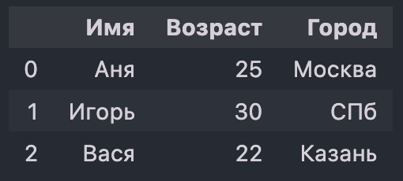
A DataFrame built from a dictionary: the dictionary keys became column names, and an index 0, 1, 2 — the row numbers — appeared automatically on the left. Before computing anything, you look at the table. The standard set:
df.head()— the first five rows, to see what's inside at all;df.shape— how many rows and columns;df.info()— column types and the number of non-null values: you immediately see where values are missing and where a number accidentally ended up as a string;df.describe()— basic statistics for numeric columns: mean, min, max, quartiles;df.isna().sum()— how many missing values are in each column.
These five commands answer the first question of any analysis: "what did they actually send me?"
Core operations
# Selecting a column and rows df["Age"] # Series — a single column df[["Name", "City"]] # DataFrame — several columns # Filtering by a condition (boolean mask) df[df["Age"] > 24] # only the rows where the condition is true df[(df["Age"] > 24) & (df["City"] == "Moscow")] # parentheses are required! # A new column df["Adult"] = df["Age"] >= 18 # Grouping and aggregation df.groupby("City")["Age"].mean()The expression
df["Age"] > 24does not return rows — it returns a boolean mask: aSeriesofTrue/Falsevalues as long as the table.Then
df[mask]keeps only the rows markedTrue. That is why filtering is written in two "layers" and looks unusual at first.This is also why parentheses are required when combining conditions:
&("and") and|("or") have higher precedence than comparisons, so without parentheses the expression is parsed incorrectly. Andand/ordon't work here — they can't reduce an array of a thousand values to a singleTrue.The line
df.groupby("City")["Age"].mean()performs three steps:- Split — break the table into groups by the value of the "City" column: all Muscovites in one pile, all St. Petersburg residents in another.
- Apply — within each group, compute the mean of the "Age" column.
- Combine — put the results back together into a single
Serieswhose index is the city names.
This pattern covers a huge share of analytics tasks: average order value by category, conversion by acquisition channel, model error rate by user segment.
One of the main reasons for its popularity is a single interface to dozens of formats:
read_csv,read_excel,read_json,read_parquet,read_sql. Each has a matching write method:to_csv,to_parquet, and so on.Practical tip: for large data, prefer Parquet over CSV. It is columnar, compressed, and stores types, so it reads many times faster and doesn't require guessing what kind of column you're loading. The only advantage of CSV is that a human can read it.
SettingWithCopyWarning. Assigning into the result of a chain (df[df.a > 1]["b"] = 0) may modify a temporary copy rather than the table. The correct way is via.loc:df.loc[df.a > 1, "b"] = 0.- Mixing up
locandiloc.df.loc[5]looks up the row with label 5 in the index;df.iloc[5]returns the sixth row (positions start at zero). After filtering, labels no longer match positions, and the difference becomes critical. NaNis not equal to itself.np.nan == np.nangivesFalse, so searching for missing values by comparison is useless — use.isna()and.notna().
pandas keeps all data in RAM and runs in a single thread. Actual memory usage is typically 2–5 times the file's size on disk: string columns are stored as Python objects, and operations create intermediate copies.
The practical threshold is tables up to roughly 1–2 GB on an ordinary machine. Beyond that, you have options:
- Optimize pandas. This often helps without switching tools: a categorical type for repeated strings (
astype("category")), smaller numeric widths (float64$\to$float32), reading only the needed columns (usecols=), reading in chunks (chunksize=). polars— if the data fits in memory but everything is slow. It is implemented in Rust, multithreaded, with lazy evaluation.dask— if the data doesn't fit in memory: it splits the table into chunks and processes them one at a time or on a cluster, while keeping a pandas-like API.
Criterion / Library pandasdaskpolarsMain purpose In-memory data processing; the de facto standard in the Python ecosystem Parallel processing and scaling pandas to large data Fast, multithreaded data processing focused on performance Data volume Up to ~1–2 GB (limited by RAM) Huge datasets processed in chunks Very large datasets thanks to lazy and streaming processing Processing speed Medium Medium–high (depending on configuration) Very high, thanks to the Rust implementation Parallelism — (single-threaded) + (distributed) + (multithreaded) Working with disk — (in memory only) + (processes files in chunks) Partial (via lazy mode and the streaming API) API The classic pandas API Similar to pandas, requires adaptation Its own, but concise and expressive Lazy evaluation — + + (built in by default) Memory usage High Optimized (chunked processing) Very efficient (columns are stored compactly) Implementation language Python (with C under the hood) Python + multiprocessing (with support for distributed clusters) Rust (very high performance) No. pandas remains the de facto standard: tutorials, Stack Overflow answers, courses, and most existing code are written with it, and sklearn, matplotlib, and seaborn accept a
DataFramedirectly.A sensible order is to master pandas and bring in
polarsanddaskselectively when you hit performance limits. They share the same concepts (columns, filters, grouping), so the switch takes days, not months.What is pandas, and what data structures does it provide?
A library for working with tabular data.
Seriesis a single column: values plus an index.DataFrameis a table ofSeriescolumns with a shared index.When is pandas preferable to NumPy?
When the data is a table with named columns of different types, missing values, and a meaningful index. NumPy is better for homogeneous numeric arrays and matrix computations; inside pandas, each column is still a NumPy array.
Which commands do you run first when exploring a table?
df.head()to look at the contents,df.shapefor the dimensions,df.info()for column types and non-null counts,df.describe()for basic statistics,df.isna().sum()for the number of missing values per column.How does filtering rows by a condition work?
An expression like
df["Age"] > 24returns a boolean mask — aSeriesofTrue/False— anddf[mask]keeps the rows withTrue. Conditions are combined with the&and|operators, and each one must be wrapped in parentheses: these operators have higher precedence than comparisons.and/orcan't be used here.What does
groupbydo, and what principle is it based on?It implements the "split — apply — combine" scheme: rows are split into groups by a column's value, an aggregation is applied within each group, and the results are combined into a new structure with the groups in the index. Most analytics reports are built on this.
How does
locdiffer fromiloc?locaccesses by index labels,ilocby positions. After filtering, labels no longer match ordinal positions, and using one in place of the other returns the wrong rows without any error.What is pandas' limitation, and when should you look at polars or dask?
pandas keeps data in memory and runs single-threaded, and actual memory usage is several times the file size; the practical ceiling is 1–2 GB. First try optimization (categorical types,
float32,usecols,chunksize), thenpolarsif you need speed and the data fits in memory, anddaskif the data doesn't fit in memory.Why is Parquet preferred over CSV for large data?
Parquet is columnar, compressed, and stores column types, so it reads much faster, takes less space, and doesn't require guessing types on load. The only advantage of CSV is that it's human-readable.
-
matplotlib: data visualizationMatplotlib is Python's foundational plotting library: line charts, histograms, scatter plots, heatmaps, 3D surfaces.
It is the base of the whole visualization ecosystem:
seabornandpandasplots (df.plot()) are built on top of it, so knowing matplotlib lets you fine-tune anything those higher-level tools draw.Because a table of numbers hides what the eye sees instantly:
- outliers — a single salary of a million among tens of thousands shifts the mean, but in a table it goes unnoticed;
- the shape of a distribution — data with completely different shapes can have the same mean and standard deviation;
- relationships between features — linear dependencies, clusters, and gaps in the data show up on a scatter plot in a second;
- data errors — negative ages, dates in the future, a "spike" at zero where missing values were filled with zeros.
Visualization is not decoration at the end — it is a working tool during exploratory data analysis.
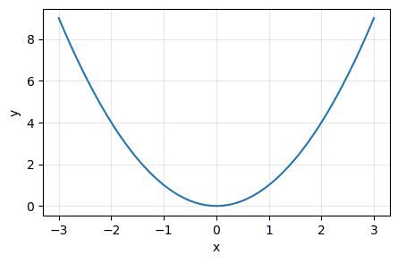
The simplest plot: 400 points along the $x$ axis joined by a line. Axis labels, a grid, and a title are the bare minimum — without them the plot is unreadable apart from the code. import numpy as np import matplotlib.pyplot as plt x = np.linspace(-3, 3, 400) # 400 evenly spaced points between -3 and 3 y = lambda x: x**2 plt.figure(figsize=(5, 3)) # new 5x3-inch canvas plt.plot(x, y(x)) # draw the curve plt.xlabel("x") # x-axis label plt.ylabel("y") # y-axis label plt.grid(True, alpha=0.3) # grid, alpha is transparency plt.title("y = x^2") # title plt.show() # display the resultnp.linspace(-3, 3, 400)— 400 evenly spaced points. The more there are, the smoother the curve: matplotlib does not draw a function, it connects the given points with line segments. With 10 points the parabola would look jagged.plt.figure(figsize=(5, 3))— creates a canvas; the size is given in inches, and the actual size in pixels also depends ondpi.plt.plot(x, y)— draws a line through coordinate pairs.xandymust have the same length.plt.show()— displays the figure. In scripts, no window appears without it; in Jupyter the plot shows up anyway, butshow()also clears the current figure, which keeps neighboring plots from "merging".
A curve with no indication of what is on the axes and in which units carries no information: you can't check it, discuss it, or put it in a report.
The bare minimum is
xlabel,ylabel,title, pluslegend()when there are several curves. Each is one line of code, and they separate a real result from a picture "for yourself".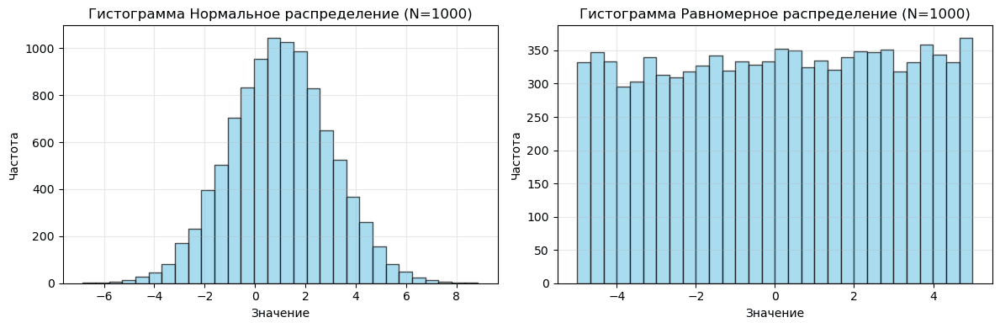
Two histograms side by side: on the left, a normal distribution with its characteristic bell shape and symmetry around the center; on the right, a uniform one with roughly equal bar heights across the whole range. The shape of the distribution is visible instantly, whereas it can't be recovered from the mean and variance. import numpy as np import matplotlib.pyplot as plt np.random.seed(42) # fix the randomness so the picture is reproducible data = { "Normal distribution": np.random.normal(loc=1, scale=2, size=1000), "Uniform distribution": np.random.uniform(-5, 5, 1000), } fig, ax = plt.subplots(1, len(data), figsize=(12, 4)) for i, (k, v) in enumerate(data.items()): ax[i].hist(v, bins=30, color='skyblue', edgecolor='black', alpha=0.7) ax[i].set_title(f"Histogram: {k} (N=1000)") ax[i].set_xlabel("Value") ax[i].set_ylabel("Frequency") ax[i].grid(True, alpha=0.3) plt.tight_layout() # space out labels so they don't overlap plt.show()plt.subplots(1, 2)returns two objects:fig— the whole figure, the "sheet of paper";ax— the axes, i.e., a separate coordinate system with a plot inside. With several subplots this is an array of axes, and you access the one you need by index:ax[0],ax[1].
Note the difference in names: on
pltthe method isxlabel, while on an axes object it'sset_xlabel. These are two different matplotlib interfaces: the shortplt.*works implicitly with the "current" figure, while the object-orientedax.*works explicitly with specific axes.For a single quick plot
plt.*is handier; for several subplots and for functions that draw plots, usefig, ax = plt.subplots(). The second approach is considered more correct and is recommended by default.It fixes the initial state of the random number generator, so every run produces the same "random" data.
This is needed for reproducibility: the plot in a report doesn't change between runs, a colleague gets the same picture, and a bug you found can be reproduced. The same idea is behind
random_state=42intrain_test_splitand sklearn models.plot— a line: how a quantity changes over time or along an ordered axis (learning curves, metrics per epoch).hist— a histogram: how the values of a single variable are distributed.scatter— points: the relationship between two variables, clusters, outliers.bar— bars: comparing categories with each other.imshow— an image or a matrix rendered as colors: confusion matrix, correlations, the image itself.boxplot— a "box and whiskers": a compact comparison of distributions across groups.
The plot type is chosen by the question the plot answers, not by how pretty it looks.
plt.savefig("plot.png", dpi=150, bbox_inches="tight")— call it beforeplt.show(), otherwise you'll save an empty canvas:show()clears the current figure.dpicontrols resolution (150–300 for reports), andbbox_inches="tight"trims extra margins and keeps labels from getting cut off. For documents and presentations it's better to save in a vector format —.svgor.pdf: it scales without quality loss.seaborn— a layer on top of matplotlib: statistical plots in one line and a decent default look. Works withDataFramedirectly.plotly— interactive plots: zooming, tooltips, 3D rotation. Great for notebooks and dashboards, heavier for static reports.altair— declarative syntax: you describe what to show, not how to draw it.bokeh— interactive visualization for web applications.
None of them replaces matplotlib: seaborn returns matplotlib objects, and you fine-tune the result with matplotlib's own methods.
An interactive plotly chart: what would require a separate animation and manual setup in matplotlib comes out of the box here — at the cost of heavier output and a browser dependency. A good guide to various visualization methods.
What is matplotlib and what is it used for?
Python's foundational visualization library: line charts, histograms, scatter plots, heatmaps, 3D, and animations. Seaborn and pandas plots are built on top of it, so knowing it lets you fine-tune any plot in the ecosystem.
Why plot if you have numeric summaries?
Because the mean and variance don't show the shape of the distribution, outliers, clusters, or data errors. Samples with different shapes can have identical statistics; on a plot the difference is visible instantly.
What do
plt.figure(),plt.plot(), andplt.show()do?figure()creates a canvas of a given size in inches,plot(x, y)connects the given point pairs with line segments (the function itself isn't evaluated — only the passed points are drawn), andshow()displays the figure and clears it.What does
plt.subplots()return, and why use the object-oriented interface?A pair
fig, ax: the whole figure and the axes — separate coordinate systems. With several subplotsaxis an array, and each one is accessed by index. The object-oriented interface (ax.set_xlabel) is more precise than the short one (plt.xlabel) because it explicitly states which axes a command applies to, and it is recommended by default.What must every plot have?
Axis labels (
xlabel,ylabel), a title (title), and a legend when there are several curves. Without them the plot can't be interpreted apart from the code.Why fix
np.random.seed?So that the "random" data is the same on every run. This gives reproducibility: the same plot in the report, the same picture for a colleague, a reproducible bug. The equivalent in models is the
random_stateparameter.How do you save a plot to a file correctly?
plt.savefig("plot.png", dpi=150, bbox_inches="tight")before callingshow(), otherwise an empty figure gets saved.bbox_inches="tight"keeps labels from being cut off; for documents, vector.svgand.pdfare preferable.What modern alternatives exist, and do they replace matplotlib?
seabornfor one-line statistical plots,plotlyandbokehfor interactivity,altairfor declarative descriptions. They don't fully replace it: seaborn returns matplotlib objects, and fine-tuning is done with matplotlib's tools.
-
argparse: Parsing Command-Line Argumentsargparseis the standard Python module for parsing command-line arguments: the words a user types after the script name when running it (python train.py --epochs 50). The module can declare positional and named arguments, convert them to the right type, fill in default values, and generate--helpoutput on its own.In the simplest terms:
argparseturns a set of words typed in the terminal into an ordinary Python object with fields — instead of you parsing a list of strings by hand.A CLI (command-line interface) is a way to control a program with a text command rather than a mouse. In ML it's the main way to run things: you want to run a training script with one learning rate, then another, without rewriting code.
The rule is simple: anything that changes from run to run should come in as an argument, not be hard-coded as a constant. Otherwise the experiment can neither be reproduced nor queued up on a cluster.
Python itself puts the launch arguments into a list of strings,
sys.argv: callingpython train.py 50 0.01gives['train.py', '50', '0.01'].Parsing this by hand is painful: you have to remember the order, call
int()andfloat()manually, write your own checks for "what if the argument wasn't passed", print your own help, and produce your own clear error messages.argparsedoes all of this for you and throws in--helpfor free.Positional arguments
# main.py import argparse parser = argparse.ArgumentParser(description="An example CLI") parser.add_argument("name", help="User name") args = parser.parse_args() print(f"Hello, {args.name}!")python main.py Alice # Hello, Alice! python main.py --help # usage: main.py [-h] name # positional arguments: # name User nameArgumentParser(description=...)— create the "parser"; the description text goes into the header of the help output.add_argument("name", ...)— declare an argument. A name without dashes means a positional argument: it's required, and its value is taken by its position in the command.parse_args()— the moment argparse reads the actual command line, validates it, and returns theargsobject. From then on the value is available as an ordinary field:args.name.
Note that nobody declared
-h/--help— argparse adds it by itself.Named arguments, types, default values
# train.py import argparse parser = argparse.ArgumentParser(description="Model training") parser.add_argument("--epochs", type=int, default=10, help="Number of epochs") parser.add_argument("--lr", type=float, default=0.001, help="Learning rate") parser.add_argument("--model", type=str, default="mlp", choices=["mlp", "cnn", "rnn"]) parser.add_argument("--verbose", action="store_true", help="Verbose output") args = parser.parse_args() print(f"Model: {args.model}, epochs: {args.epochs}, lr: {args.lr}") if args.verbose: print("Verbose mode enabled")python train.py --epochs 50 --lr 0.01 --model cnn --verbose # Model: cnn, epochs: 50, lr: 0.01 # Verbose mode enabled python train.py # all values are defaults python train.py --model lstm # error: invalid choice 'lstm'- A name with
--makes the argument named (also called an option or a flag): it's optional, order doesn't matter, and you refer to it by name. type=int/type=float— everything from the terminal arrives as a string, even50. This parameter tells argparse to apply the given function to the string. If the user writes--epochs abc, the program won't crash with a confusing traceback; it will politely sayinvalid int value: 'abc'.default=10— what to substitute if the argument isn't passed. Withoutdefault, the value isNone.choices=[...]— a whitelist of allowed values; anything else is rejected before your code even runs.help="..."— the string that shows up in--help. Always write it: a month from now you'll be reading this help yourself.
--verboseis an on/off flag; it has no value.action="store_true"means: "if the flag is present in the command, putTrueintoargs.verbose; if not,False".That's why you write
python train.py --verbose, notpython train.py --verbose True. The opposite,action="store_false", defaults toTrueand becomesFalsewhen the flag is given.An argument declared as
--batch-sizeis read in code asargs.batch_size, notargs.batch-size(the latter isn't even valid Python: the interpreter would see subtraction). argparse does this substitution automatically, and people trip over it regularly.Multiple values (
nargs)parser.add_argument("--files", nargs="+", help="One or more files") parser.add_argument("--point", nargs=2, type=float, metavar=("X", "Y")) args = parser.parse_args(["--files", "a.txt", "b.txt", "--point", "1.5", "2.3"]) print(args.files) # ['a.txt', 'b.txt'] print(args.point) # [1.5, 2.3]nargs(number of arguments) answers the question "how many values does this argument consume":nargs=2— exactly two values; the result comes as a list.nargs="+"— one or more (like+in regular expressions).nargs="*"— zero or more, i.e. the argument can be given with no values at all.nargs="?"— zero or one.
The
metavar=("X", "Y")parameter only affects the help: instead of a faceless--point POINT POINT,--helpshows--point X Y.A useful detail: in the example, a list of strings is passed to
parse_argsby hand — a convenient way to test a CLI without running the script from the terminal. In production code you callparse_args()without arguments, and it reads the real command line.Subcommands (
subparsers)Sometimes one program can do several different things, each with its own set of parameters. The classic example is
git:git commit -m "..."andgit push --forcecall the same program but different modes with different options.subparserslet you do the same:python cli.py train --epochs 20andpython cli.py eval --checkpoint model.pt. Each subcommand gets its own small parser and its own help.parser = argparse.ArgumentParser() subparsers = parser.add_subparsers(dest="command") train_p = subparsers.add_parser("train", help="Train the model") train_p.add_argument("--epochs", type=int, default=10) eval_p = subparsers.add_parser("eval", help="Evaluate the model") eval_p.add_argument("--checkpoint", required=True) args = parser.parse_args() if args.command == "train": print(f"Training: {args.epochs} epochs") elif args.command == "eval": print(f"Evaluating checkpoint: {args.checkpoint}")python cli.py train --epochs 20 python cli.py eval --checkpoint model.ptdest="command"is the name of the field where argparse puts the name of the chosen subcommand. After parsing,args.commandequals the string"train"or"eval", and you branch your logic on it.required=Trueon--checkpointmakes a named argument mandatory: evaluating a model without specifying a checkpoint makes no sense, so running without it should be forbidden immediately rather than failing midway.- Expecting an
intbut getting a string. You forgottype=int— andargs.epochsturns out to be the string"50", sorange(args.epochs)fails with aTypeError. The string"0"is also truthy in anifcondition, which leads to especially nasty silent bugs. - A required positional argument where an optional one was needed. A positional argument is required by default — the script won't even start without it.
- Empty
help. A CLI without argument descriptions is unreadable a week later, even for its author. - Parsing
sys.argvby hand "because there's only one parameter". One parameter always turns into five; rewriting later costs more than declaring a parser right away.
Practically every training script has an argparse interface: hyperparameters (
--lr,--batch-size,--epochs), paths to data and checkpoints, the GPU number, the seed. This gives you three things: running batches of experiments from a bash loop, reproducibility (the launch command is saved in the experiment logs), and compatibility with cluster job schedulers.For more complex configurations (nested parameters, YAML files), people use higher-level tools —
click,typer,hydra— but the idea is the same, and they all grew out of this problem.What is argparse and what problem does it solve?
It's the standard module for parsing command-line arguments. It turns the list of strings from
sys.argvinto an object with typed fields, fills in default values, validates input, and automatically generates--help. It's needed so launch parameters (hyperparameters, paths) aren't hard-coded.How do named arguments (
--name) differ from positional ones?Positional arguments are written without dashes, are required, and their meaning is determined by their order in the command. Named arguments are written with
--, are optional, their relative order doesn't matter, and they can have adefault.Why do you need the
typeparameter, and what happens without it?Any value from the command line arrives as a string.
type=intmakes argparse convert it and produce a clear error on failure. Withouttype, the field holds a string — and the code fails later, in an unexpected place, for example atrange("50").What does
action="store_true"do?It creates a toggle flag with no value: if
--verboseis in the command,args.verbose == True, otherwiseFalse. Writing--verbose Trueis unnecessary and wrong.How do you implement subcommands like
git commit/git push?Via
subparsers = parser.add_subparsers(dest="command")andsubparsers.add_parser("train")for each command. Each subcommand has its own set of arguments and its own help, and the name of the chosen command is available asargs.command.Why is
--batch-sizeread asargs.batch_size?argparse automatically replaces dashes in the name with underscores, because
args.batch-sizeis a syntactically invalid expression in Python (the interpreter would read it as subtraction).